9. دراسة حالة
9.1. مقدمة
سنقدم دراسة حالة نُشرت سابقًا في مقال متاح على الرابط [http://tahe.developpez.com/dotnet/pam-aspnet/]. في تلك المقالة، تم تنفيذ دراسة الحالة باستخدام ASP.NET الكلاسيكي و ORM NHibernate. هنا، سنقوم بتنفيذها باستخدام ASP.NET MVC و ORM Entity Framework. كما هو الحال في المقالة الحالية، يتم تقديم دراسة الحالة كواجب مختبري جامعي. ولذلك فهي موجهة للطلاب. بالنسبة لجميع الأسئلة، يتم توفير إحالات إلى الفصول التي قمنا بتفصيلها للتو للإشارة إلى مواد قراءة مفيدة.
9.2. : المشكلة المطلوب حلها
نريد كتابة تطبيق ويب يسمح للمستخدم بمحاكاة حسابات الرواتب لمقدمي رعاية الأطفال في جمعية "Maison de la petite enfance" في بلدية محلية. سنركز على تنظيم كود .NET للتطبيق بقدر ما سنركز على الكود نفسه.
سيكون التطبيق تطبيقًا من صفحة واحدة (SPA) وسيستخدم فقط استدعاءات Ajax للتواصل مع الخادم. وسيقدم للمستخدم العروض التالية:
- عرض [VueSaisies]، الذي يعرض نموذج المحاكاة

- عرض [VueSimulation] المستخدم لعرض النتائج التفصيلية للمحاكاة:

- طريقة العرض [SimulationsView]، التي تسرد عمليات المحاكاة التي أجراها العميل
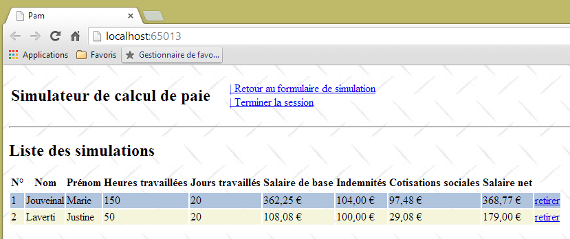
- عرض [VueSimulationsVides]، الذي يشير إلى أن العميل ليس لديه محاكاة أو لم يعد لديه محاكاة:

- عرض [VueErreurs]، الذي يشير إلى وجود خطأ واحد أو أكثر (هنا، تم إيقاف تشغيل نظام إدارة قواعد البيانات MySQL):
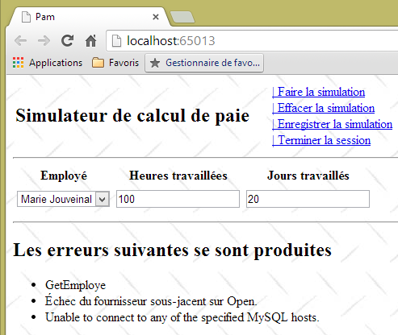
9.3. بنية التطبيق
ستكون بنية التطبيق على النحو التالي:
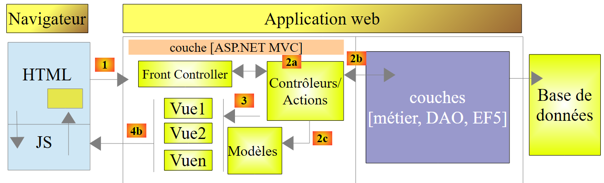 |
تشير طبقة [EF5] إلى Entity Framework 5 ORM. وسيكون نظام إدارة قواعد البيانات المستخدم هو MySQL.
سنقوم أولاً ببناء هذا التطبيق باستخدام طبقة [business] محاكاة:
 |
وهذا سيسمح لنا بالتركيز حصريًا على طبقة [web]. وستلتزم طبقة [business] المحاكاة بواجهة طبقة [business] الفعلية. وبمجرد أن تصبح طبقة [web] جاهزة للعمل، سنقوم بعد ذلك ببناء طبقات [business] و[DAO] و[EF5].
9.4. قاعدة البيانات
يتم تخزين البيانات الثابتة اللازمة لإنشاء كشف الراتب في قاعدة بيانات MySQL باسم [dbpam_ef5] (pam = Paie Assistante Maternelle). تحتوي قاعدة البيانات هذه على مسؤول باسم root بدون كلمة مرور. وتحتوي على ثلاثة جداول:

توجد علاقة مفتاح خارجي بين عمود EMPLOYEES(INDEMNITE_ID) وعمود INDEMNITIES(ID). يتم تحديد بنية قاعدة البيانات هذه حسب استخدامها مع EF5. سنعود إلى هذا الموضوع عند إنشاء الطبقات السفلية للتطبيق.
الهيكل:
ID: المفتاح الأساسي الذي يتم زيادته تلقائيًا بواسطة نظام إدارة قواعد البيانات (DBMS) SSN: رقم الضمان الاجتماعي للموظف - فريد NAME: لقب الموظف FIRST NAME: الاسم الأول ADDRESS: عنوانه CITY: مدينته ZIP: الرمز البريدي الخاص به VERSIONING: عدد صحيح يتم زيادة قيمته تلقائيًا في كل مرة يتم فيها تعديل السجل INDEMNITY_ID: مفتاح خارجي في حقل [ID] في جدول [INDEMNITES]

قد يكون محتواه كما يلي:

الهيكل:
ID: المفتاح الأساسي الذي يتم زيادة قيمته تلقائيًا بواسطة نظام إدارة قواعد البيانات (DBMS)CSGRDS: النسبة المئوية: المساهمة الاجتماعية العامة + المساهمة في سداد الديون الاجتماعيةCSGD: النسبة المئوية: المساهمة الاجتماعية العامة القابلة للخصمSECU: النسبة المئوية: الضمان الاجتماعيPENSION: النسبة المئوية: المعاش التكميلي + التأمين ضد البطالةVERSIONING: عدد صحيح يتم زيادة قيمته تلقائيًا في كل مرة يتم فيها تعديل السجل

قد يكون محتواه كما يلي:

معدلات اشتراكات الضمان الاجتماعي مستقلة عن الموظف. يحتوي الجدول السابق على صف واحد فقط.
ID: المفتاح الأساسي الذي يتم زيادة قيمته تلقائيًا بواسطة نظام إدارة قواعد البيانات (DBMS)INDEX: مؤشر الراتب - فريدBASE_HOUR: السعر الصافي باليورو لساعة واحدة من الخدمة تحت الطلبDAILY_MAINTENANCE: بدل يومي باليورو لكل يوم رعايةMEAL_DAY: بدل وجبات باليورو لكل يوم رعايةPAID_LEAVE_ALLOWANCE: بدل الإجازة المدفوعة الأجر. هذه نسبة مئوية تُطبق على الراتب الأساسي.VERSIONING: عدد صحيح يتم زيادته تلقائيًا في كل مرة يتم فيها تعديل السجل

قد يكون محتواه كما يلي:

9.5. طريقة حساب راتب مقدم رعاية الأطفال
سنشرح الآن كيفية حساب الراتب الشهري لمقدم رعاية الأطفال. كمثال، سنستخدم راتب السيدة ماري جوفينال، التي عملت 150 ساعة على مدار 20 يومًا خلال فترة الدفع.
يتم أخذ العوامل التالية في الاعتبار: | [TOTALHOURS]: إجمالي ساعات العمل في الشهر [TOTALDAYS]: إجمالي عدد أيام العمل في الشهر | [TOTALHOURS]=150 [TOTALDAYS] = 20 |
يتم حساب الراتب الأساسي لمقدم رعاية الأطفال باستخدام الصيغة التالية: | [BASESALARY] = ([TOTALHOURS] * [HOURLYRATE]) * (1 + [CPALLOWANCE] / 100) | [BASESALARY]=(150*[2.1])*(1+0.15)= 362.25 |
يجب خصم عدد من اشتراكات الضمان الاجتماعي من هذا الراتب الأساسي: | الاشتراك الاجتماعي العام واشتراك سداد الدين الاجتماعي: [الراتب الأساسي]*[CSGRDS/100] الاشتراك الاجتماعي العام القابل للخصم: [الراتب الأساسي]*[CSGD/100] استحقاقات الضمان الاجتماعي والأرامل والشيخوخة: [الراتب الأساسي]*[SECU/100] المعاش التكميلي + صندوق التقاعد العام (AGPF) + التأمين ضد البطالة: [الراتب الأساسي]*[PENSION/100] | CSGRDS: 12.64 CSGD: 22.28 الضمان الاجتماعي: 34.02 المعاش التقاعدي: 28.55 |
إجمالي اشتراكات الضمان الاجتماعي: | [SOCIALCONTRIBUTIONS] = [BASESALARY] * (CSGRDS + CSGD + SECU + RETIREMENT) / 100 | [SOCIALCONTRIBUTIONS]=97.48 |
بالإضافة إلى ذلك، يحق لمقدمة رعاية الأطفال الحصول على بدل معيشة يومي وبدل وجبات عن كل يوم عمل. وبناءً على ذلك، تحصل على البدلات التالية: | [Allowances]=[TOTALDAYS]*(DAILYMAINTENANCE+DAILYMEAL) | [البدلات]=104 |
في النهاية، يكون الراتب الصافي الذي سيتم دفعه لمقدمة رعاية الأطفال كما يلي: | [الراتب الأساسي] - [اشتراكات الضمان الاجتماعي] + [البدلات] | [الراتب الصافي]=368.77 |
9.6. مشروع Visual Studio لطبقة [الويب]
سيكون مشروع Visual Web Developer للتطبيق كما يلي:
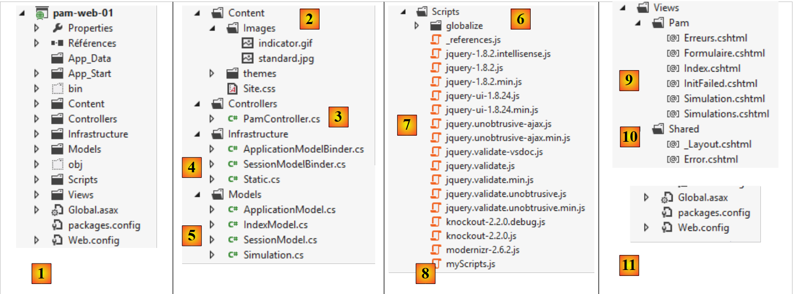 |
- في [1]، الهيكل العام لمشروع [pam-web-01]؛
- في [2]، المجلد [Content] هو المكان الذي يتم فيه تخزين الموارد الثابتة للمشروع:
- [indicator.gif]: الصورة المتحركة التي تظهر انتظار اكتمال طلب Ajax،
- [standard.jpg]: صورة الخلفية لمختلف طرق العرض،
- [Site.css]: ورقة أنماط التطبيق؛
- في [3]، وحدة التحكم الوحيدة للتطبيق [PamController]؛
- في [4]، الفئات المطلوبة من قبل التطبيق ولكن لا يمكن تصنيفها كمكونات MVC:
- [ApplicationModelBinder]: الفئة التي تسمح بتضمين بيانات نطاق [Application] في نموذج الإجراء،
- [SessionModelBinder]: الفئة التي تسمح بتضمين البيانات من نطاق [Session] في نموذج الإجراء،
- [Static]: فئة مساعدة ذات طرق ثابتة؛
- في [5]، نماذج التطبيق، سواء كانت نماذج إجراءات أو نماذج عرض:
- [ApplicationModel]: نموذج يحتوي على بيانات نطاق [Application]،
- [SessionModel]: نموذج يحتوي على بيانات نطاق [Session]،
- [Simulation]: فئة تغلف عناصر محاكاة حساب الراتب،
- [IndexModel]: نموذج العرض الأول [Index] الذي يعرضه التطبيق؛
- في [6]، نصوص JS المطلوبة لتعولم التطبيق؛
- في [7]، نصوص JS من عائلة JQuery المطلوبة للتدويل والتحقق من صحة البيانات من جانب العميل ووظائف AJAX للتطبيق؛
- في [8]، [myScripts.js] هو الملف الذي يحتوي على نصوص JS الخاصة بنا؛
- في [9]، طرق عرض التطبيق:
- [Index]: الصفحة الرئيسية،
- [Form]: نموذج لإدخال معلومات الموظفين وساعات عملهم وأيام عملهم،
- [Simulation]: العرض الذي يعرض محاكاة،
- [Simulations]: العرض الذي يعرض قائمة المحاكاة التي تم إجراؤها،
- [Errors]: العرض الذي يعرض قائمة بأي أخطاء،
- [فشل التهيئة]: العرض الذي يعرض رسائل الخطأ في حالة فشل تهيئة التطبيق؛
- في [10]، الصفحة الرئيسية للتطبيق [_Layout]؛
- في [11]، ملفات [Web.config] و [Global.asax] المستخدمة لتكوين التطبيق.
9.7. الخطوة 1 – إعداد طبقة [الأعمال] المحاكاة
من هذه النقطة فصاعدًا، نصف الخطوات التي يجب اتباعها لإكمال دراسة الحالة. عند الاقتضاء، نقدم رقم الفصل حتى تتمكن من مراجعته إذا لزم الأمر لإكمال المهمة. يتم توفير بعض عناصر المشروع في مجلد [aspnetmvc-support.zip] متاح على موقع الويب الخاص بهذا المستند. بداخله، ستجد مجلد [case-study-support] الذي يحتوي على المحتويات التالية:

يتضمن المشروع أيضًا عناصر تم عرضها في الفصول السابقة. يمكنك استردادها ببساطة عن طريق النسخ واللصق بين ملف PDF هذا و Visual Studio.
9.7.1. حل Visual Studio للتطبيق الكامل
أولاً، سننشئ حلاً لـ Visual Studio سنقوم فيه بإنشاء مشروعين:
- مشروع لطبقة [الأعمال] المحاكاة؛
- مشروع لطبقة الويب MVC.
 |
سنستخدم أداتين:
- Visual Studio Express 2012 for Desktop، الذي سيُستخدم لإنشاء طبقة [الأعمال]؛
- Visual Studio Express 2012 for the Web، الذي سيُستخدم لبناء طبقة [الويب].
باستخدام Visual Studio Express for Desktop، نقوم بإنشاء حل [pam-td]:
 |
- في [1]، حدد تطبيق C#؛
- في [2]، حدد [تطبيق وحدة التحكم]؛
- في [3]، قم بتسمية الحل؛
- في [4]، أنشئ دليلًا لهذا الحل؛
- في [5]، قم بتسمية طبقة [business]؛
- في [6]، الحل الذي تم إنشاؤه.
9.7.2. واجهة طبقة [الأعمال]
في بنية الطبقات، من الممارسات الجيدة أن تتم الاتصالات بين الطبقات عبر واجهات:
 |
ما هي الواجهة التي يجب أن تقدمها طبقة [الأعمال] إلى طبقة [الويب]؟ ما هي التفاعلات الممكنة بين هاتين الطبقتين؟ دعونا نستذكر واجهة الويب التي سيتم تقديمها للمستخدم:
 |
- عند العرض الأولي للنموذج، يجب أن تظهر قائمة الموظفين في [1]. يكفي وجود قائمة مبسطة (اللقب، الاسم الأول، رقم الضمان الاجتماعي). رقم الضمان الاجتماعي مطلوب للوصول إلى معلومات إضافية عن الموظف المحدد (الحقول من 6 إلى 11).
- المعلومات من 12 إلى 15 هي معدلات الاشتراكات المختلفة.
- المعلومات من 16 إلى 19 هي بدلات الموظف
- المعلومات من 20 إلى 24 هي مكونات الراتب المحسوبة بناءً على إدخالات المستخدم من 1 إلى 3.
يجب أن تفي واجهة [IPamMetier] التي توفرها طبقة [الأعمال] لطبقة [الويب] بالمتطلبات المذكورة أعلاه. هناك العديد من الواجهات الممكنة. نقترح ما يلي:
using Pam.Metier.Entites;
namespace Pam.Metier.Service
{
public interface IPamMetier
{
// list of all employee identities
Employe[] GetAllIdentitesEmployes();
// ------- salary calculation
FeuilleSalaire GetSalaire(string ss, double heuresTravaillées, int joursTravaillés);
}
}
- السطر 7: الطريقة التي ستملأ مربع القائمة المنسدلة [1]
- السطر 10: الطريقة التي ستسترد المعلومات من 6 إلى 24. وقد تم تجميع هذه المعلومات في كائن من النوع [PayrollSheet]، والذي سنصفه بعد قليل.
سنضع هذه الواجهة في مجلد [business/department]:
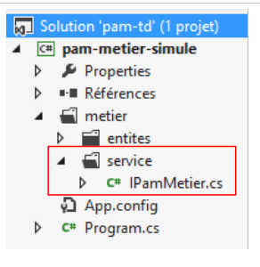 |
9.7.3. الكيانات في طبقة [business]
تستخدم الواجهة السابقة فئتين، [Employee] و [PayStub]، اللتين نحتاج إلى تعريفهما:
- تمثل [Employee] صفًا في جدول [employees] في قاعدة البيانات؛
- [PayStub] تمثل كشف راتب الموظف.
سيتم وضع الكيانات في مجلد [business/entities] داخل المشروع:
 |
في البنية النهائية، ستقوم طبقة [الأعمال] بمعالجة تمثيلات كيانات قاعدة البيانات:
سنستخدم الفئات التالية لتمثيل صفوف جداول قاعدة البيانات الثلاثة. راجع القسم 9.4 لمعرفة معاني الحقول المختلفة.
فئة [Employee]
تمثل صفًا في جدول [الموظفين]. وفيما يلي كودها:
using System;
namespace Pam.Metier.Entites
{
public class Employe
{
public string SS { get; set; }
public string Nom { get; set; }
public string Prenom { get; set; }
public string Adresse { get; set; }
public string Ville { get; set; }
public string CodePostal { get; set; }
public Indemnites Indemnites { get; set; }
// signature
public override string ToString()
{
return string.Format("Employé[{0},{1},{2},{3},{4},{5}]", SS, Nom, Prenom, Adresse, Ville, CodePostal);
}
}
}
فئة [Allowances]
تمثل صفًا في جدول [indemnites]. رمزها كما يلي:
using System;
namespace Pam.Metier.Entites
{
public class Indemnites
{
public int Indice { get; set; }
public double BaseHeure { get; set; }
public double EntretienJour { get; set; }
public double RepasJour { get; set; }
public double IndemnitesCp { get; set; }
// signature
public override string ToString()
{
return string.Format("Indemnités[{0},{1},{2},{3},{4}]", Indice, BaseHeure, EntretienJour, RepasJour, IndemnitesCp);
}
}
}
فئة [المساهمات]
تمثل صفًا في جدول [contributions]. رمزها كما يلي:
using System;
namespace Pam.Metier.Entites
{
public class Cotisations
{
public double CsgRds { get; set; }
public double Csgd { get; set; }
public double Secu { get; set; }
public double Retraite { get; set; }
// signature
public override string ToString()
{
return string.Format("Cotisations[{0},{1},{2},{3}]", CsgRds, Csgd, Secu, Retraite);
}
}
}
لاحظ أن الفئات لا تتضمن عمودي [ID] و[VERSIONING] من الجداول. هذه الأعمدة، التي تكون مفيدة عند استخدام EF5 ORM، ليست مطلوبة في سياق طبقة [الأعمال] المحاكاة.
تغلف فئة [FeuilleS al] المعلومات من 6 إلى 24 من النموذج المقدم سابقًا:
namespace Pam.Metier.Entites
{
public class FeuilleSalaire
{
// automatic properties
public Employe Employe { get; set; }
public Cotisations Cotisations { get; set; }
public ElementsSalaire ElementsSalaire { get; set; }
// ToString
public override string ToString()
{
return string.Format("[{0},{1},{2}]", Employe, Cotisations, ElementsSalaire);
}
}
}
- السطر 7: الحقول من 6 إلى 11 للموظف الذي يتم حساب راتبه، والحقول من 16 إلى 19 لبدلاته. لاحظ أن كائن [Employee] يغلف كائن [Allowances] الذي يمثل بدلاته؛
- السطر 8: المعلومات من 12 إلى 15؛
- السطر 9: المعلومات من 20 إلى 24؛
- الأسطر 12–14: طريقة [ToString].
تغلف فئة [Elements Salaire] المعلومات من 20 إلى 24 من النموذج:
namespace Pam.Metier.Entites
{
public class ElementsSalaire
{
// automatic properties
public double SalaireBase { get; set; }
public double CotisationsSociales { get; set; }
public double IndemnitesEntretien { get; set; }
public double IndemnitesRepas { get; set; }
public double SalaireNet { get; set; }
// ToString
public override string ToString()
{
return string.Format("[{0} : {1} : {2} : {3} : {4} ]", SalaireBase, CotisationsSociales, IndemnitesEntretien, IndemnitesRepas, SalaireNet);
}
}
}
- الأسطر 6–10: مكونات الراتب كما هو موضح في قواعد العمل المذكورة أعلاه؛
- السطر 6: الراتب الأساسي للموظف، بناءً على عدد ساعات العمل؛
- السطر 7: الاشتراكات المخصومة من هذا الراتب الأساسي؛
- السطران 8 و9: البدلات التي تضاف إلى الراتب الأساسي، بناءً على رتبة الموظف وعدد أيام العمل؛
- السطر 10: الراتب الصافي المقرر دفعه؛
- الأسطر 14-17: طريقة [ToString] للفئة.
9.7.4. فئة [PamException]
نقوم بإنشاء نوع استثناء محدد لتطبيقنا. وهو النوع [PamException] التالي:
using System;
namespace Pam.Metier.Entites
{
// exceptional class
public class PamException : Exception
{
// the error code
public int Code { get; set; }
// manufacturers
public PamException()
{
}
public PamException(int Code)
: base()
{
this.Code = Code;
}
public PamException(string message, int Code)
: base(message)
{
this.Code = Code;
}
public PamException(string message, Exception ex, int Code)
: base(message, ex)
{
this.Code = Code;
}
}
}
- السطر 6: الفئة مشتقة من فئة [Exception]؛
- السطر 10: تحتوي على خاصية عامة [Code] وهي رمز خطأ؛
- في تطبيقنا، سنستخدم نوعين من المنشئات:
- المنشئ الموجود في الأسطر 23–27، والذي يمكن استخدامه كما هو موضح أدناه:
- (تابع)
- أو المنشئ الموجود في الأسطر 29-33، والمصمم لنقل استثناء قد حدث عن طريق تغليفه في استثناء [PamException]:
try{
....
}catch (IOException ex){
// on encapsule l'exception ex
throw new PamException("Problème d'accès aux données",ex,10);
}
تتميز هذه الطريقة الثانية بعدم فقدان المعلومات التي قد تحتوي عليها الاستثناء الأول.
9.7.5. تنفيذ طبقة [الأعمال]
سيتم تنفيذ واجهة [IPamMetier] بواسطة فئة [PamMetier] التالية:
using System;
using Pam.Metier.Entites;
using System.Collections.Generic;
namespace Pam.Metier.Service
{
public class PamMetier : IPamMetier
{
// list of cached employees
public Employe[] Employes { get; set; }
// employees indexed by their SS number
private IDictionary<string, Employe> dicEmployes = new Dictionary<string, Employe>();
// list of employees
public Employe[] GetAllIdentitesEmployes()
{
...
// we return the list of employees
return Employes;
}
// salary calculation
public FeuilleSalaire GetSalaire(string ss, double heuresTravaillées, int joursTravaillés)
{
...
}
}
- السطر 7: تنفذ فئة [PamMetier] واجهة [IPamMetier]؛
- السطر 10: تحتفظ فئة [PamMetier] بقائمة الموظفين في ذاكرة التخزين المؤقت؛
- السطر 12: قاموس يربط الموظف برقم الضمان الاجتماعي الخاص به؛
- الأسطر 15–20: الطريقة التي تُرجع قائمة الموظفين؛
- الأسطر 23–26: الطريقة التي تحسب راتب الموظف.
طريقة [GetAllIdentitesEmploye] هي كما يلي:
// list of employees
public Employe[] GetAllIdentitesEmployes()
{
if (Employes == null)
{
// we create a table of three employees
Employes = new Employe[3];
Employes[0] = new Employe()
{
SS = "254104940426058",
Nom = "Jouveinal",
Prenom = "Marie",
Adresse = "5 rue des oiseaux",
Ville = "St Corentin",
CodePostal = "49203",
Indemnites = new Indemnites() { Indice = 2, BaseHeure = 2.1, EntretienJour = 2.1, RepasJour = 3.1, IndemnitesCp = 15 }
};
dicEmployes.Add(Employes[0].SS, Employes[0]);
Employes[1] = new Employe()
{
SS = "260124402111742",
Nom = "Laverti",
Prenom = "Justine",
Adresse = "La brûlerie",
Ville = "St Marcel",
CodePostal = "49014",
Indemnites = new Indemnites() { Indice = 1, BaseHeure = 1.93, EntretienJour = 2, RepasJour = 3, IndemnitesCp = 12 }
};
dicEmployes.Add(Employes[1].SS, Employes[1]);
// a fictitious employee who will not be included in the dictionary
// to simulate a non-existent employee
Employes[2] = new Employe()
{
SS = "XX",
Nom = "X",
Prenom = "X",
Adresse = "X",
Ville = "X",
CodePostal = "X",
Indemnites = new Indemnites() { Indice = 0, BaseHeure = 0, EntretienJour = 0, RepasJour = 0, IndemnitesCp = 0 }
};
}
// we return the list of employees
return Employes;
}
- السطر 4: نتحقق مما إذا كانت قائمة الموظفين لم يتم إنشاؤها بالفعل؛
- السطر 7: إذا لم تكن كذلك، قم بإنشاء مصفوفة من ثلاثة موظفين؛
- الأسطر 8-17: الموظف الأول؛
- السطر 18: يتم إضافته إلى القاموس؛
- الأسطر 19-28: الموظف الثاني؛
- السطر 29: يتم إضافته إلى القاموس؛
- الأسطر 32–42: الموظف الثالث. لا يُضاف هذا الموظف إلى القاموس لسبب سنشرحه لاحقًا.
ستكون طريقة [GetSalary] كما يلي:
// salary calculation
public FeuilleSalaire GetSalaire(string ss, double heuresTravaillées, int joursTravaillés)
{
// we retrieve employee n° SS
Employe e = dicEmployes.ContainsKey(ss) ? dicEmployes[ss] : null;
// exists?
if (e == null)
{
throw new PamException(string.Format("L'employé de n° SS [{0}] n'existe pas", ss), 10);
}
// a fictitious payslip is returned
return new FeuilleSalaire()
{
Employe = e,
Cotisations = new Cotisations() { CsgRds = 3.49, Csgd = 6.15, Secu = 9.38, Retraite = 7.88 },
ElementsSalaire = new ElementsSalaire() { CotisationsSociales = 100, IndemnitesEntretien = 100, IndemnitesRepas = 100, SalaireBase = 100, SalaireNet = 100 }
};
}
- السطر 2: تتلقى الطريقة رقم الضمان الاجتماعي للموظف الذي نريد حساب راتبه، وعدد ساعات العمل، وعدد أيام العمل؛
- السطر 5: نبحث عن الموظف في القاموس. تذكر أن أحدهم غير موجود؛
- الأسطر 7-10: إذا لم يتم العثور على الموظف، يتم إلقاء استثناء [PamException]؛
- الأسطر 12-17: يتم إرجاع كشف راتب وهمي.
9.7.6. اختبار وحدة التحكم لطبقة [الأعمال]
يبدو مشروع طبقة [business] حاليًا كما يلي:
 |
ستقوم فئة [Program] أعلاه باختبار أساليب واجهة [IPamMetier]. قد يكون المثال الأساسي كما يلي:
using Pam.Metier.Entites;
using Pam.Metier.Service;
using System;
namespace Pam.Metier.Tests
{
class Program
{
public static void Main()
{
// instantiation layer [business]
IPamMetier pamMetier = new PamMetier();
// list of employees
Employe[] employes = pamMetier.GetAllIdentitesEmployes();
Console.WriteLine("Liste des employés--------------------");
foreach (Employe e in employes)
{
Console.WriteLine(e);
}
// payslip calculations
Console.WriteLine("Calculs de feuilles de salaire-----------------");
Console.WriteLine(pamMetier.GetSalaire(employes[0].SS, 30, 5));
Console.WriteLine(pamMetier.GetSalaire(employes[1].SS, 150, 20));
try
{
Console.WriteLine(pamMetier.GetSalaire(employes[2].SS, 150, 20));
}
catch (PamException ex)
{
Console.WriteLine(string.Format("PamException : {0}", ex.Message));
}
}
}
}
- السطر 12: إنشاء مثيل لطبقة [business]؛
- الأسطر 14–19: اختبار طريقة [GetAllEmployeeIDs] لواجهة [IPamMetier]؛
- الأسطر 21–31: اختبار طريقة [GetSalaire] لواجهة [IPamMetier].
يؤدي تشغيل برنامج وحدة التحكم هذا إلى النتائج التالية:
ندعو القارئ إلى الربط بين هذه النتائج والكود الذي تم تنفيذه.
من أجل استخدام هذا المشروع في مشروع الويب الذي سنقوم ببنائه، سنقوم بتحويله إلى مكتبة فئات:
 |
- في [1]، في خصائص ملف [Program.cs]؛
- في [2]، نحدد أن الملف لن يكون جزءًا من التجميع الذي تم إنشاؤه؛
- في [3، 4]، في خصائص مشروع [pam-metier-simule]، ضمن خيار [Application] [3]، نحدد [4] أن عملية البناء يجب أن تنتج مكتبة فئات (في شكل DLL).
 |
- في [5]، نحدد تجميع [Release]. النوع الآخر هو [Debug]. ويحتوي التجميع عندئذٍ على معلومات لتسهيل عملية تصحيح الأخطاء؛
- في [6]، قم بإنشاء مشروع [pam-metier-simule]؛
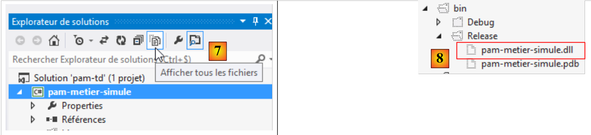 |
- في [7]، اعرض جميع الملفات الموجودة في الحل؛
- في [8]، في المجلد [bin/Release]، ملف DLL لمشروعنا.
9.8. الخطوة 2: إعداد تطبيق الويب
في حل Visual Studio السابق، سنقوم بإنشاء المشروع لطبقة الويب MVC.
 |
باستخدام Visual Studio Express for the Web، نفتح الحل [pam-td] الذي تم إنشاؤه مسبقًا باستخدام Visual Studio Express for the Desktop.
 |
- في [1]، تم تحميل حل [pam-td] في Visual Studio Express for the Web؛
- في [2]، الحل والمشروع الخاص بطبقة [business] المحاكاة التي أنشأناها للتو.
في هذه الخطوة الجديدة، سننشئ الهيكل الأساسي لتطبيق الويب.
 |
- في [1]، نضيف مشروعًا جديدًا إلى حل [pam-td]؛
 |
- في [2]، نختار مشروع ASP.NET MVC 4؛
- يسمى [pam-web-01] [3]؛
- في [4]، حدد قالب Basic ASP.NET MVC؛
- في [5]، يتم إنشاء المشروع؛
 |
- في [6]، نجعل المشروع الجديد هو مشروع بدء الحل، وهو المشروع الذي سيتم تشغيله عند الضغط على [Ctrl-F5]؛
- في [7]، يظهر اسم المشروع الجديد بخط عريض، مما يشير إلى أنه مشروع بدء الحل.
الآن، باستخدام مستكشف Windows، استبدل مجلد [Content] الخاص بالمشروع بمجلد [étudedecas-support / web / Content]. بمجرد الانتهاء من ذلك، يجب عليك تضمين الملفات الجديدة في مشروع [pam-web-01]. تابع كما يلي:
 |
- في [1]، قم بتحديث الحل؛
- في [2]، اعرض جميع الملفات في الحل؛
- في [3]، يظهر مجلد [Images]؛
- والذي تقوم بإضافته إلى المشروع في [4].
في مجلد [Scripts]، أضف نصوص JQuery Globalization [1] المطلوبة للتحقق من صحة البيانات من جانب العميل.
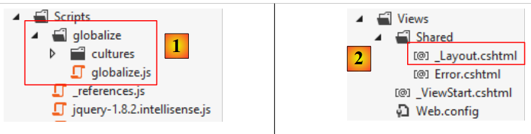 |
ستحتوي الصفحة الرئيسية [_Layout.cshtml] [2] على المحتوى التالي:
<!DOCTYPE html>
<html>
<head>
<title>@ViewBag.Title</title>
<meta charset="utf-8" />
<meta name="viewport" content="width=device-width" />
<link rel="stylesheet" href="~/Content/Site.css" />
<script type="text/javascript" src="~/Scripts/jquery-1.8.2.min.js"></script>
<script type="text/javascript" src="~/Scripts/jquery.validate.min.js"></script>
<script type="text/javascript" src="~/Scripts/jquery.validate.unobtrusive.min.js"></script>
<script type="text/javascript" src="~/Scripts/globalize/globalize.js"></script>
<script type="text/javascript" src="~/Scripts/globalize/cultures/globalize.culture.fr-FR.js"></script>
<script type="text/javascript" src="~/Scripts/jquery.unobtrusive-ajax.js"></script>
<script type="text/javascript" src="~/Scripts/myScripts.js"></script>
</head>
<body>
<table>
<tbody>
<tr>
<td>
<h2>Simulateur de calcul de paie</h2>
</td>
<td style="width: 20px">
<img id="loading" style="display: none" src="~/Content/images/indicator.gif" />
</td>
<td>
<a id="lnkFaireSimulation" href="javascript:faireSimulation()">| Faire la simulation<br />
</a>
<a id="lnkEffacerSimulation" href="javascript:effacerSimulation()">| Effacer la simulation<br />
</a>
<a id="lnkVoirSimulations" href="javascript:voirSimulations()">| Voir les simulations<br />
</a>
<a id="lnkRetourFormulaire" href="javascript:retourFormulaire()">| Retour au formulaire de simulation<br />
</a>
<a id="lnkEnregistrerSimulation" href="javascript:enregistrerSimulation()">| Enregistrer la simulation<br />
</a>
<a id="lnkTerminerSession" href="javascript:terminerSession()">| Terminer la session<br />
</a>
</td>
</tbody>
</table>
<hr />
<div id="content">
@RenderBody()
</div>
</body>
</html>
ملاحظة: في السطر 8، اضبط إصدار jQuery ليتوافق مع إصدار Visual Studio الخاص بك.
- السطر 7: إشارة إلى ورقة أنماط التطبيق؛
- الأسطر 8-10: إشارات إلى البرامج النصية المطلوبة للتحقق من صحة البيانات من جانب العميل؛
- السطران 11-12: إشارات إلى البرامج النصية المطلوبة لإدخال الأرقام العشرية الفرنسية بفاصلة؛
- السطر 13: إشارة إلى البرامج النصية المطلوبة لوضع Ajax؛
- السطر 14: نصوص برمجية خاصة بالتطبيق؛
- السطر 24: صورة التحميل لنداءات Ajax؛
- الأسطر 26-39: ستة روابط JavaScript؛
- السطر 43: القسم الذي سيتم فيه عرض طرق العرض المختلفة للتطبيق؛
- السطر 44: نص العروض المختلفة للتطبيق.
بعد ذلك، سنقوم بتعديل المسار الافتراضي للتطبيق:
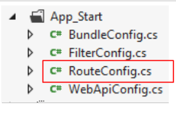 |
سيحتوي ملف [RouteConfig] على المحتوى التالي:
using System.Web.Mvc;
using System.Web.Routing;
namespace pam_web_01
{
public class RouteConfig
{
public static void RegisterRoutes(RouteCollection routes)
{
routes.IgnoreRoute("{resource}.axd/{*pathInfo}");
routes.MapRoute(
name: "Default",
url: "{controller}/{action}",
defaults: new { controller = "Pam", action = "Index" }
);
}
}
}
- السطر 14: ستكون عناوين URL بالشكل [{controller}/{action}];
- السطر 15: إذا لم يتم تحديد أي إجراء، فسيتم استخدام الإجراء [Index]. إذا لم يتم تحديد أي وحدة تحكم، فسيتم استخدام وحدة التحكم [Pam].
نتيجة لهذا التكوين، فإن عنوان URL [/] يعادل عنوان URL [/Pam/Index]. نظرًا لأن تطبيقنا عبارة عن واجهة برمجة تطبيقات (API)، فإن عنوان URL [/] سيكون عنوان URL الوحيد له.
قم بإنشاء وحدة التحكم [Pam]:

قم بتعديل [PamController] على النحو التالي:
using System.Web.Mvc;
namespace Pam.Web.Controllers
{
public class PamController : Controller
{
[HttpGet]
public ViewResult Index()
{
return View();
}
}
}
- السطر 3: نضع وحدة التحكم في مساحة الاسم [Pam.Web.Controllers]؛
- السطر 7: ستتعامل الإجراء [Index] فقط مع طلب HTTP GET؛
- السطر 8: نُرجع نوع [ViewResult] بدلاً من نوع [ActionResult].
الآن قم بإنشاء عرض [Index.cshtml] الذي يعرضه الإجراء [Index] أعلاه:
 |
قم بتعديل [Index.cshtml] على النحو التالي:
@{
ViewBag.Title = "Pam";
}
<h2>Formulaire</h2>
قم بتشغيل التطبيق بالضغط على [Ctrl-F5]. ستظهر لك الصفحة التالية:

المهمة: اشرح ما حدث.
يستخدم التطبيق ورقة أنماط مشار إليها في الصفحة الرئيسية [_Layout.cshtml]:
<link rel="stylesheet" href="~/Content/Site.css" />
تحدد ورقة الأنماط [/Content/Site.css] صورة خلفية لصفحات التطبيق:
body {
background-image: url("/Content/Images/standard.jpg");
}
 |
9.9. الخطوة 3: تنفيذ نموذج SPU
نريد كتابة تطبيق يتبع نموذج SPU (تطبيق الصفحة الواحدة) الموصوف في القسم 7.5 والقسم 7.6. الصفحة الواحدة هي تلك التي يتم تحميلها بواسطة المتصفح عند بدء تشغيل التطبيق:
 |
- القسم [1] أعلاه هو الجزء الثابت من الصفحة الواحدة. وقد رأينا أنه يتم توفيره بواسطة الصفحة الرئيسية [_Layout.cshtml]؛
- الجزء [2] هو الجزء المتغير من الصفحة الواحدة. ويقع داخل منطقة معرف [content] للصفحة الرئيسية [_Layout.cshtml]:
<!DOCTYPE html>
<html>
<head>
<title>@ViewBag.Title</title>
...
<script type="text/javascript" src="~/Scripts/myScripts.js"></script>
</head>
<body>
<table>
...
</table>
<hr />
<div id="content">
@RenderBody()
</div>
</body>
</html>
سيتم عرض أجزاء الصفحات المختلفة للتطبيق في المنطقة التي تحمل المعرف [content] في السطر 13. وسيتم عرضها عبر استدعاءات Ajax. توجد نصوص JavaScript التي تنفذ هذه الاستدعاءات في الملف [myScripts.js] المشار إليه في السطر 6. قم بإنشاء هذا الملف، الذي سنحتاج إليه:
 |
نحن الآن نتبع نموذج APU الموصوف في القسم 7.6. أعد قراءة هذا القسم إذا كنت قد نسيته. سنقوم الآن بإعداد أجزاء الصفحة المختلفة التي يعرضها التطبيق.
9.9.1. أدوات مطوري JavaScript
تذكر أنه مع متصفح Chrome، لديك مجموعة من الأدوات لتصحيح أخطاء HTML و CSS و JavaScript في صفحاتك. تم تقديم هذه الأدوات جزئيًا في القسم 7.2. في نموذج APU، تقوم المتصفحات بتخزين نصوص JavaScript المشار إليها في الصفحة الأولى للتطبيق في ذاكرة التخزين المؤقت. لذلك، يجب أن تتذكر مسح ذاكرة التخزين المؤقت هذه عند تعديل نصوصك؛ وإلا، فقد لا يتم تطبيق التغييرات. وإليك كيفية القيام بذلك في Chrome:
- اضغط على [Ctrl-Shift-I] لفتح أدوات المطور
 |
- انقر على أيقونة [1] في الزاوية اليمنى السفلية من وحدة تحكم المطور؛
- ثم حدد الخيار [2] الذي يعطل ذاكرة التخزين المؤقت في وضع المطور.
9.9.2. استخدام عرض جزئي لعرض النموذج
يعد نموذج الإدخال أحد الأجزاء التي يعرضها التطبيق. حاليًا، يتم عرض هذا النموذج بواسطة عرض [Index.cshtml]، وهو عرض كامل:
@{
ViewBag.Title = "Pam";
}
<h2>Formulaire</h2>
يتم عرض هذا العرض بواسطة الإجراء [Index]:
[HttpGet]
public ViewResult Index()
{
return View();
}
يُظهر السطر 4 أعلاه أنه يتم عرض [View]، وليس [PartialView]. نحتاج إلى عرض جزئي للنموذج، والذي سيكون جزءًا من الصفحة. نقوم بتعديل عرض [Index.cshtml] على النحو التالي:
@{
ViewBag.Title = "Pam";
}
@Html.Partial("Formulaire")
السطر 4: لم يعد النموذج جزءًا من صفحة [Index.cshtml]. وهو موجود الآن في عرض جزئي [Form.cshtml]:
 |
فيما يلي كود [Form.cshtml] ببساطة:
<h2>Formulaire</h2>
قم بإجراء هذه التغييرات وتأكد من أنك لا تزال تحصل على العرض التالي عند بدء تشغيل التطبيق:

9.9.3. استدعاء Ajax [runSimulation]
نحن مهتمون بالجزء الذي يتم عرضه عندما ينقر المستخدم على رابط [Run Simulation]:
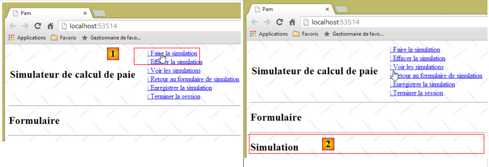 |
- في [1]، ينقر المستخدم على رابط [تشغيل المحاكاة]؛
- في [2]، تظهر المحاكاة أسفل النموذج.
نقوم بتحديث العرض الجزئي [Formulaire.cshtml] الذي يعرض النموذج على النحو التالي:
<h2>Formulaire</h2>
<div id="simulation" />
السطر 3: نقوم بإنشاء منطقة بمعرف [simulation] لاستيعاب جزء المحاكاة.
نقوم بإنشاء العرض الجزئي التالي [Simulation.cshtml]:
 |
محتوى العرض [Simulation.cshtml] هو كما يلي:
<hr />
<h2>Simulation</h2>
نحتاج الآن إلى كتابة كود JavaScript الذي يتعامل مع النقر على رابط [Run Simulation]. سنتبع الإجراء الموضح في القسم 7.6.5. أولاً، دعونا نلقي نظرة على كود HTML للرابط في [_Layout.cshtml]:
<a id="lnkFaireSimulation" href="javascript:faireSimulation()">| Faire la simulation<br />
</a>
يمكننا أن نرى أن النقر على رابط [Run Simulation] سيؤدي إلى تشغيل دالة JS [runSimulation]. سيتم كتابة هذه الدالة في ملف [myScripts.js]، جنبًا إلى جنب مع دوال JS الأخرى التي يتطلبها التطبيق:
// global variables
var loading;
var content;
function faireSimulation() {
// make a manual Ajax call
...
}
function effacerSimulation() {
// delete form entries
...
}
function enregistrerSimulation() {
// make a manual Ajax call
...
}
function voirSimulations() {
// make a manual Ajax call
...
}
function retourFormulaire() {
// make a manual Ajax call
...
}
function terminerSession() {
...
}
// document loading
$(document).ready(function () {
// retrieve the references of the page's various components
loading = $("#loading");
content = $("#content");
});
- الأسطر 35–39: وظيفة jQuery التي يتم تنفيذها عند بدء تشغيل التطبيق؛
- السطور 37-38: تهيئة المتغيرات العالمية من السطرين 2 و3.
لاحظ أن العناصر التي تحمل معرّفات [loading] و [content] محددة في الصفحة الرئيسية [_Layout.cshtml] (السطران 14 و 21 أدناه):
<!DOCTYPE html>
<html>
<head>
...
</head>
<body>
<table>
<tbody>
<tr>
<td>
<h2>Simulateur de calcul de paie</h2>
</td>
<td style="width: 20px">
<img id="loading" style="display: none" src="~/Content/images/indicator.gif" />
</td>
...
</td>
</tbody>
</table>
<hr />
<div id="content">
@RenderBody()
</div>
</body>
</html>
المهمة: باتباع الإجراء الموضح في القسم 7.6.5، اكتب دالة JS [faireSimulation]. سترسل هذه الدالة طلب Ajax من نوع POST إلى الإجراء [/Pam/FaireSimulation]. لن يتم نشر أي بيانات في الوقت الحالي. ستقوم الإجراء [/Pam/FaireSimulation] بإرجاع العرض الجزئي [Simulation.cshtml] إلى دالة JS [faireSimulation]، والتي ستقوم بعد ذلك بوضع هذا الإخراج HTML في المنطقة التي تحمل المعرف [simulation] في النموذج.
اختبر رابط [Run Simulation] في تطبيقك.
9.9.4. استدعاء Ajax [enregistrerSimulation]
يتم تعريف الرابط [Save Simulation] على النحو التالي في [_Layout.cshtml]:
<a id="lnkEnregistrerSimulation" href="javascript:enregistrerSimulation()">| Enregistrer la simulation<br />
</a>
المهمة: باتباع الخطوات السابقة، اكتب دالة JS [enregistrerSimulation]. سترسل هذه الدالة استدعاء Ajax من نوع POST إلى الإجراء [/Pam/EnregistrerSimulation]. لن يتم نشر أي بيانات في الوقت الحالي. ستقوم الإجراء [/Pam/EnregistrerSimulation] بإرجاع العرض الجزئي [Simulations.cshtml] إلى دالة JS [enregistrerSimulation]، والتي ستقوم بعد ذلك بوضع دفق HTML هذا في المنطقة ذات المعرف [content] على الصفحة الرئيسية.
العرض [Simulations.cshtml] هو كما يلي:
 |
محتواها كما يلي:
<h2>Simulations</h2>
فيما يلي مثال على التنفيذ:


9.9.5. استدعاء Ajax [viewSimulations]
يتم تعريف الرابط [عرض المحاكاة] على النحو التالي في [_Layout.cshtml]:
<a id="lnkVoirSimulations" href="javascript:voirSimulations()">| Voir les simulations<br />
</a>
المهمة: باتباع الإجراء السابق، اكتب دالة JS [viewSimulations]. سترسل هذه الدالة استدعاء Ajax من نوع POST إلى الإجراء [/Pam/ViewSimulations]. لن يتم إرسال أي بيانات في الوقت الحالي. ستقوم الإجراء [/Pam/VoirSimulations] بإرجاع العرض الجزئي [Simulations.cshtml] إلى دالة JS [voirSimulations]، والتي ستقوم بعد ذلك بوضع هذا الإخراج HTML في المنطقة ذات المعرف [content] على الصفحة الرئيسية.
العرض [Simulations.cshtml] هو نفسه الذي تم استخدامه في السؤال السابق.
فيما يلي مثال على التنفيذ:
 |
9.9.6. استدعاء Ajax [returnToForm]
يتم تعريف الرابط [العودة إلى نموذج المحاكاة] على النحو التالي في [_Layout.cshtml]:
<a id="lnkRetourFormulaire" href="javascript:retourFormulaire()">| Retour au formulaire de simulation<br />
</a>
المهمة: باتباع الخطوات السابقة، اكتب دالة JS [returnForm]. سترسل هذه الدالة طلب Ajax من نوع POST إلى الإجراء [/Pam/Form]. لن يتم إرسال أي بيانات في هذه المرحلة. ستقوم الإجراء [/Pam/Formulaire] بإرجاع العرض الجزئي [Formulaire.cshtml] إلى دالة JS [retourFormulaire]، والتي ستقوم بعد ذلك بوضع دفق HTML هذا في المنطقة التي تحمل المعرف [content] على الصفحة الرئيسية.
تم تعريف العرض [Formulaire.cshtml] بالفعل. فيما يلي مثال على التنفيذ:
 |
9.9.7. استدعاء Ajax [endSession]
تم تعريف الرابط [End Session] على النحو التالي في [_Layout.cshtml]:
<a id="lnkTerminerSession" href="javascript:terminerSession()">| Terminer la session<br />
</a>
المهمة: باتباع الإجراء السابق، اكتب دالة JS [terminerSession]. سترسل هذه الدالة استدعاء Ajax من نوع POST إلى الإجراء [/Pam/TerminerSession]. لن يتم إرسال أي بيانات في الوقت الحالي. ستقوم الإجراء [/Pam/TerminerSession] بإرجاع العرض الجزئي [Formulaire.cshtml] إلى دالة JS [terminerSession]، والتي ستضع بعد ذلك دفق HTML هذا في المنطقة التي تحمل المعرف [content] على الصفحة الرئيسية.
فيما يلي مثال على التنفيذ:
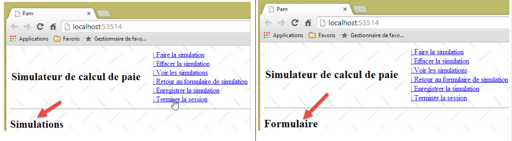 |
9.9.8. وظيفة JS [clearSimulation]
يتم تعريف الرابط [Clear Simulation] على النحو التالي في [_Layout.cshtml]:
<a id="lnkEffacerSimulation" href="javascript:effacerSimulation()">| Effacer la simulation<br />
</a>
الغرض من وظيفة JS [clearSimulation] هو:
- إخفاء جزء [Simulation] إن وجد؛
- إعادة تعيين حقول إدخال النموذج إلى حالتها عند التحميل الأولي للتطبيق (عندما تكون هناك حقول إدخال — في الوقت الحالي، لا توجد أي حقول).
المهمة: اكتب دالة JS [clearSimulation]. لا يوجد استدعاء Ajax هنا. تحدث هذه العملية داخل المتصفح ولا تتضمن الخادم.
فيما يلي مثال على التنفيذ:
 |
9.9.9. إدارة التنقل بين الشاشات
في الوقت الحالي، يتم عرض الروابط دائمًا. سنقوم الآن بإدارة عرضها باستخدام دالة JavaScript. أولاً، دعونا نراجع الكود الخاص بالروابط الستة لـ JavaScript في [_Layout.cshtml]:
<a id="lnkFaireSimulation" href="javascript:faireSimulation()">| Faire la simulation<br />
</a>
<a id="lnkEffacerSimulation" href="javascript:effacerSimulation()">| Effacer la simulation<br />
</a>
<a id="lnkVoirSimulations" href="javascript:voirSimulations()">| Voir les simulations<br />
</a>
<a id="lnkRetourFormulaire" href="javascript:retourFormulaire()">| Retour au formulaire de simulation<br />
</a>
<a id="lnkEnregistrerSimulation" href="javascript:enregistrerSimulation()">| Enregistrer la simulation<br />
</a>
<a id="lnkTerminerSession" href="javascript:terminerSession()">| Terminer la session<br />
</a>
تحتوي جميع الروابط على سمة [id] تسمح لنا بإدارتها في JavaScript. نقوم بتعديل طريقة JavaScript التي يتم تنفيذها عند تحميل الصفحة على النحو التالي:
// variables globales
var loading;
var content;
var lnkFaireSimulation;
var lnkEffacerSimulation
var lnkEnregistrerSimulation;
var lnkTerminerSession;
var lnkVoirSimulations;
var lnkRetourFormulaire;
var options;
...
// au chargement du document
$(document).ready(function () {
// on récupère les références des différents composants de la page
loading = $("#loading");
content = $("#content");
// les liens du menu
lnkFaireSimulation = $("#lnkFaireSimulation");
lnkEffacerSimulation = $("#lnkEffacerSimulation");
lnkEnregistrerSimulation = $("#lnkEnregistrerSimulation");
lnkVoirSimulations = $("#lnkVoirSimulations");
lnkTerminerSession = $("#lnkTerminerSession");
lnkRetourFormulaire = $("#lnkRetourFormulaire");
// on les met dans un tableau
options = [lnkFaireSimulation, lnkEffacerSimulation, lnkEnregistrerSimulation, lnkVoirSimulations, lnkTerminerSession, lnkRetourFormulaire];
// on cache certains éléments de la page
loading.hide();
// on fixe le menu
setMenu([lnkFaireSimulation, lnkVoirSimulations, lnkTerminerSession]);
});
- الأسطر 19–24: استرداد المراجع للروابط الستة. يتم تعريف هذه المراجع كمتغيرات عامة في الأسطر 4–9؛
- السطر 26: يتم تهيئة المصفوفة [options] بالمراجع الستة. يتم تعريف هذه المصفوفة كمتغير عام في السطر 10؛
- السطر 28: إخفاء الصورة المتحركة التي تشير إلى وجود طلبات Ajax معلقة؛
- السطر 30: يتم عرض الروابط [lnkFaireSimulation، lnkVoirSimulations، lnkTerminerSession]. وسيتم إخفاء الروابط الأخرى.
وظيفة JS [setMenu] هي كما يلي:
function setMenu(show) {
// display table links [show]
...
}
المهمة: اكتب دالة JS [setMenu].
إذا كان T مصفوفة من الروابط:
- T.length هو عدد الروابط؛
- T[i] هو الرابط رقم i؛
- T[i].show() تعرض الرابط رقم i؛
- T[i].hide() يخفي الرابط رقم i.
باستخدام وظائف JS الجديدة هذه، تكون الصفحة المعروضة عند بدء التشغيل كما يلي:

قم بتكييف وظائف JS [runSimulation، clearSimulation، saveSimulation، viewSimulations، returnToForm، endSession] لعرض الشاشات التالية:
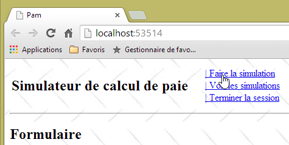


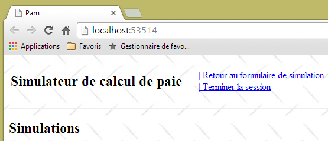


الآن بعد أن أصبح نموذج APU وروابط التنقل جاهزة، يمكننا الانتقال إلى كتابة الإجراءات والعروض من جانب الخادم. أثناء تقدمك في الخطوات، ستجد أن بعض روابط Ajax التي تعمل حاليًا ستتوقف عن العمل، لأنك ستقوم بتعديل العروض الجزئية المرسلة إلى العميل. ومع قيامك بإنشاء الإجراءات والعروض المختلفة من جانب الخادم، ستستأنف روابط Ajax من جانب العميل العمل كما هو مخطط لها.
9.10. الخطوة 4: كتابة إجراء الخادم [Index]
حاليًا، عند بدء تشغيل التطبيق، نرى الشاشة التالية:
بدلاً من هذه الشاشة، نود أن نرى ما يلي:

إن إجراء [Index] هو الذي يجب أن يقوم بإنشاء هذه الصفحة. دعونا نلاحظ بعض النقاط:
- تعرض الصفحة نموذجًا يحتوي على ثلاثة حقول إدخال:
- الموظف الذي يتم حساب راتبه،
- عدد ساعات العمل،
- عدد أيام العمل؛
- يتم إرسال النموذج عبر الرابط [تشغيل المحاكاة]؛
- يجب التحقق من صحة حقول الإدخال [ساعات العمل] و[أيام العمل]؛
- قائمة الموظفين مأخوذة من طبقة [الأعمال] التي أنشأناها سابقًا.
دعونا نراجع الكود الحالي لإجراء [Index]:
[HttpGet]
public ViewResult Index()
{
return View();
}
الذي يظهره هذا الإجراء من عرض [Index.cshtml]:
@{
ViewBag.Title = "Pam";
}
@Html.Partial("Formulaire")
والعرض الجزئي [Formulaire.cshtml]:
<h2>Formulaire</h2>
سيتم إجراء التغييرات في هذه المواقع الثلاثة.
9.10.1. قالب النموذج
لنعد إلى مسار معالجة عنوان URL [/Pam/Index]:
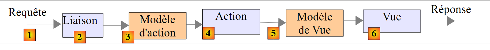 |
- يصل طلب HTTP الخاص بالعميل إلى [1]؛
- في [2]، يتم تحويل المعلومات الواردة في الطلب إلى نموذج إجراء [3] الذي يعمل كمدخل للإجراء [4]؛
- في [4]، سيقوم الإجراء، بناءً على هذا النموذج، بإنشاء استجابة. ستتألف هذه الاستجابة من مكونين: عرض V [6] ونموذج M لهذا العرض [5]؛
- ستستخدم طريقة العرض V [6] نموذجها M [5] لتوليد استجابة HTTP للعميل.
الإجراء الذي يهمنا هو إجراء [Index]، والذي يبدو حاليًا كما يلي:
[HttpGet]
public ViewResult Index()
{
return View();
}
لا تمرر الإجراء [Index] أي نموذج إلى طريقة العرض [Index.cshtml]. وبالتالي، لن تتمكن من عرض قائمة الموظفين. يمكن طلب هذه القائمة من طبقة [business]. للقيام بذلك، يجب أن يحتوي مشروع [pam-web-01] على مرجع إلى مشروع [pam-metier-simule]. سنقوم بإنشاء هذا المرجع الآن:
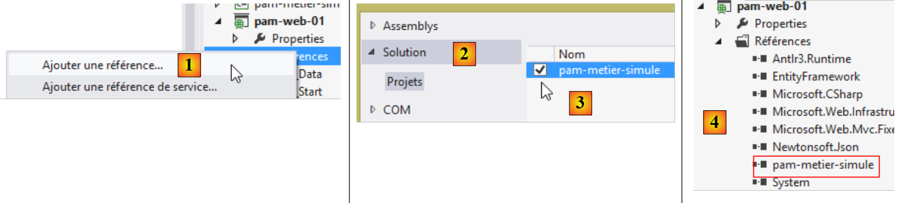 |
- في [1]، انقر بزر الماوس الأيمن فوق [References] في مشروع [pam-web-01]، ثم حدد [Add Reference]؛
- في [2]، حدد خيار [Solution]، ثم مشروع [pam-metier-simule] في [3]؛
- في [4]، تمت إضافة مشروع [pam-metier-simule] إلى مراجع مشروع [pam-web-01].
9.10.2. نموذج التطبيق
لقد قدمنا المفاهيم المهمة لنموذج التطبيق ونموذج الجلسة في القسم 4.10، في الصفحة 70. سنستخدمها الآن. تذكر أننا نضع في النموذج:
- نموذج تطبيق يحتوي على بيانات للقراءة فقط لجميع المستخدمين. يشكل هذا النموذج ذاكرة مشتركة لجميع الطلبات الواردة من جميع المستخدمين؛
- بيانات الجلسة التي يمكن قراءتها وكتابتها لمستخدم معين. يشكل هذا النموذج ذاكرة مشتركة لجميع الطلبات الواردة من ذلك المستخدم.
ما الذي سنضمّنه في نموذج التطبيق؟ دعونا نعيد النظر في بنيته:
 |
تحتوي طبقة [الويب] على مرجع إلى طبقة [الأعمال]. ويمكن مشاركة هذا المرجع بين جميع المستخدمين. وبالتالي، يمكننا وضعه في نموذج التطبيق. علاوة على ذلك، سنفترض أن قائمة الموظفين لا تتغير. وبالتالي، يمكن قراءتها مرة واحدة ثم مشاركتها بين جميع المستخدمين. ولذلك، نقترح نموذج التطبيق التالي:
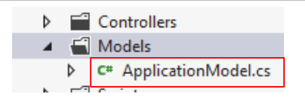 |
يمكن أن يكون كود فئة [ApplicationModel] كما يلي:
using Pam.Metier.Entites;
using Pam.Metier.Service;
namespace PamWeb.Models
{
public class ApplicationModel
{
// --- application scope data ---
public Employe[] Employes { get; set; }
public IPamMetier PamMetier { get; set; }
}
}
لعرض قائمة منسدلة في طريقة عرض، تكتب شيئًا مثل ما يلي:
<!-- the drop-down list -->
<tr>
<td>Liste déroulante</td>
<td>@Html.DropDownListFor(m => m.DropDownListField,
new SelectList(@Model.DropDownListFieldItems, "Value", "Label"))
</td>
</tr>
تتوقع طريقة [DropDownListFor] نوع SelectListItem[] كمعلمة ثانية، والتي تم توفيرها أعلاه بواسطة نوع [SelectList]. نحتاج إلى إنشاء مثل هذا المصفوفة باستخدام قائمة الموظفين. نظرًا لأن الموظفين لا يتغيرون، يمكن أيضًا وضع هذا المصفوفة في نموذج التطبيق. نقوم بتحديثه على النحو التالي:
using Pam.Metier.Entites;
using Pam.Metier.Service;
using System.Web.Mvc;
namespace Pam.Web.Models
{
public class ApplicationModel
{
// --- application scope data ---
public Employe[] Employes { get; set; }
public IPamMetier PamMetier { get; set; }
public SelectListItem[] EmployesItems { get; set; }
}
}
متى يجب إنشاء هذا النموذج؟ لقد أوضحنا ذلك في القسم 4.10. يحدث ذلك عند تنفيذ الأسلوب [Application_Start] في ملف [Global.asax]:
 |
طريقة [Application_Start] هي حاليًا كما يلي:
using System.Web.Http;
using System.Web.Mvc;
using System.Web.Optimization;
using System.Web.Routing;
namespace pam_web_01
{
public class MvcApplication : System.Web.HttpApplication
{
protected void Application_Start()
{
AreaRegistration.RegisterAllAreas();
WebApiConfig.Register(GlobalConfiguration.Configuration);
FilterConfig.RegisterGlobalFilters(GlobalFilters.Filters);
RouteConfig.RegisterRoutes(RouteTable.Routes);
BundleConfig.RegisterBundles(BundleTable.Bundles);
}
}
}
نقوم بتوسيعها على النحو التالي:
using Pam.Metier.Entites;
using Pam.Metier.Service;
using PamWeb.Infrastructure;
using PamWeb.Models;
using System.Web.Http;
using System.Web.Mvc;
using System.Web.Optimization;
using System.Web.Routing;
namespace pam_web_01
{
public class MvcApplication : System.Web.HttpApplication
{
protected void Application_Start()
{
// ----------Auto-generated
AreaRegistration.RegisterAllAreas();
WebApiConfig.Register(GlobalConfiguration.Configuration);
FilterConfig.RegisterGlobalFilters(GlobalFilters.Filters);
RouteConfig.RegisterRoutes(RouteTable.Routes);
BundleConfig.RegisterBundles(BundleTable.Bundles);
// -------------------------------------------------------------------
// ---------- specific configuration
// -------------------------------------------------------------------
// application scope data
ApplicationModel application = new ApplicationModel();
Application["data"] = application;
// instantiation layer [business]
application.PamMetier = ...
// employee roster
application.Employes = ...
// employee combo items
application.EmployesItems = ...
// model binder for [ApplicationModel]
...
}
}
}
المهمة: أكمل الكود الخاص بالطريقة [Application_Start]. كل ما تحتاجه موجود في القسم 4.10. خذ الوقت الكافي لإعادة قراءة هذا القسم الطويل والمهم.
يتكون السطر 33 في الواقع من عدة أسطر. لإنشاء كائن من النوع [SelectListItem]، يمكنك استخدام الطريقة التالية:
new SelectListItem() { Text = unTexte, Value = uneValeur };
سيتم استخدام [SelectListItem] هذا لإنشاء علامة HTML التالية: <option>
في القائمة المنسدلة. سنحرص على أن:
- أن النص هو الاسم الأول للموظف متبوعًا باسم عائلته؛
- aValue هو رقم الضمان الاجتماعي للموظف.
السطر 35 أعلاه، ستحتاج إلى فئة [ApplicationModelBinder] الموضحة في القسم 4.10، الصفحة 74:
 |
9.10.3. كود الإجراء [Index]
الآن بعد أن قمنا بتعريف نموذج للتطبيق، يمكننا تحديث كود الإجراء [Index] على النحو التالي:
[HttpGet]
public ViewResult Index(ApplicationModel application)
{
return View();
}
- السطر 4: أصبح نموذج التطبيق الآن معلمة للإجراء [Index]. وقد أوضحنا في القسم 4.10 كيفية تهيئة هذه المعلمة بواسطة إطار العمل.
9.10.4. قالب العرض [Index.cshtml]
الآن، يمكن لعملية [Index] الوصول إلى الموظفين المخزنين في نموذج التطبيق. ويجب عليها الآن تمريرهم إلى عرض [Index.cshtml]، الذي سيقوم بعرضهم. يمكننا تمرير نوع [ApplicationModel] كنموذج عرض إلى عرض [Index.cshtml]، لكننا سنرى سريعًا أن هذا العرض يحتاج إلى معلومات إضافية غير موجودة في [ApplicationModel]. سنستخدم نموذج العرض [IndexModel] التالي:
 |
namespace Pam.Web.Models
{
public class IndexModel
{
// application scope data
public ApplicationModel Application { get; set; }
}
}
- السطر 6: [IndexModel] يحتوي على نموذج التطبيق.
يصبح الإجراء [Index] كما يلي:
[HttpGet]
public ViewResult Index(ApplicationModel application)
{
return View(new IndexModel() { Application = application });
}
- السطر 4، يتم عرض العرض الافتراضي [Index.cshtml] باستخدام نوع [IndexModel] كنموذج، يتم تهيئته ببيانات من نموذج التطبيق.
نحن نعلم أن العرض [Index.cshtml] يجب أن يعرض نموذجًا:
لنعد إلى تدفق معالجة الطلبات:
 |
بالنسبة لطلب [GET /Pam/Index]:
- الإجراء هو [Index]؛
- نموذج هذا الإجراء هو [ApplicationModel]؛
- العرض هو [Index.cshtml]؛
- نموذج هذا العرض هو [IndexModel].
عند إرسال النموذج، سيكون مسار المعالجة مشابهًا:
- الإجراء هو الذي يتعامل مع POST؛
- يقوم نموذجه بجمع القيم المدخلة، وفي هذه الحالة:
- رقم الضمان الاجتماعي للموظف المحدد؛
- عدد ساعات العمل؛
- عدد أيام العمل؛
يمكننا إنشاء نموذج إجراء يجمع بين هذه القيم الثلاث. ومن الشائع أيضًا إعادة استخدام النموذج المستخدم لعرض النموذج. وهذا ما سنفعله هنا. تتطور فئة [IndexModel] على النحو التالي:
using System.ComponentModel.DataAnnotations;
using System.Web.Mvc;
namespace Pam.Web.Models
{
[Bind(Exclude = "Application")]
public class IndexModel
{
// application scope data
public ApplicationModel Application { get; set; }
// posted values
[Display(Name = "Employé")]
public string SS { get; set; }
[Display(Name = "Heures travaillées")]
[UIHint("Decimal")]
public double HeuresTravaillées { get; set; }
[Display(Name = "Jours travaillés")]
public double JoursTravaillés { get; set; }
}
}
- السطور 13 و 16 و 18: القيم الثلاث المنشورة. لاحظ أن [daysWorked] قد تم إعلانه كنوع [double] على الرغم من أنه من المتوقع في الواقع أن يكون عددًا صحيحًا. تم إدخال النوع [double] لتسهيل التحقق من صحة هذا الحقل من جانب العميل، حيث تسبب التحقق من صحة النوع [int] في حدوث مشكلات؛
- السطور 12 و 14 و 17: تسميات لأساليب [Html.LabelFor] الخاصة بالعرض المرتبط بالنموذج؛
- السطر 15: تعليق توضيحي لعرض حقل [HoursWorked] برقمين عشريين؛
- السطر 5: يحدد أن الخاصية المسماة [Application] غير مضمنة في القيم المنشورة.
9.10.5. طرق العرض [Index.cshtml] و [Formulaire.cshtml]
يتم عرض طريقة العرض [Index.cshtml] بواسطة الإجراء [Index] التالي:
[HttpGet]
public ViewResult Index(ApplicationModel application)
{
return View(new IndexModel() { Application = application });
}
ومن المثير للاهتمام أن طريقة العرض [Index.cshtml] لم تتغير:
@{
ViewBag.Title = "Pam";
}
@Html.Partial("Formulaire")
- لا تعلن طريقة العرض عن أي نموذج؛
- السطر 4: يتضمن العرض الجزئي [Form.cshtml]، مرة أخرى دون تمرير نموذج إليه. أثناء الاختبار، لوحظ أن نموذج [IndexModel] الذي تم تمريره إلى عرض [Index.cshtml] تم نشره ضمناً إلى العرض الجزئي [Form.cshtml]. يمكن أن يتخذ العرض الأخير الآن الشكل التالي:
@model Pam.Web.Models.IndexModel
@using (Html.BeginForm("FaireSimulation", "Pam", FormMethod.Post, new { id = "formulaire" }))
{
<table>
<thead>
<tr>
...
</tr>
</thead>
<tbody>
<tr>
...
</tr>
<tr>
...
</tr>
</tbody>
</table>
}
<div id="simulation" />
- السطر 1: تستقبل طريقة العرض نموذجًا من النوع [IndexModel]؛
- السطر 3: النموذج؛
- الأسطر 6–10: رؤوس جدول الإدخال؛
- الأسطر 12–14: صف الإدخال؛
- الأسطر 15-17: أي رسائل خطأ.
المهمة: أكمل الكود الخاص بعرض [Formulaire.cshtml]. استخدم الطرق [DropDownListFor، EditorFor، LabelFor، ValidationMessageFor] الموضحة في القسم 5.7.
9.10.6. اختبار الإجراء [Index]
لقد كتبنا جميع عناصر سلسلة معالجة عنوان URL [/Pam/Index]:
 |
نقوم باختبار التطبيق باستخدام [Ctrl-F5]:


يجب عليك التحقق من أن القائمة المنسدلة قد تم ملؤها بقائمة الموظفين التي حددناها في طبقة [الأعمال] المحاكاة.
9.11. الخطوة 5: تنفيذ التحقق من صحة الإدخال
9.11.1. المشكلة
على الرغم من أننا لم نقم بأي شيء لتفعيلها، فإن التحقق من صحة البيانات من جانب العميل ساري المفعول بالفعل:


يتم تمكين التحقق من صحة البيانات من جانب العميل بشكل افتراضي بسبب السطر 3 أدناه في ملف [Web.config] الخاص بالتطبيق.
<appSettings>
...
<add key="ClientValidationEnabled" value="true" />
</appSettings>
ومع ذلك، نظرًا لأننا في [IndexModel] أعلنا الحقل [JoursTravaillés] على أنه من النوع [double]:
public double JoursTravaillés { get; set; }
يمكننا إدخال عدد حقيقي في هذا الحقل:

علاوة على ذلك، يمكننا إدخال قيم عشوائية في كلا الحقلين:

يبدو [IndexModel] للنموذج حاليًا كما يلي:
using System.ComponentModel.DataAnnotations;
using System.Web.Mvc;
namespace Pam.Web.Models
{
[Bind(Exclude = "Application")]
public class IndexModel
{
// application scope data
public ApplicationModel Application { get; set; }
// posted values
[Display(Name = "Employé")]
public string SS { get; set; }
[Display(Name = "Heures travaillées")]
[UIHint("Decimal")]
public double HeuresTravaillées { get; set; }
[Display(Name = "Jours travaillés")]
public double JoursTravaillés { get; set; }
}
}
المهمة: قم بتحسين هذا النموذج بحيث:
- عرض رسائل خطأ مخصصة؛
- لا تقبل سوى القيم العددية الحقيقية في النطاق [0,400] لحقل [HoursWorked]؛
- قبول القيم الصحيحة فقط في النطاق [0,31] لحقل [DaysWorked]؛
يمكنك الرجوع إلى المثال الوارد في القسم 7.6.2. للتحقق من أن عدد أيام العمل عدد صحيح، يمكنك استخدام تعبير عادي (انظر الأمثلة في القسم 5.9.1).
فيما يلي بعض الأمثلة على ما هو متوقع:


9.11.2. إدخال أرقام حقيقية بالتنسيق الفرنسي
في الإصدار الحالي من التطبيق، يجب أن يكون عدد ساعات العمل رقمًا عشريًا بالتنسيق الأنجلوساكسوني (مع نقطة عشرية). لا يُقبل التنسيق الفرنسي الذي يستخدم الفاصلة:

تم تحديد هذه المشكلة ومعالجتها في القسم 6.1.
المهمة: باتباع الإجراء الوارد في القسم المذكور أعلاه، قم بإجراء التغييرات اللازمة بحيث يمكن إدخال الأرقام الحقيقية باستخدام التنسيق العشري الفرنسي. اختبر تطبيقك.
الآن، أصبحت الشاشة السابقة كما يلي:
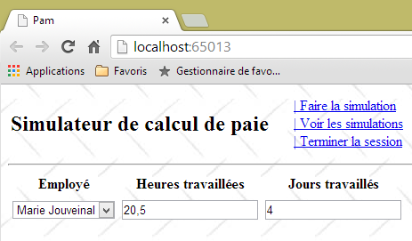
9.11.3. التحقق من صحة النموذج عبر رابط JavaScript [تشغيل المحاكاة]
حاليًا، يمكن إرسال قيم غير صالحة، كما هو موضح في التسلسل التالي:

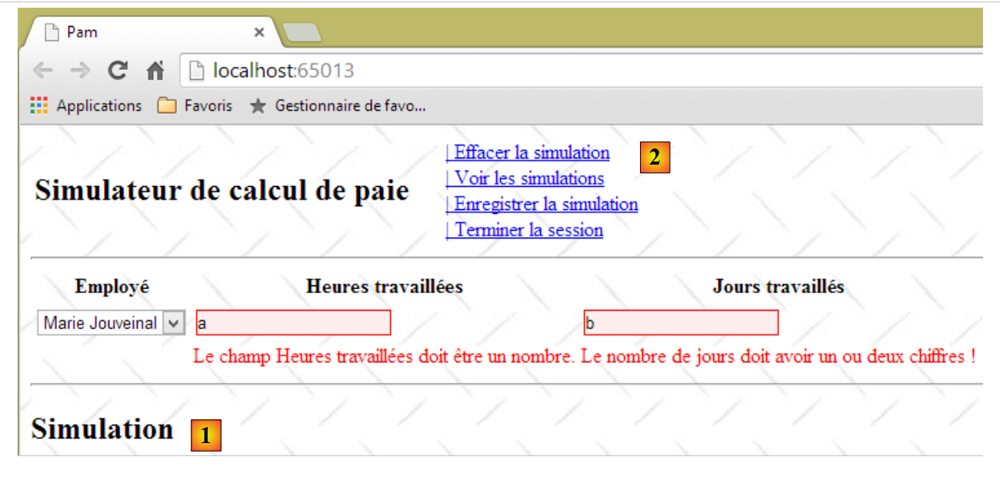 |
يُظهر وجود المحاكاة في [1] وتغيير القائمة في [2] أن النقر على رابط [تشغيل المحاكاة] أدى إلى إرسال النموذج على الرغم من أن القيم المدخلة كانت غير صالحة. تم تحديد هذه المشكلة ومعالجتها في القسم 7.6.5.
المهمة: باتباع الإجراء الموضح في القسم المذكور أعلاه، تأكد من عدم إمكانية تنفيذ إجراء POST لرابط [تشغيل المحاكاة] إذا كانت القيم المدخلة غير صالحة. تذكر مسح ذاكرة التخزين المؤقت للمتصفح قبل اختبار التغييرات.
لاحظ أن العرض الجزئي [Formulaire.cshtml] يُنشئ نموذج HTML بمعرف [formulaire] (السطر 1 أدناه):
@using (Html.BeginForm("FaireSimulation", "Pam", FormMethod.Post, new { id = "formulaire" }))
{
...
}
يمكن التحقق من ذلك من خلال عرض شفرة مصدر النموذج في المتصفح:
<div id="content">
<form action="/Pam/FaireSimulation" id="formulaire" method="post">
...
</form>
<div id="simulation" />
</div>
9.12. الخطوة 6: تشغيل محاكاة
9.12.1. المشكلة
عند تشغيل المحاكاة، نريد الحصول على النتيجة التالية:
 |
تعرض طريقة العرض الجزئية [Simulation.cshtml] الآن كشف راتب الموظف.
9.12.2. كتابة عرض [Simulation.cshtml]
يتغير العرض [Simulation.cshtml] على النحو التالي:
@model Pam.Metier.Entites.FeuilleSalaire
<hr />
<p><span class="info">Informations Employé</span></p>
<table>
<tbody>
<tr>
<td><span class="libellé">Nom</span>
</td>
<td><span class="libellé">Prénom</span>
</td>
<td><span class="libellé">Adresse</span>
</td>
</tr>
<tr>
<td>
<span class="valeur">@Model.Employe.Nom</span>
</td>
...
</tr>
<tr>
<td><span class="libellé">Ville</span>
</td>
<td><span class="libellé">Code Postal</span>
</td>
<td><span class="libellé">Indice</span>
</td>
</tr>
<tr>
...
</tr>
</tbody>
</table>
<br />
<p><span class="info">Informations Cotisations</span></p>
<table>
...
</tbody>
</table>
<br />
<p><span class="info">Informations Indemnités</span></p>
<table>
...
</table>
<br />
<p><span class="info">Informations Salaire</span></p>
<table>
...
</table>
<br />
<table>
...
</table>
- السطر 1: تعتمد طريقة العرض [Simulation.cshtml] على النوع [PayrollSheet] المحدد في القسم 9.7.3؛
- يستخدم العرض فئات [label, info, value] المحددة في ورقة أنماط التطبيق [Content / Site.css]:
.libellé {
background-color: azure;
margin: 5px;
padding: 5px;
}
.info {
background-color: antiquewhite;
margin: 5px;
padding: 5px;
}
.valeur {
background-color: beige;
padding: 5px;
margin: 5px;
}
بالإضافة إلى ذلك، وفي ملف [Site.css] أيضًا، قمنا بتعيين ارتفاع الصفوف لمختلف جداول HTML في المنطقة التي تحمل المعرف [simulation]، وتحديدًا حيث يتم عرض كشف الراتب:
#simulation table tr {
height: 30px;
}
المهمة: أكمل عرض [Simulation.cshtml].
لعرض مبلغ مالي باليورو، سنستخدم طريقة [string.Format]:
يعرض البيان أعلاه [somme] كقيمة نقدية [C] (العملة) مع رقمين عشريين [C2].
لاختبار هذا العرض، يجب تزويده ببيان راتب. ويجب توفير ذلك بواسطة الإجراء [/Pam/FaireSimulation]، وهو هدف استدعاء Ajax من الرابط [Run Simulation]. حاليًا، يكون هذا الإجراء كما يلي:
[HttpGet]
public ViewResult Index(ApplicationModel application)
{
return View(new IndexModel() { Application = application });
}
// make a simulation
[HttpPost]
public PartialViewResult FaireSimulation()
{
return PartialView("Simulation");
}
في الكود أعلاه، لا تمرر الإجراء [FaireSimulation] أي نموذج إلى العرض [Simulation.cshtml]. يجب أن تمرر إليه كشف راتب. نعلم أن طبقة [business] تحسب كشوف الرواتب. يمكن الوصول إلى طبقة [business] هذه عبر نموذج التطبيق [ApplicationModel] الذي حددناه في القسم 9.10.2:
public class ApplicationModel
{
// --- application scope data ---
public Employe[] Employes { get; set; }
public IPamMetier PamMetier { get; set; }
public SelectListItem[] EmployesItems { get; set; }
}
يمكن الوصول إلى طبقة [business] عبر الخاصية الموجودة في السطر 5 أعلاه. لمنح الإجراء [RunSimulation] حق الوصول إلى طبقة [business]، سنمرر إليه نموذج التطبيق كما فعلنا مع الإجراء [Index]. ثم يتطور الكود على النحو التالي:
// make a simulation
[HttpPost]
public PartialViewResult FaireSimulation(ApplicationModel application)
{
return PartialView("Simulation");
}
الآن، ضمن الإجراء، يمكننا حساب كشف راتب وهمي. يتطور الكود على النحو التالي:
// make a simulation
[HttpPost]
public PartialViewResult FaireSimulation(ApplicationModel application)
{
FeuilleSalaire feuilleSalaire = application.PamMetier.GetSalaire("254104940426058", 150, 20);
return PartialView("Simulation", feuilleSalaire);
}
- في السطر 5، يتم حساب راتب وهمي. المعلمة الأولى هي رقم ضمان اجتماعي موجود. تم تعريفه في فئة [business] التي تمت محاكاتها في القسم 9.7.5. المعلمة الثانية هي عدد ساعات العمل، والثالثة هي عدد أيام العمل؛
- السطر 6: يتم تمرير كشف الراتب هذا كقالب إلى عرض [Simulation.cshtml].
نحن الآن جاهزون لاختبار عرض [Simulation.cshtml]:

لا ندخل أي بيانات ونطلب المحاكاة. ثم نحصل على النتيجة التالية:

9.12.3. حساب الراتب الفعلي
تقوم إجراء [RunSimulation] الحالي لدينا دائمًا بحساب نفس كشف الراتب:
// make a simulation
[HttpPost]
public PartialViewResult FaireSimulation(ApplicationModel application)
{
FeuilleSalaire feuilleSalaire = application.PamMetier.GetSalaire("254104940426058", 150, 20);
return PartialView("Simulation", feuilleSalaire);
}
لا يأخذ في الاعتبار المعلومات التي تم إدخالها:
- الموظف الذي يتم حساب راتبه؛
- عدد ساعات العمل؛
- عدد أيام العمل.
يتم تمرير القيم المدخلة إلى الإجراء [RunSimulation] على النحو التالي:
- ينقر المستخدم على رابط [Run Simulation]. يؤدي هذا إلى تشغيل دالة JS [runSimulation] التي كتبناها مسبقًا؛
- ثم تقوم دالة JS [faireSimulation] بإجراء استدعاء Ajax إلى إجراء الخادم [/Pam/FaireSimulation] الذي نعمل عليه حاليًا. في الوقت الحالي، لا ترسل دالة JS [faireSimulation] أي معلومات إلى إجراء الخادم. سيتعين عليها إرسال القيم التي أدخلها المستخدم إليه؛
- ستقوم إجراء الخادم [/Pam/FaireSimulation] باسترداد القيم التي تم إدخالها من البيانات التي تم إرسالها بواسطة دالة JS [faireSimulation].
لنبدأ بالنقطة 2: يجب أن تنشر دالة JS [faireSimulation] القيم التي أدخلها المستخدم إلى إجراء الخادم [/Pam/FaireSimulation].
المهمة: أكمل وظيفة JS [faireSimulation] بحيث تنشر القيم التي أدخلها المستخدم. يمكنك الرجوع إلى المثال في القسم 7.6.5، حيث تمت معالجة هذه المشكلة.
الآن دعونا نتناول النقطة 3 أعلاه. يجب أن تسترد إجراء الخادم [/Pam/FaireSimulation] القيم التي أرسلتها دالة JS [faireSimulation].
المهمة: أكمل طريقة الخادم [FaireSimulation] بحيث تحسب الراتب باستخدام القيم التي نشرتها دالة JS [faireSimulation]. يمكنك الرجوع مرة أخرى إلى المثال في القسم 7.6.5، حيث تمت معالجة هذه المشكلة. في الوقت الحالي، سنفترض أن النموذج المستمد من القيم المنشورة صالح دائمًا.
تلميح: تتطور إجراء الخادم [FaireSimulation] على النحو التالي:
// make a simulation
[HttpPost]
public PartialViewResult FaireSimulation(ApplicationModel application, FormCollection data)
{
// action model creation
...
// we try to retrieve the values posted in this model
...
// salary calculation
FeuilleSalaire feuilleSalaire = ...
// the salary sheet is displayed
return PartialView("Simulation", feuilleSalaire);
}
فيما يلي مثال على التنفيذ:
 |
نختار [Justine Laverti]. ثم نحصل على النتيجة التالية:
 |
لقد حصلنا بالفعل على كشف الراتب الوهمي لـ [Justine Laverti]. في السابق، كان كشف الراتب الوحيد الذي تم حسابه هو كشف راتب [Marie Jouveinal]. لذلك تم استخدام القيمة التي تم إدخالها لاختيار الموظف. أما بالنسبة لعدد الساعات وعدد الأيام، فلا يمكننا تحديد أي شيء لأن طبقة [الأعمال] المحاكاة لدينا لا تأخذها في الاعتبار.
9.12.4. معالجة الأخطاء
لنلقِ نظرة على المثال التالي:
 |
- في [1]، نختار موظفًا غير موجود (انظر تعريف الطبقة [التجارية] المحاكاة في القسم 9.7.5؛
- في [2]، نقوم بتشغيل المحاكاة؛
- في [3] أدناه، يتم عرض صفحة خطأ.
 |
ماذا حدث؟
تم تنفيذ دالة JS [doSimulation]. يبدو كودها كما يلي:
function faireSimulation() {
...
// make a manual Ajax call
$.ajax({
url: '/Pam/FaireSimulation',
...
beforeSend: function () {
// wait signal on
loading.show();
},
success: function (data) {
...
},
error: function (jqXHR) {
// error display
simulation.html(jqXHR.responseText);
simulation.show();
},
complete: function () {
// wait signal off
loading.hide();
}
});
// menu
setMenu([lnkEffacerSimulation, lnkEnregistrerSimulation, lnkTerminerSession, lnkVoirSimulations]);
}
فشل استدعاء Ajax، وتم تنفيذ الدالة في الأسطر 14–18. تم عرض صفحة الخطأ [jqXHR.responseText] التي أرجعها الخادم. هذا أمر محدد تمامًا. أطلقت طبقة [business] المحاكاة استثناءً لأن رقم الضمان الاجتماعي (SSN) المقدم إليها لا ينتمي إلى موظف موجود (انظر كود طبقة [business] المحاكاة في القسم 9.7.5). نحتاج إلى معالجة هذه الحالة بشكل صحيح.
سننشئ عرضًا جزئيًا [Errors.chtml] سيتم إرجاعه إلى عميل JavaScript كلما تم اكتشاف خطأ على جانب الخادم:
 |
فيما يلي كود العرض الجزئي [Errors.chtml]:
@model IEnumerable<string>
<hr />
<h2>Les erreurs suivantes se sont produites</h2>
<ul>
@foreach (string msg in Model)
{
<li>@msg</li>
}
</ul>
- السطر 1: تتلقى طريقة العرض قائمة برسائل الخطأ كنموذج؛
- الأسطر 5–10: والتي يتم عرضها في قائمة HTML؛
الآن، دعونا نعدل كود إجراء الخادم [FaireSimulation] على النحو التالي:
// make a simulation
[HttpPost]
public PartialViewResult FaireSimulation(ApplicationModel application, FormCollection data)
{
...
// salary calculation
FeuilleSalaire feuilleSalaire = null;
Exception exception=null;
try
{
// salary calculation
feuilleSalaire = ...
}
catch (Exception ex)
{
exception = ex;
}
// mistake?
if (exception == null)
{
// the salary sheet is displayed
return PartialView("Simulation", feuilleSalaire);
}
else
{
// the error page is displayed
return PartialView("Erreurs", Static.GetErreursForException(exception));
}
}
- الأسطر 9–17: يتم الآن حساب الراتب داخل كتلة try/catch؛
- السطر 27: في حالة حدوث خطأ، يتم عرض العرض الجزئي [Errors.cshtml]، باستخدام قائمة رسائل الخطأ التي توفرها الطريقة الثابتة [Static.GetErrorsForException(exception)] كقالب.
نقوم بتجميع دالتين مساعدتين ثابتتين [1] في فئة [Static]:
 |
using System;
using System.Collections.Generic;
using System.Web.Mvc;
namespace PamWeb.Infrastructure
{
public class Static
{
// list of exception error messages
public static List<string> GetErreursForException(Exception ex)
{
List<string> erreurs = new List<string>();
while (ex != null)
{
erreurs.Add(ex.Message);
ex = ex.InnerException;
}
return erreurs;
}
// list of error messages linked to an invalid model
public static List<string> GetErreursForModel(ModelStateDictionary état)
{
List<string> erreurs = new List<string>();
if (!état.IsValid)
{
foreach (ModelState modelState in état.Values)
{
foreach (ModelError error in modelState.Errors)
{
erreurs.Add(getErrorMessageFor(error));
}
}
}
return erreurs;
}
// the error message linked to an element of the action model
static private string getErrorMessageFor(ModelError error)
{
if (error.ErrorMessage != null && error.ErrorMessage.Trim() != string.Empty)
{
return error.ErrorMessage;
}
if (error.Exception != null && error.Exception.InnerException == null && error.Exception.Message != string.Empty)
{
return error.Exception.Message;
}
if (error.Exception != null && error.Exception.InnerException != null && error.Exception.InnerException.Message != string.Empty)
{
return error.Exception.InnerException.Message;
}
return string.Empty;
}
}
}
- الأسطر 10–19: تُرجع الدالة الثابتة [GetErrorsForException] قائمة الأخطاء الموجودة في مكدس الاستثناءات؛
- الأسطر 22–36: تُرجع الدالة الثابتة [GetErrorsForModel] قائمة الأخطاء الخاصة بنموذج إجراء غير صالح. وقد سبق أن تناولنا كود هذه الدالة، وكذلك كود الدالة الخاصة [getErrorMessageFor] (الأسطر 39–54).
وبعد الانتهاء من ذلك، يمكننا اختبار حالة الخطأ مرة أخرى:
 |
- في [1]، نختار الموظف غير الموجود؛
- في [2]، نقوم بتشغيل المحاكاة؛
- في [3]، نسترد صفحة الخطأ الجديدة.
لنعد إلى إجراء الخادم [RunSimulation]:
// make a simulation
[HttpPost]
public PartialViewResult FaireSimulation(ApplicationModel application, FormCollection data)
{
// action model creation
IndexModel modèle = new IndexModel() { Application = application};
// we try to retrieve the values posted in the model
TryUpdateModel(modèle, data);
// salary calculation
...
}
في السطر 8، نقوم بتحديث النموذج من السطر 6 بالقيم التي تم إرسالها بواسطة استدعاء Ajax. لا نقوم بالتحقق من صحة النموذج. نحتاج إلى القيام بذلك لأننا لا نستطيع معرفة مصدر القيم المرسلة. فقد يكون شخص ما قد تلاعب بطلب POST وأرسل إلينا بيانات غير صالحة.
المهمة: باتباع النمط الذي طورناه لحالة الاستثناء، قم بتعديل إجراء الخادم [FaireSimulation] ليعرض صفحة خطأ عندما تكون البيانات المرسلة غير صالحة. للقيام بذلك، سنستخدم الطريقة الثابتة [GetErreursForModel] من الفئة [Static].
كيف تختبر هذا التغيير؟ في القسم 9.11.3، تأكدت من أن دالة JS [faireSimulation] لن ترسل القيم المدخلة عبر POST إذا كانت غير صالحة. قم بتعليق الأسطر التي تقوم بذلك، ثم قم بإجراء الاختبار التالي:
 |
- في [1]، قم بتشغيل المحاكاة بقيم غير صالحة؛
- في [2]، نسترد بنجاح صفحة الخطأ التي أنشأناها للتو، مما يثبت أن أدوات التحقق من الصحة من جانب الخادم تعمل بشكل صحيح.
بعد ذلك، تذكر إزالة التعليقات عن الأسطر التي قمت بتعليقها للتو في دالة JS [faireSimulation].
9.13. الخطوة 7: إعداد جلسة المستخدم
يتيح تطبيق [Payroll Calculator] للمستخدم إجراء محاكاة متنوعة للرواتب باستخدام الرابط [Run Simulation]، وحفظها باستخدام الرابط [Save Simulation]، وعرضها باستخدام الرابط [View Simulations]، وحذفها باستخدام الرابط [Delete Simulation]. نعلم أنه بين طلبين متتاليين من المستخدم، لا توجد حالة ما لم نقم بإنشاء واحدة عبر آلية الجلسة (انظر القسم 4.10). من الواضح تمامًا هنا أنه يجب علينا تخزين قائمة المحاكاة التي حفظها المستخدم بمرور الوقت في الجلسة. هناك بيانات أخرى يجب تخزينها: عندما يقوم المستخدم بإجراء محاكاة، لا يتم حفظها في قائمة المحاكاة إلا إذا طلب المستخدم ذلك عبر رابط [Save Simulation]. عندما يفعل ذلك، يجب أن نكون قادرين على استرداد المحاكاة المحسوبة في الطلب السابق. للقيام بذلك، سيتم تخزينها أيضًا في الجلسة. أخيرًا، سنرقم المحاكاة بدءًا من 1. لترقيم محاكاة جديدة بشكل صحيح، يجب أن نكون قد احتفظنا برقم المحاكاة السابقة، مرة أخرى في الجلسة.
في القسم 4.10، قدمنا مفهوم نموذج الجلسة كمعلمة إدخال لإجراء ما حتى يتمكن الإجراء من الوصول إلى الجلسة. سنعيد النظر في هذا المفهوم. ننصحك بإعادة قراءة القسم ذي الصلة إذا كان هذا المفهوم غير واضح لك.
نقوم بإنشاء فئة [SessionModel] التالية:
 |
وفيما يلي شفرة البرمجة الخاصة بها:
using Pam.Web.Models;
using System.Collections.Generic;
namespace Pam.Web.Models
{
public class SessionModel
{
// list of simulations
public List<Simulation> Simulations { get; set; }
// n° of next simulation
public int NumNextSimulation { get; set; }
// the last simulation
public Simulation Simulation { get; set; }
// manufacturer
public SessionModel()
{
// empty simulation list
Simulations = new List<Simulation>();
// next simulation no
NumNextSimulation = 1;
}
}
}
ستقوم فئة [Simulation] في السطرين 9 و 13 بتخزين معلومات حول المحاكاة. ما الذي نحتاج إلى تخزينه؟ يقوم الرابط [Run Simulation] بحساب كشف رواتب من نوع [Payroll]. يبدو من الطبيعي تضمين هذا في المحاكاة. بالإضافة إلى ذلك، نحتاج إلى تخزين المعلومات التي أدت إلى هذا الكشف:
- الموظف المحدد. يمكن العثور على هذه المعلومات في حقل [PayrollSheet.Employee]. لذلك، لا داعي لتخزينها مرة ثانية؛
- عدد ساعات وأيام العمل. هذه المعلومات غير مدرجة في فئة [Payroll]. لذلك نحتاج إلى تخزينها.
أخيرًا، يتم تحديد كل محاكاة برقم. لذلك يمكننا البدء بفئة [Simulation] التالية:
using Pam.Metier.Entites;
namespace Pam.Web.Models
{
public class Simulation
{
// simulation no
public int Num { get; set; }
// number of hours worked
public double HeuresTravaillées { get; set; }
// number of days worked
public int JoursTravaillés { get; set; }
// payslip
public FeuilleSalaire FeuilleSalaire { get; set; }
}
}
يجب أن تقوم إجراء الخادم [RunSimulation]، بالإضافة إلى حساب كشوف المرتبات، بإنشاء محاكاة ووضعها في الجلسة. للقيام بذلك، سيتلقى نموذج الجلسة كمعلمة:
// make a simulation
[HttpPost]
public PartialViewResult FaireSimulation(ApplicationModel application, SessionModel session, FormCollection data)
{
// action model creation
IndexModel modèle = new IndexModel() { Application = application };
// we try to retrieve the values posted in the model
TryUpdateModel(modèle, data);
// valid model?
if (!ModelState.IsValid)
{
// the error page is displayed
return PartialView("Erreurs", Static.GetErreursForModel(ModelState));
}
// salary calculation
FeuilleSalaire feuilleSalaire = null;
Exception exception = null;
try
{
// salary calculation
feuilleSalaire = application.PamMetier.GetSalaire(modèle.SS, modèle.HeuresTravaillées, (int)modèle.JoursTravaillés);
}
catch (Exception ex)
{
exception = ex;
}
// mistake?
if (exception != null)
{
// the error page is displayed
return PartialView("Erreurs", Static.GetErreursForException(exception));
}
// create a simulation and place it in the session
session.Simulation = ...
// the salary sheet is displayed
return PartialView("Simulation", feuilleSalaire);
}
- السطر 3: تستقبل الإجراء نموذج الجلسة كمعلمة؛
المهمة 1: أكمل كود الإجراء، السطر 34
المهمة 2: باتباع الإجراء الوارد في القسم 4.10، قم بما يلزم لضمان تهيئة المعلمة [SessionModel session] الخاصة بالإجراء بشكل صحيح بواسطة إطار العمل. إذا لم يتم القيام بأي شيء، فستكون هذه المعلمة مؤشرًا فارغًا.
9.14. الخطوة 8: حفظ محاكاة
9.14.1. المشكلة
عندما ننتهي من إجراء محاكاة، يمكننا حفظها:
 |
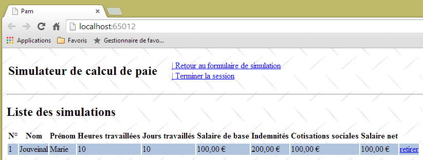
تعرض الصفحة الجزئية [Simulations.cshtml] الآن قائمة بالمحاكاة التي أجراها المستخدم. لاحظ أن كشف الراتب المحسوب هو رقم وهمي.
9.14.2. كتابة إجراء الخادم [SaveSimulation]
يستدعي رابط Ajax [Save Simulation] إجراء الخادم [SaveSimulation]، الذي كان كوده سابقًا كما يلي:
[HttpPost]
public PartialViewResult EnregistrerSimulation()
{
return PartialView("Simulations");
}
ويتطور على النحو التالي:
// save a simulation
[HttpPost]
public PartialViewResult EnregistrerSimulation(SessionModel session)
{
// save the last simulation run in the session's simulation list
...
// increment the number of the next simulation in the session
...
// the list of simulations is displayed
...
}
- السطر 1: تحتاج عملية [SaveSimulation] إلى الوصول إلى الجلسة. ولهذا السبب تأخذ نموذج الجلسة كمعلمة.
المهمة: أكمل إجراء الخادم [SaveSimulation].
9.14.3. كتابة العرض الجزئي [Simulations.cshtml]
يعرض الإجراء السابق [SaveSimulation] العرض الجزئي [Simulations.cshtml] مع قائمة المحاكاة التي أجراها المستخدم كنموذج له. وفيما يلي كوده:
@model IEnumerable<Simulation>
@using Pam.Web.Models
@if (Model.Count() == 0)
{
<h2>Votre liste de simulations est vide</h2>
}
@if (Model.Count() != 0)
{
<h2>Liste des simulations</h2>
...
}
المهمة 1: أكمل الكود الخاص بالعرض الجزئي [Simulations.cshtml]. استخدم جدول HTML لعرض المحاكاة. يمكنك الرجوع إلى الأمثلة الواردة في القسم 5.4.
ملاحظة: سيكون الرابط [remove] لكل محاكاة في جدول HTML رابط JavaScript بالصيغة التالية:
حيث N هو رقم المحاكاة.
المهمة 2: اختبر تطبيقك عن طريق تشغيل عمليات المحاكاة. للقيام بذلك، كرر التسلسل التالي: 1) أعد تحميل صفحة التطبيق بالضغط على [F5]، 2) قم بتشغيل عملية محاكاة، 3) احفظها. ستتراكم عمليات المحاكاة في الجلسة، وهو ما ينبغي أن ينعكس في عرض [Simulations.cshtml].
المهمة 3: قم بتحسين العرض الجزئي [Simulations.cshtml] بحيث تتناوب ألوان الصفوف في جدول HTML.

قم بتعيين فئات CSS [even] و [odd]، المحددة في ورقة الأنماط [/Content/Site.css]، بالتناوب إلى صفوف <tr> في جدول HTML:
.impair {
background-color: beige;
}
.pair {
background-color: lightsteelblue;
}
9.15. الخطوة 9: العودة إلى نموذج الإدخال
9.15.1. المشكلة
بمجرد حصولنا على قائمة عمليات المحاكاة، يمكننا العودة إلى نموذج الإدخال، وهو ما لم نتمكن من القيام به منذ فترة:


9.15.2. كتابة إجراء الخادم [Form]
يستدعي رابط Ajax [العودة إلى نموذج المحاكاة] إجراء الخادم [Form]، الذي كان كوده سابقًا كما يلي:
[HttpPost]
public PartialViewResult Formulaire()
{
return PartialView("Formulaire");
}
تتوقع طريقة العرض الجزئية [Form] التي تعرضها وجود [IndexModel] (السطر 1 أدناه):
@model Pam.Web.Models.IndexModel
@using (Html.BeginForm("FaireSimulation", "Pam", FormMethod.Post, new { id = "formulaire" }))
{
...
}
<div id="simulation" />
لهذا السبب لم يعد رابط [العودة إلى نموذج المحاكاة] يعمل.
المهمة: اكتب النسخة الجديدة من إجراء الخادم [Form] (سطران لإعادة الكتابة)، ثم قم بتشغيل الاختبارات.
9.15.3. تعديل دالة JavaScript [returnToForm]
بفضل التغيير الذي تم إجراؤه سابقًا، يمكننا الآن العودة إلى النموذج، ولكن تظهر مشكلة عندئذٍ:
 |
- في [1]، نعود إلى نموذج الإدخال؛
- في [2]، نقوم بإجراء محاكاة باستخدام إدخالات غير صحيحة. ثم نكتشف أن أدوات التحقق من صحة البيانات من جانب العميل لم تعد تعمل. هنا، تم استدعاء الخادم وأعاد صفحة خطأ بفضل العمل الذي تم إنجازه في القسم 9.12.4.
تم تحديد هذه المشكلة ومعالجتها في القسم 7.6.7.
المهمة: باتباع الإجراء الوارد في القسم 7.6.7، قم بتصحيح دالة JavaScript [returnToForm] ثم قم بإجراء اختبارات للتحقق من أن أدوات التحقق من صحة البيانات من جانب العميل تعمل مرة أخرى.
9.16. الخطوة 10: انظر قائمة عمليات المحاكاة
9.16.1. المشكلة
عند العمل مع نموذج المحاكاة، يمكنك عرض قائمة المحاكاة التي قمت بها:
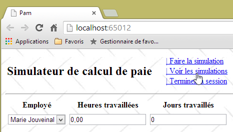

9.16.2. كتابة إجراء الخادم [ViewSimulations]
يستدعي رابط Ajax [View Simulations] إجراء الخادم [ViewSimulations]، الذي كان كوده سابقًا كما يلي:
// see simulations
[HttpPost]
public PartialViewResult VoirSimulations()
{
return PartialView("Simulations");
}
تتوقع طريقة العرض الجزئية [Simulations] التي تعرضها نموذج [IEnumerable<Simulation>] (السطر 1 أدناه):
@model IEnumerable<Simulation>
@using Pam.Web.Models
@if (Model.Count() == 0)
{
<h2>Votre liste de simulations est vide</h2>
}
@if (Model.Count() != 0)
{
<h2>Liste des simulations</h2>
...
}
لهذا السبب لم يعد رابط [عرض المحاكاة] يعمل.
المهمة: اكتب النسخة الجديدة من إجراء الخادم [ViewSimulations] (سطران لإعادة الكتابة)، ثم قم بتشغيل الاختبارات.
9.17. الخطوة 11: إنهاء الجلسة
9.17.1. المشكلة
يمكنك إنهاء جلسة عمل المستخدم في أي وقت باستخدام رابط [Ajax] [إنهاء الجلسة]. يؤدي هذا إلى إنهاء الجلسة الحالية وبدء جلسة جديدة. بالإضافة إلى ذلك، تعود إلى عرض النموذج:
 |
 |
- في [1]، قمنا بتشغيل محاكيتين ثم أنهينا الجلسة؛
- في [2]، عدنا إلى نموذج الإدخال. نريد رؤية عمليات المحاكاة؛
- في [3]، بسبب تغيير الجلسة، أصبحت قائمة المحاكاة فارغة الآن.
9.17.2. كتابة إجراء الخادم [EndSession]
يستدعي رابط Ajax [End Session] إجراء الخادم [EndSession]، الذي كان كوده سابقًا كما يلي:
// end session
[HttpPost]
public PartialViewResult TerminerSession()
{
return PartialView("Formulaire");
}
العرض الجزئي [Form] الذي يعرضه يتوقع [IndexModel] (السطر 1 أدناه):
@model Pam.Web.Models.IndexModel
@using (Html.BeginForm("FaireSimulation", "Pam", FormMethod.Post, new { id = "formulaire" }))
{
...
}
<div id="simulation" />
لهذا السبب لم يعد رابط [إنهاء الجلسة] يعمل.
المهمة: اكتب النسخة الجديدة من إجراء الخادم [EndSession] (سطران لإعادة الكتابة)، ثم قم بتشغيل الاختبارات.
ملاحظة: لإنهاء الجلسة في الإجراء، اكتب:
9.17.3. تعديل دالة JavaScript [terminerSession]
بعد إجراء التعديل السابق، يمكننا الآن العودة إلى النموذج، ولكن تظهر عندئذٍ حالة شاذة — وهي الحالة الموصوفة سابقًا في القسم 9.15.3.
المهمة: باتباع الإجراء الذي استخدمته في القسم 9.15.3، قم بتصحيح دالة JavaScript [terminerSession] ثم قم بإجراء اختبارات للتحقق من أن أدوات التحقق من صحة البيانات من جانب العميل تعمل مرة أخرى.
9.18. الخطوة 12: مسح المحاكاة
9.18.1. المشكلة
عند إنشاء محاكاة، يمكن مسحها باستخدام رابط JavaScript [Clear Simulation]:
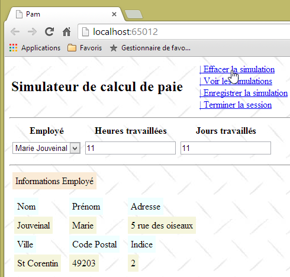

9.18.2. كتابة الإجراء من جانب العميل [clearSimulation]
تحتوي وظيفة JavaScript [clearSimulation] حاليًا على الكود التالي:
function effacerSimulation() {
// delete form entries
// ...
// hide the simulation if it exists
$("#simulation").hide();
// menu
setMenu([lnkFaireSimulation, lnkTerminerSession, lnkVoirSimulations]);
}
المهمة: أكمل هذا الكود. يمكنك استخدام المثال الوارد في القسم 7.6.6 كدليل
9.19. الخطوة 13: إزالة محاكاة
9.19.1. المشكلة
عندما تكون في صفحة المحاكاة، يمكنك حذف محاكاة معينة باستخدام رابط JavaScript [remove]:
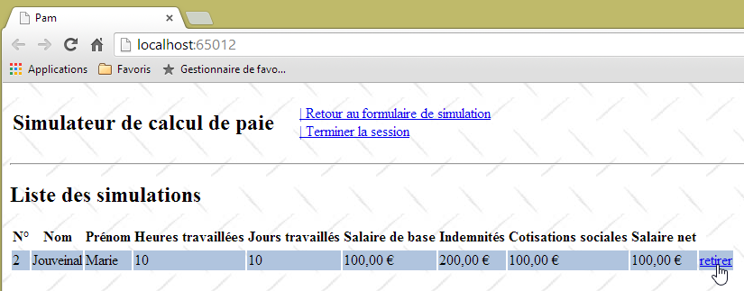

9.19.2. كتابة إجراء العميل [removeSimulation]
تتخذ روابط [remove] التنسيق HTML التالي:
حيث N هو رقم المحاكاة.
المهمة: باتباع الإجراء الوارد في الأقسام 9.9.3، اكتب دالة JS [removeSimulation]. سترسل هذه الدالة طلب Ajax من نوع POST إلى الإجراء [/Pam/RemoveSimulation]. وسترسل البيانات N في النموذج num=N.
ملاحظة: دالة JS [retirerSimulation] مشابهة لدوال JS الأخرى التي كتبتها والتي تقوم بإجراء استدعاء Ajax إلى الخادم. والفرق الوحيد هنا هو إرسال قيمة POST غير موجودة في نموذج. ونحن نعلم أن القيم المرسلة يتم دمجها في سلسلة بالصيغة التالية:
وبالتالي، ستكون دالة JS [removeSimulation] بالشكل التالي:
function retirerSimulation(N) {
// make a manual Ajax call
$.ajax({
url: '/Pam/RetirerSimulation',
...
data:"num="+N,
...
});
// menu
setMenu([lnkRetourFormulaire, lnkTerminerSession]);
}
- السطر 6: تمثل الخاصية [data] في استدعاء jQuery Ajax السلسلة التي تم إرسالها إلى الخادم.
9.19.3. كتابة إجراء الخادم [RemoveSimulation]
إجراء الخادم [RemoveSimulation]:
- يتلقى معلمة مرسلة تسمى [num]، وهي رقم المحاكاة؛
- يجب أن تزيل المحاكاة التي تحمل هذا الرقم من قائمة المحاكاة المخزنة في الجلسة؛
- يجب أن تعرض بعد ذلك القائمة الجديدة للمحاكاة.
المهمة: اكتب إجراء الخادم [RemoveSimulation]. راجع القسم 4.1 لتتعلم كيفية استرداد المعلمة المنشورة المسماة [num].
9.20. الخطوة 14: تحسين طريقة تهيئة التطبيق
لقد اكتمل تطبيق الويب الخاص بنا. وهو يعمل مع فئة [business] محاكاة. دعونا نراجع البنية التي قمنا بتطويرها:
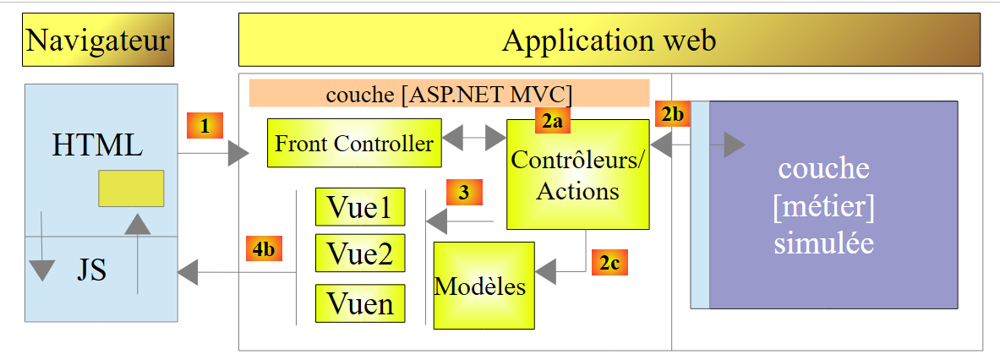 |
هناك بعض التفاصيل المتبقية التي يجب تسويتها قبل الانتقال إلى التنفيذ الفعلي لطبقة [business]، ويتم ذلك في طريقة تهيئة التطبيق: طريقة [Application_Start] في [Global.asax]:
 |
يتم تنفيذ طريقة [Application_Start] في [Global.asax] مرة واحدة فقط عند بدء تشغيل التطبيق. وهنا يمكن الاستفادة من ملف التكوين [Web.config]. في الوقت الحالي، تبدو طريقة [Application_Start] الخاصة بنا كما يلي:
// application
protected void Application_Start()
{
// ----------Auto-generated
AreaRegistration.RegisterAllAreas();
WebApiConfig.Register(GlobalConfiguration.Configuration);
FilterConfig.RegisterGlobalFilters(GlobalFilters.Filters);
RouteConfig.RegisterRoutes(RouteTable.Routes);
BundleConfig.RegisterBundles(BundleTable.Bundles);
// -------------------------------------------------------------------
// ---------- specific configuration
// -------------------------------------------------------------------
// application scope data
ApplicationModel application = new ApplicationModel();
Application["data"] = application;
// instantiation layer [business]
application.PamMetier = new PamMetier();
...
// model binders
...
}
في السطر 17، يتم إنشاء مثيل لطبقة الأعمال باستخدام عامل التشغيل new. بالإضافة إلى ذلك، يتم تعريف نموذج التطبيق على النحو التالي:
public class ApplicationModel
{
// --- application scope data ---
public Employe[] Employes { get; set; }
public IPamMetier PamMetier { get; set; }
public SelectListItem[] EmployesItems { get; set; }
}
في السطر 5 أعلاه، نرى أن نوع الخاصية [PamMetier] هو نوع واجهة [IPamMetier]. وهذا يعني أنه يمكن تهيئة هذه الخاصية بواسطة أي كائن ينفذ هذه الواجهة. ومع ذلك، في السطر 17 من [Application_Start]، قمنا بترميز اسم فئة تنفذ [IPamMetier] بشكل ثابت. لذلك، إذا تم تنفيذ طبقة [business] بفئة جديدة تنفذ [IPamMetier]، فسيتعين تغيير هذا السطر. هذه ليست مشكلة كبيرة، ولكن يمكن تجنبها. يمكن نقل تعريف الفئة التي تنفذ واجهة [IPamMetier] إلى ملف تكوين. لتغيير التنفيذ، نقوم بعد ذلك بتعديل محتويات ملف التكوين هذا. لا يلزم تغيير كود .NET.
هنا، سنستخدم حاوية حقن التبعية [Spring.net]. هناك أطر عمل .NET أخرى يمكنها القيام بنفس الشيء، ربما بشكل أفضل وأبسط.
تتطور بنية المشروع على النحو التالي:
 |
- في [A]، ستطلب طريقة التهيئة لطبقة [ASP.NET MVC] مرجعًا إلى طبقة [الأعمال] المحاكاة من [Spring.net]؛
- في [B]، سيقوم [Spring.net] بإنشاء طبقة [الأعمال] المحاكاة باستخدام ملف التكوين الخاص به لتحديد الفئة التي سيتم إنشاء مثيل لها؛
- في [C]، ستقوم [Spring.net] بإرجاع الإشارة إلى طبقة [الأعمال] المحاكاة إلى طبقة [ASP.NET MVC].
لاحظ أنه بشكل افتراضي، تكون الكائنات التي تديرها [Spring.net] كائنات فردية: لا يوجد سوى مثيل واحد لكل منها. وبالتالي، إذا طلبت الشفرة لاحقًا في مثالنا مرجعًا إلى طبقة [business] المحاكاة من [Spring.net] مرة أخرى، فإن [Spring.net] تعيد ببساطة المرجع إلى الكائن الذي تم إنشاؤه في البداية.
9.20.1. إضافة مراجع [Spring] إلى مشروع الويب
سنستخدم [Spring.net]. يأتي هذا الإطار في شكل مكتبة DLL يجب إضافتها إلى مراجع المشروع. وإليك كيفية القيام بذلك:
 |
في [1]، انقر بزر الماوس الأيمن على فرع [References] (المراجع) للمشروع وحدد الخيار [Manage NuGet Packages] (إدارة حزم NuGet). يلزم وجود اتصال بالإنترنت. ثم تابع كما فعلت سابقًا مع مكتبة JQuery [Globalize]. ابحث عن الكلمة الرئيسية [Spring.core] وقم بتثبيت هذه الحزمة. يتضمن التثبيت ملفين DLL: [Spring.core] [2] و [Common.Logging] [3]. في الأمثلة التالية، تم استخدام إصدار Spring 1.3.2.
ملاحظة: إذا لم يكن لديك اتصال بالإنترنت، فستجد ملفات DLL هذه في مجلد [lib] ضمن المواد الخاصة بدراسة الحالة هذه.
9.20.2. تكوين [web.config]
يتم تعريف فئة التنفيذ لواجهة [IPamMetier] في ملف [web.config].
<configuration>
<configSections>
...
<sectionGroup name="spring">
<section name="objects" type="Spring.Context.Support.DefaultSectionHandler, Spring.Core" />
<section name="context" type="Spring.Context.Support.ContextHandler, Spring.Core" />
</sectionGroup>
</configSections>
<!-- spring configuration -->
<spring>
<context>
<resource uri="config://spring/objects" />
</context>
<objects xmlns="http://www.springframework.net">
<object id="pammetier" type="Pam.Metier.Service.PamMetier, pam-metier-simule"/>
</objects>
</spring>
...
- الأسطر 2–8: حدد موقع العلامة <configSections> في الملف وأدخل الأسطر 4–7 بداخلها؛
- السطر 4: توفر السمة [name="spring"] معلومات حول قسم [spring] في الأسطر 10-17؛
- السطر 5: يحدد الفئة [Spring.Context.Support.DefaultSectionHandler] الموجودة في مكتبة DLL [Spring.Core] باعتبارها الفئة القادرة على معالجة قسم [objects] في الأسطر 14–16؛
- السطر 6: يُعرّف الفئة [Spring.Context.Support.ContextHandler] الموجودة في مكتبة DLL [Spring.Core] باعتبارها الفئة القادرة على معالجة قسم [context] في الأسطر 11–13؛
- الأسطر 11-13: يوفر هذا القسم المعلومات [<resource uri="config://spring/objects" />]، والتي تشير إلى أن كائنات Spring موجودة في ملف التكوين ضمن قسم [/spring/objects]، أي في الأسطر 14-16؛
- الأسطر 14-16: تقدم علامة [objects] كائنات Spring؛
- السطر 15: يُعرّف كائنًا محددًا بـ [id="pammetier"]، وهو مثيل للفئة [Pam.Metier.Service.PamMetier] الموجودة في مكتبة DLL [pam-metier-simule]. احرص على عدم ارتكاب أي خطأ هنا. بالنسبة لسمة [id]، يمكنك استخدام أي شيء تريده. ستستخدم هذا المعرف في [Global.asax]. الفئة [Pam.Metier.Service.PamMetier] هي فئة طبقة [business] المحاكاة الخاصة بنا. تحتاج إلى الرجوع إلى تعريفها للعثور على اسمها الكامل:
namespace Pam.Metier.Service
{
public class PamMetier : IPamMetier
{
...
بالنسبة لملف DLL [pam-metier-simule]، تحتاج إلى التحقق من خصائص مشروع C# [pam-metier-simule]:
 |
يجب عليك استخدام الاسم المشار إليه في [1].
9.20.3. تعديل [Application_Start]
تتغير طريقة [Application_Start] على النحو التالي:
using Spring.Context.Support;
// application
protected void Application_Start()
{
// ----------Auto-generated
AreaRegistration.RegisterAllAreas();
WebApiConfig.Register(GlobalConfiguration.Configuration);
FilterConfig.RegisterGlobalFilters(GlobalFilters.Filters);
RouteConfig.RegisterRoutes(RouteTable.Routes);
BundleConfig.RegisterBundles(BundleTable.Bundles);
// -------------------------------------------------------------------
// ---------- specific configuration
// -------------------------------------------------------------------
// application scope data
ApplicationModel application = new ApplicationModel();
Application["data"] = application;
// instantiation layer [business]
application.PamMetier = ContextRegistry.GetContext().GetObject("pammetier") as IPamMetier;
...
// model binders
...
}
- السطر 19: نستخدم فئة Spring [ContextRegistry]، القادرة على معالجة ملف [web.config]. للقيام بذلك، نحتاج إلى استيراد مساحة الاسم من السطر 1. تسترد الطريقة الثابتة [GetContext] محتويات علامات [context]، التي تشير إلى مكان وجود كائنات Spring. ثم تسمح لنا الطريقة الثابتة [GetObject] باسترداد كائن محدد يتم تحديده بواسطة سمة id الخاصة به. لاحظ أن اسم الفئة التي تنفذ واجهة [IPamMetier] لم يعد مبرمجًا بشكل ثابت في الكود. فهو موجود الآن في ملف [web.config].
بعد إجراء كل هذه التغييرات، اختبر تطبيقك. من المفترض أن يعمل.
9.20.4. معالجة خطأ تهيئة التطبيق
في الطريقة [Application_Start]، كتبنا:
application.PamMetier = ContextRegistry.GetContext().GetObject("pammetier") as IPamMetier;
قد تفشل العبارة الموجودة على يمين علامة =. وهناك أسباب مختلفة لذلك:
- أكثرها وضوحًا هو أننا أخطأنا في اسم الكائن المراد إنشاء مثيل له؛
- سبب آخر هو فشل إنشاء مثيل لطبقة [الأعمال]. لا يمكن أن يكون هذا هو الحال بالنسبة لطبقة [الأعمال] المحاكاة لدينا، ولكنه قد يكون كذلك بالنسبة لطبقة [الأعمال] الحقيقية لدينا، والتي سيتم توصيلها بقاعدة بيانات. قد لا يكون نظام إدارة قواعد البيانات قيد التشغيل، أو قد تكون المعلومات المتعلقة بقاعدة البيانات المراد إدارتها غير صحيحة، إلخ...
سنتعامل مع أي استثناءات في كتلة try/catch. يتطور الكود على النحو التالي:
// application
protected void Application_Start()
{
// ----------Auto-generated
...
// -------------------------------------------------------------------
// ---------- specific configuration
// -------------------------------------------------------------------
// application scope data
ApplicationModel application = new ApplicationModel();
Application["data"] = application;
application.InitException = null;
try
{
// instantiation layer [business]
application.PamMetier = ContextRegistry.GetContext().GetObject("pammetier") as IPamMetier;
}
catch (Exception ex)
{
application.InitException = ex;
}
//if no error
if (application.InitException == null)
{
....
}
// model binders
...
}
- في السطر 12، نقدم خاصية جديدة باسم [InitException] في نموذج التطبيق:
public class ApplicationModel
{
// --- application scope data ---
public Employe[] Employes { get; set; }
public IPamMetier PamMetier { get; set; }
public SelectListItem[] EmployesItems { get; set; }
public Exception InitException { get; set; }
}
- السطر 7 أعلاه، الاستثناء الذي قد يحدث أثناء تهيئة التطبيق؛
- الأسطر 13-21 من [Application_Start]: يتم الآن إنشاء مثيل لطبقة [business] داخل كتلة try/catch؛
- السطر 20: يتم التقاط الاستثناء؛
- الأسطر 23-26: إذا لم يحدث أي خطأ، يتم تنفيذ الكود السابق؛
- السطر 28: يتم إنشاء [ModelBinders] بغض النظر عما إذا حدث خطأ أم لا. هذا أمر مهم. نريد التأكد من أن نموذج التطبيق [ApplicationModel] مرتبط بشكل صحيح بالإطار.
نعلم أنه عند بدء تشغيل التطبيق، يتم تنفيذ إجراء الخادم [Index]. في الوقت الحالي، يكون كما يلي:
[HttpGet]
public ViewResult Index(ApplicationModel application)
{
return View(new IndexModel() { Application = application });
}
السطر 2: تستقبل الإجراء [Index] نموذج التطبيق. وبالتالي يمكنها تحديد ما إذا كانت عملية التهيئة ناجحة أم لا وعرض صفحة خطأ في حالة فشل التهيئة بأي شكل من الأشكال. نقوم بتعديل الكود على النحو التالي:
[HttpGet]
public ViewResult Index(ApplicationModel application)
{
// initialization error?
if (application.InitException != null)
{
// error page without menu
return View("InitFailed",Static.GetErreursForException(application.InitException));
}
// no error
return View(new IndexModel() { Application = application });
}
السطر 8: في حالة حدوث خطأ في التهيئة، نعرض طريقة العرض [InitFailed.cshtml]، باستخدام قائمة رسائل الخطأ من الاستثناء الذي حدث أثناء التهيئة كنموذج. تم تقديم طريقة [Static.GetErrorsForException] وشرحها في القسم 9.12.4. ستكون طريقة العرض [InitFailed.cshtml] كما يلي:
 |
وإليك كودها:
@model IEnumerable<string>
@{
Layout = null;
}
<!DOCTYPE html>
<html>
<head>
<title>@ViewBag.Title</title>
<meta charset="utf-8" />
<meta name="viewport" content="width=device-width" />
<link rel="stylesheet" href="~/Content/Site.css" />
</head>
<body>
<table>
<tbody>
<tr>
<td>
<h2>Simulateur de calcul de paie</h2>
</td>
</tbody>
</table>
<hr />
<h2>Les erreurs suivantes se sont produites à l'initialisation de l'application : </h2>
<ul>
@foreach (string msg in Model)
{
<li>@msg</li>
}
</ul>
</body>
</html>
- السطر 1: قالب العرض عبارة عن قائمة برسائل الخطأ. يتم عرض هذه الرسائل في قائمة HTML في الأسطر 24–29؛
- السطر 3: لا يستخدم هذا العرض الصفحة الرئيسية [_Layout.cshtml]. وذلك لأننا لا نريد القائمة التي يوفرها هذا المستند. لذلك نقوم بإنشاء صفحة HTML كاملة (الأسطر 5–23).
لاختبار ذلك، ما عليك سوى تعديل مثيل طبقة [business] في [Application_Start] على النحو التالي:
try
{
// instantiation layer [business]
application.PamMetier = ContextRegistry.GetContext().GetObject("xx") as IPamMetier;
}
catch (Exception ex)
{
application.InitException = ex;
}
السطر 4: نحن نبحث عن كائن غير موجود في كائنات Spring.
عندما نحفظ هذه التغييرات ونشغل التطبيق، نحصل على الصفحة التالية:

نحصل على صفحة خطأ بدون قائمة. لا يمكن للمستخدم فعل أي شيء سوى الإقرار بالخطأ. هذا هو ما أردناه.
9.21. أين نحن الآن؟
لدينا الآن تطبيق ويب فعال يعمل مع طبقة أعمال محاكاة. وتكون بنيته كما يلي:
 |
تعمل طبقة [ASP.NET MVC] مع طبقة الأعمال المحاكاة من خلال واجهة [IPamMetier]. إذا استبدلنا طبقة الأعمال المحاكاة هذه بطبقة أعمال حقيقية تنفذ هذه الواجهة، فلن نضطر إلى تعديل كود طبقة الويب. بفضل [Spring.net]، سنحتاج فقط إلى تغيير فئة التنفيذ لواجهة [IPamMetier] في [web.config]. سنمضي قدمًا في هذا النهج.
وستكون البنية الجديدة على النحو التالي:
 |
سنصف ما يلي بالترتيب:
- طبقة [EF5] المتصلة بنظام إدارة قواعد البيانات (DBMS). سيتم تنفيذها باستخدام Entity Framework 5 (EF5)؛
- طبقة [DAO]، التي تدير الوصول إلى البيانات عبر طبقة [EF5]. وهذا يسمح لها بعدم معرفة نظام إدارة قواعد البيانات (DBMS). تعمل هذه الطبقة ببساطة على معالجة كيانات التطبيق [Employee، Contributions، Allowances]؛
- طبقة [business] التي تنفذ حساب الراتب.
البنية الجديدة هي تلك التي تم عرضها في بداية هذا المستند في القسم 1.1، والتي نلخصها الآن:
 |
- طبقة [الويب] هي الطبقة التي تتعامل مع مستخدم تطبيق الويب. يتفاعل المستخدم مع تطبيق الويب من خلال صفحات الويب التي يتم عرضها في المتصفح. يوجد ASP.NET MVC في هذه الطبقة وفيها فقط؛
- تنفذ طبقة [الأعمال] قواعد العمل الخاصة بالتطبيق، مثل حساب الراتب أو الفاتورة. تستخدم هذه الطبقة البيانات الواردة من المستخدم عبر طبقة [الويب] ومن نظام إدارة قواعد البيانات (DBMS) عبر طبقة [DAO]؛
- تدير طبقة [DAO] (كائنات الوصول إلى البيانات) وطبقة [ORM] (مخطط العلاقات بين الكائنات) وموصل ADO.NET الوصول إلى بيانات نظام إدارة قواعد البيانات. تعمل طبقة [ORM] كجسر بين الكائنات التي تتعامل معها طبقة [DAO] والصفوف والأعمدة من البيانات في قاعدة البيانات العلائقية. يتم استخدام نوعين من ORM بشكل شائع في عالم .NET: NHibernate (http://sourceforge.net/projects/nhibernate/) و Entity Framework (http://msdn.microsoft.com/en-us/data/ef.aspx)؛
- يمكن تحقيق تكامل الطبقات باستخدام حاوية حقن التبعية مثل Spring (http://www.springframework.net/)؛
سيتم تنفيذ طبقات [business] و [DAO] و [EF5] باستخدام مشاريع C#. من الآن فصاعدًا، سنعمل باستخدام Visual Studio Express 2012 for Desktop.
9.22. الخطوة 15: إعداد طبقة Entity Framework 5
 |
إن إنشاء طبقة [EF5] لا يتعلق بالبرمجة بقدر ما يتعلق بالتكوين. لفهم كيفية كتابة هذه الطبقة، اقرأ الوثيقة [Introduction to Entity Framework 5 Code First] المتوفرة على الرابط [http://tahe.developpez.com/dotnet/ef5cf-02/]. إنها وثيقة طويلة إلى حد ما. يتم تغطية الأساسيات في الفصول الأربعة الأولى. سيتم الإشارة إلى الأقسام المحددة التي يجب قراءتها. عند الإشارة إلى هذا المستند، سنستخدم الرمز [refEF5].
بالإضافة إلى ذلك، سنحتاج أحيانًا إلى مفاهيم لغة C#. وعندها سنشير إلى الدورة التدريبية [مقدمة إلى لغة C#] المتوفرة على الرابط [http://tahe.developpez.com/dotnet/csharp/] باستخدام الرمز [refC#].
9.22.1. قاعدة البيانات
تم تقديم قاعدة بيانات التطبيق في القسم 9.4. وهي قاعدة بيانات MySQL تسمى [dbpam_ef5] (pam = Paie Assistante Maternelle). تحتوي قاعدة البيانات هذه على مسؤول يسمى root بدون كلمة مرور.
دعونا نراجع مخطط قاعدة البيانات. تحتوي على ثلاثة جداول:
توجد علاقة مفتاح خارجي بين عمود EMPLOYEES(INDEMNITY_ID) وعمود INDEMNITIES(ID). يتم تحديد جزء من بنية قاعدة البيانات هذه بناءً على استخدامها مع EF5.
فيما يلي نص SQL لإنشاء قاعدة البيانات:
-- phpMyAdmin SQL Dump
-- version 3.5.1
-- http://www.phpmyadmin.net
--
-- Customer: localhost
-- Generated on: Mon November 04, 2013 at 09:34 am
-- Server version: 5.5.24-log
-- Version of PHP: 5.4.3
SET SQL_MODE="NO_AUTO_VALUE_ON_ZERO";
SET time_zone = "+00:00";
/*!40101 SET @OLD_CHARACTER_SET_CLIENT=@@CHARACTER_SET_CLIENT */;
/*!40101 SET @OLD_CHARACTER_SET_RESULTS=@@CHARACTER_SET_RESULTS */;
/*!40101 SET @OLD_COLLATION_CONNECTION=@@COLLATION_CONNECTION */;
/*!40101 SET NAMES utf8 */;
--
-- Database: `dbpam_ef5`
--
-- --------------------------------------------------------
--
-- Structure of the `contributions` table
--
CREATE TABLE IF NOT EXISTS `cotisations` (
`ID` bigint(20) NOT NULL AUTO_INCREMENT,
`SECU` double NOT NULL,
`RETRAITE` double NOT NULL,
`CSGD` double NOT NULL,
`CSGRDS` double NOT NULL,
`VERSIONING` int(11) NOT NULL,
PRIMARY KEY (`ID`)
) ENGINE=InnoDB DEFAULT CHARSET=utf8 AUTO_INCREMENT=12 ;
--
-- Contents of the `contributions` table
--
INSERT INTO `cotisations` (`ID`, `SECU`, `RETRAITE`, `CSGD`, `CSGRDS`, `VERSIONING`) VALUES
(11, 9.39, 7.88, 6.15, 3.49, 1);
--
-- Contribution triggers
--
DROP TRIGGER IF EXISTS `INCR_VERSIONING_COTISATIONS`;
DELIMITER //
CREATE TRIGGER `INCR_VERSIONING_COTISATIONS` BEFORE UPDATE ON `cotisations`
FOR EACH ROW BEGIN
SET NEW.VERSIONING:=OLD.VERSIONING+1;
END
//
DELIMITER ;
DROP TRIGGER IF EXISTS `START_VERSIONING_COTISATIONS`;
DELIMITER //
CREATE TRIGGER `START_VERSIONING_COTISATIONS` BEFORE INSERT ON `cotisations`
FOR EACH ROW BEGIN
SET NEW.VERSIONING:=1;
END
//
DELIMITER ;
-- --------------------------------------------------------
--
-- Structure of the `employees` table
--
CREATE TABLE IF NOT EXISTS `employes` (
`ID` bigint(20) NOT NULL AUTO_INCREMENT,
`PRENOM` varchar(20) CHARACTER SET latin1 NOT NULL,
`SS` varchar(15) CHARACTER SET latin1 NOT NULL,
`ADRESSE` varchar(50) CHARACTER SET latin1 NOT NULL,
`CP` varchar(5) CHARACTER SET latin1 NOT NULL,
`VILLE` varchar(30) CHARACTER SET latin1 NOT NULL,
`NOM` varchar(30) CHARACTER SET latin1 NOT NULL,
`VERSIONING` int(11) NOT NULL,
`INDEMNITE_ID` bigint(20) NOT NULL,
PRIMARY KEY (`ID`),
UNIQUE KEY `SS` (`SS`),
KEY `FK_EMPLOYES_INDEMNITE_ID` (`INDEMNITE_ID`)
) ENGINE=InnoDB DEFAULT CHARSET=utf8 AUTO_INCREMENT=26 ;
--
-- Contents of the `employees` table
--
INSERT INTO `employes` (`ID`, `PRENOM`, `SS`, `ADRESSE`, `CP`, `VILLE`, `NOM`, `VERSIONING`, `INDEMNITE_ID`) VALUES
(24, 'Marie', '254104940426058', '5 rue des oiseaux', '49203', 'St Corentin', 'Jouveinal', 1, 93),
(25, 'Justine', '260124402111742', 'La Brûlerie', '49014', 'St Marcel', 'Laverti', 1, 94);
--
-- Used' triggers
--
DROP TRIGGER IF EXISTS `INCR_VERSIONING_EMPLOYES`;
DELIMITER //
CREATE TRIGGER `INCR_VERSIONING_EMPLOYES` BEFORE UPDATE ON `employes`
FOR EACH ROW BEGIN
SET NEW.VERSIONING:=OLD.VERSIONING+1;
END
//
DELIMITER ;
DROP TRIGGER IF EXISTS `START_VERSIONING_EMPLOYES`;
DELIMITER //
CREATE TRIGGER `START_VERSIONING_EMPLOYES` BEFORE INSERT ON `employes`
FOR EACH ROW BEGIN
SET NEW.VERSIONING:=1;
END
//
DELIMITER ;
-- --------------------------------------------------------
--
-- Structure of the `indemnities` table
--
CREATE TABLE IF NOT EXISTS `indemnites` (
`ID` bigint(20) NOT NULL AUTO_INCREMENT,
`ENTRETIEN_JOUR` double NOT NULL,
`REPAS_JOUR` double NOT NULL,
`INDICE` int(11) NOT NULL,
`INDEMNITES_CP` double NOT NULL,
`BASE_HEURE` double NOT NULL,
`VERSIONING` int(11) NOT NULL,
PRIMARY KEY (`ID`),
UNIQUE KEY `INDICE` (`INDICE`)
) ENGINE=InnoDB DEFAULT CHARSET=utf8 AUTO_INCREMENT=95 ;
--
-- Contents of the `indemnities` table
--
INSERT INTO `indemnites` (`ID`, `ENTRETIEN_JOUR`, `REPAS_JOUR`, `INDICE`, `INDEMNITES_CP`, `BASE_HEURE`, `VERSIONING`) VALUES
(93, 2.1, 3.1, 2, 15, 2.1, 1),
(94, 2, 3, 1, 12, 1.93, 1);
--
-- Compensation triggers
--
DROP TRIGGER IF EXISTS `INCR_VERSIONING_INDEMNITES`;
DELIMITER //
CREATE TRIGGER `INCR_VERSIONING_INDEMNITES` BEFORE UPDATE ON `indemnites`
FOR EACH ROW BEGIN
SET NEW.VERSIONING:=OLD.VERSIONING+1;
END
//
DELIMITER ;
DROP TRIGGER IF EXISTS `START_VERSIONING_INDEMNITES`;
DELIMITER //
CREATE TRIGGER `START_VERSIONING_INDEMNITES` BEFORE INSERT ON `indemnites`
FOR EACH ROW BEGIN
SET NEW.VERSIONING:=1;
END
//
DELIMITER ;
--
-- Constraints for exported tables
--
--
-- Constraints for the `employees` table
--
ALTER TABLE `employes`
ADD CONSTRAINT `FK_EMPLOYES_INDEMNITE_ID` FOREIGN KEY (`INDEMNITE_ID`) REFERENCES `indemnites` (`ID`);
/*!40101 SET CHARACTER_SET_CLIENT=@OLD_CHARACTER_SET_CLIENT */;
/*!40101 SET CHARACTER_SET_RESULTS=@OLD_CHARACTER_SET_RESULTS */;
/*!40101 SET COLLATION_CONNECTION=@OLD_COLLATION_CONNECTION */;
يرجى ملاحظة النقاط التالية:
- الأسطر 30 و73 و122: المفاتيح الأساسية للجداول في وضع [AUTO_INCREMENT]. يتم إدارة هذه المفاتيح بواسطة MySQL، وليس EF5؛
- السطر 83: رقم الضمان الاجتماعي له قيد تفرد؛
- السطر 130: معرّف الموظف يخضع لقيود التفرد؛
- السطران 168 و 169: المفتاح الخارجي من جدول [employees] إلى جدول [benefits]؛
- السطر 49: المشغل هو نص برمجي SQL مدمج في نظام إدارة قواعد البيانات (DBMS) ويتم تنفيذه في أوقات محددة؛
- الأسطر 51–54: يتم تشغيل المشغل [INCR_VERSIONING_COTISATIONS] قبل أي تعديل لصف في جدول [cotisations]. ثم يزيد العمود [VERSIONING] بمقدار واحد؛
- الأسطر 59–62: يتم تشغيل المشغل [START_VERSIONING_COTISATIONS] قبل إدراج أي صف جديد في جدول [cotisations]. ثم يقوم بتهيئة العمود [VERSIONING] إلى 1؛
- في النهاية، يتم تعيين العمود [VERSIONING] على 1 عند إنشاء صف في جدول [contributions]، ثم يتم زيادته بمقدار 1 في كل مرة يتم فيها إجراء تعديل على هذا الصف. تسمح هذه الآلية لـ EF5 بإدارة الوصول المتزامن إلى صف في جدول [contributions] على النحو التالي:
- تقوم العملية P1 بقراءة صف L من جدول [contributions] في الوقت T1. تحتوي الصف على قيمة عمود [VERSIONING] تساوي V1؛
- تقوم العملية P2 بقراءة نفس الصف L من جدول [contributions] في الوقت T2. يحتوي الصف على قيمة عمود [VERSIONING] تساوي V1 لأن العملية P1 لم تقم بعد بتثبيت تعديلها؛
- تقوم العملية P1 بتعديل الصف L وتثبيت التغيير. ثم يتغير عمود [VERSIONING] للصف L إلى V1+1 بسبب المشغل [INCR_VERSIONING_COTISATIONS]؛
- ثم تقوم العملية P2 بنفس الشيء. ثم يرمي EF5 استثناءً لأن العملية P2 لديها صف يحتوي على عمود [VERSIONING] بقيمة V1، والتي تختلف عن القيمة الموجودة في قاعدة البيانات، وهي V1+1. لا يمكن تعديل الصف إلا إذا كان له نفس قيمة [VERSIONING] الموجودة في قاعدة البيانات.
وهذا ما يُسمى التحكم المتفائل في التزامن. مع EF5، يجب أن يحتوي الحقل الذي يؤدي هذا الدور على تعليق [ConcurrencyCheck].
- يتم إنشاء آلية مماثلة لجدول [employes] (الأسطر 98–113) وجدول [indemnites] (الأسطر 144–159).
المهمة: قم بإنشاء قاعدة بيانات MySQL [dbpam_ef5] باستخدام البرنامج النصي SQL السابق. يجب إنشاء قاعدة البيانات [dbpam_ef5] مسبقًا لأن البرنامج النصي لا يقوم بإنشائها. سنقوم بعد ذلك بتشغيل البرنامج النصي SQL على قاعدة البيانات هذه.
9.22.2. مشروع Visual Studio
باستخدام Visual Studio Express 2012 for Desktop، نقوم بتحميل الحل [pam-td] المستخدم عند إنشاء طبقة [web]:
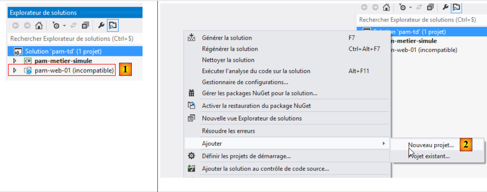 |
- في [1]، يتعذر على VS 2012 Express for Desktop تحميل مشروع الويب [pam-web-01]. هذا أمر طبيعي ولا يمثل مشكلة؛
- في [2]، نضيف مشروعًا جديدًا إلى حل [pam-td]؛
 |
- في [3]، المشروع من النوع [console] واسمه [4] [pam-ef5]؛
- في [5]، يتم إنشاء المشروع. اسمه ليس بخط عريض، لذا فهو ليس مشروع بدء الحل؛
 |
- في [6] و[7]، قمنا بتعيين المشروع الجديد كمشروع بدء التشغيل.
9.22.3. إضافة المراجع الضرورية إلى المشروع
دعونا نلقي نظرة على المشروع ككل:
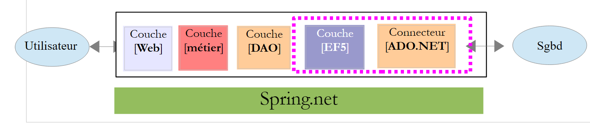 |
يتطلب مشروعنا عددًا من ملفات DLL:
- ملف DLL الخاص بـ Entity Framework 5؛
- ملف DLL لموصل ADO.NET لنظام إدارة قواعد البيانات MySQL.
يشرح القسم 4.2 من [refEF5] كيفية تثبيت ملفات DLL هذه باستخدام أداة [NuGet]. حاليًا (نوفمبر 2013)، الإصدار المتاح من Entity Framework هو الإصدار 6 (EF6). لسوء الحظ، يبدو أن موصل MySQL ADO.NET المتاح (نوفمبر 2013) عبر [NuGet] غير متوافق مع EF6. لذلك، قمنا بوضع ملف DLL الخاص بـ EF5 وملفات DLL الأخرى المطلوبة لمشروع [pam-ef5] في مجلد [lib] [1]
 |
لقد وضعنا ملفات DLL الأخرى في مجلد [lib]. سنستخدمها لاحقًا. في [2]، نضيف ملفات DLL الجديدة هذه إلى المشروع.
 |
- في [3]، انتقل عبر نظام الملفات إلى مجلد [lib]؛
- في [4]، حدد ملفات DLL الثلاثة ثم انقر فوق "موافق" مرتين؛
- في [5]، تمت إضافة ملفات DLL الثلاثة إلى مراجع المشروع.
نحتاج إلى ملف DLL آخر. سيتم العثور على هذا الملف ضمن ملفات .NET Framework الموجودة على الجهاز.
 |
- في [1]، أضف مرجعًا جديدًا إلى المشروع؛
 |
- في [2]، حدد [Assemblies]؛
- في [3]، اكتب [system.component]؛
- في [4]، حدد تجميع [System.ComponentModel.DataAnnotations]؛
- في [5]، تمت إضافة المرجع.
نحن الآن جاهزون للبرمجة والتكوين.
9.22.4. كيانات Entity Framework
كيانات Entity Framework هي فئات تغلف صفوف جداول قاعدة البيانات المختلفة. دعونا نستعرضها:
في طبقة [web]، استخدمنا كيانات [Employee، Contributions، Benefits] (انظر القسم 9.7.3، الصفحة 211). لم تكن هذه الكيانات تمثيلات دقيقة للجداول. وبالتالي، تم تجاهل أعمدة [ID، VERSIONING]. هنا، لن يكون الأمر كذلك لأنها تُستخدم بواسطة EF5 ORM. لذلك سنضيف الخصائص المفقودة إليها. نقوم بإنشاء هذه الكيانات في مجلد [Models] داخل المشروع:
 |
أصبح الكود الجديد لها كما يلي:
فئة [Cotisations]
using System;
namespace Pam.EF5.Entites
{
public class Cotisations
{
public int Id { get; set; }
public double CsgRds { get; set; }
public double Csgd { get; set; }
public double Secu { get; set; }
public double Retraite { get; set; }
public int Versioning { get; set; }
// signature
public override string ToString()
{
return string.Format("Cotisations[{0},{1},{2},{3}, {4}, {5}]", Id, Versioning, CsgRds, Csgd, Secu, Retraite);
}
}
}
- السطر 3: تم تكييف مساحة الاسم مع المشروع الجديد؛
- تمت إضافة الخصائص في السطرين 7 و 12 لتعكس بنية جدول [contributions]؛
- السطر 17: تعرض طريقة [ToString] الآن الحقلين الجديدين.
فئة [Indemnites]
using System;
namespace Pam.EF5.Entites
{
public class Indemnites
{
public int Id { get; set; }
public int Indice { get; set; }
public double BaseHeure { get; set; }
public double EntretienJour { get; set; }
public double RepasJour { get; set; }
public double IndemnitesCp { get; set; }
public int Versioning { get; set; }
// signature
public override string ToString()
{
return string.Format("Indemnités[{0},{1},{2},{3},{4}, {5}, {6}]", Id, Versioning, Indice, BaseHeure, EntretienJour, RepasJour, IndemnitesCp);
}
}
}
- السطر 3: تم تكييف مساحة الاسم مع المشروع الجديد؛
- تمت إضافة الخصائص في السطرين 7 و 13 لتعكس بنية جدول [indemnites]؛
- السطر 18: تعرض طريقة [ToString] الآن الحقلين الجديدين.
فئة [Employee]
using System;
namespace Pam.EF5.Entites
{
public class Employe
{
public int Id { get; set; }
public string SS { get; set; }
public string Nom { get; set; }
public string Prenom { get; set; }
public string Adresse { get; set; }
public string Ville { get; set; }
public string CodePostal { get; set; }
public Indemnites Indemnites { get; set; }
public int Versioning { get; set; }
// signature
public override string ToString()
{
return string.Format("Employé[{0},{1},{2},{3},{4},{5}, {6}, {7}]", Id, Versioning, SS, Nom, Prenom, Adresse, Ville, CodePostal);
}
}
}
- السطر 3: تم تكييف مساحة الاسم مع المشروع الجديد؛
- تمت إضافة الخصائص في السطرين 8 و 16 لتعكس بنية جدول [employees]؛
- السطر 21: تعرض طريقة [ToString] الآن الحقلين الجديدين.
لكي تكون قابلة للاستخدام بواسطة EF5 ORM، يجب توضيح خصائص هذه الفئات.
المهمة: باستخدام القسم 3.4 [إنشاء قاعدة البيانات من الكيانات] من [refEF5]، أضف التعليقات التوضيحية التي يتطلبها EF5 إلى كيانات [Employee، Contributions، Benefits].
نصائح:
- ما عليك سوى إنشاء التعليقات التوضيحية. لا تتبع القسم [إنشاء قاعدة البيانات] من الفقرة المشار إليها؛
- بالنسبة للتعليق التوضيحي [Table]، اتبع مثال MySQL في القسم 4.2 من [refEF5]؛
- بالنسبة للتعليق التوضيحي [ConcurrencyCheck] على الخاصية [Versioning]، اتبع مثال Oracle في القسم 5.2 من [refEF5]؛
- بالنسبة للمفتاح الخارجي الذي يحتوي عليه الجدول [employes] في الجدول [indemnités]، اتبع المثال 3.4.2 من [refEF5]. وبذلك ستضيف خاصية جديدة إلى الكيان [Employe]:
public int IndemniteId { get; set; }
وستكون قيمتها هي قيمة العمود [INDEMNITES_ID] في الجدول [employes]. ستقوم بتطبيق تعليقات المفتاح الأجنبي على خصائص [IndemniteId] و [Indemnites] للكيان [Employe]. للقيام بذلك، اتبع المثال 3.4.2 في [refEF5]؛
- لن تدير العلاقات العكسية للمفاتيح الخارجية؛
- تتطلب هذه المهمة قراءة بعض أجزاء [refEF5].
9.22.5. تكوين EF5 ORM
لنضع المشروع في سياقه:
 |
ستقوم طبقة [EF5] بالوصول إلى قاعدة البيانات عبر موصل [ADO.NET] لنظام إدارة قواعد البيانات MySQL. وهي تتطلب معلومات معينة للوصول إلى قاعدة البيانات هذه. وتوجد هذه المعلومات في أجزاء مختلفة من المشروع.
أولاً، يجب علينا إنشاء سياق قاعدة البيانات. هذا السياق هو فئة مشتقة من فئة النظام [System.Data.Entity.DbContext]. ويُستخدم لتعريف تمثيلات الكائنات لجداول قاعدة البيانات. سنضع هذه الفئة في مجلد [Models] الخاص بالمشروع جنبًا إلى جنب مع كيانات EF5:
 |
ستكون فئة [DbPamContext] كما يلي:
using Pam.EF5.Entites;
using System.Data.Entity;
namespace Pam.Models
{
public class DbPamContext : DbContext
{
public DbSet<Employe> Employes { get; set; }
public DbSet<Cotisations> Cotisations { get; set; }
public DbSet<Indemnites> Indemnites { get; set; }
}
}
- السطر 6: فئة [DbPamContext] مشتقة من فئة النظام [DbContext]؛
- الأسطر 8–10: تمثيلات الكائنات لثلاثة جداول قاعدة البيانات. نوعها هو [DbSet<Entity>]، حيث [Entity] هي إحدى كيانات Entity Framework التي حددناها للتو. يمكن النظر إلى نوع [DbSet] على أنه مجموعة من الكيانات. ويمكن الاستعلام عنها باستخدام LINQ (Language-Integrated Query). يُنصح القراء غير المعتادين على LINQ بقراءة القسم 3.5.4 [تعلم LINQ باستخدام LINQPad] في [refEF5].
سنشير من الآن فصاعدًا إلى فئة [DbPamContext] باعتبارها سياق الاستمرارية لقاعدة البيانات [dbpam_ef5]. وهذه مصطلحات قياسية في ORMs (أدوات التعيين الكائني-العلائقي). ويُعد سياق الاستمرارية هذا تمثيلاً موجهًا للكائنات لقاعدة البيانات. نشير أيضًا إلى مزامنة سياق الاستمرارية مع قاعدة البيانات: حيث تنعكس التعديلات والإضافات والحذوفات التي يتم إجراؤها على سياق الاستمرارية في قاعدة البيانات. تحدث هذه المزامنة في أوقات محددة: عند إغلاق سياق الاستمرارية، أو في نهاية المعاملة، أو قبل استعلام SQL SELECT على قاعدة البيانات.
يتم تخزين المعلومات حول نظام إدارة قواعد البيانات (DBMS) وقاعدة البيانات في [App.config].
 |
يتم شرح التكوين الضروري في [app.config] في الأقسام التالية من [refEF5]:
- 3.4 لنظام إدارة قواعد البيانات SQL Server. حيث يتم عرض المبادئ الرئيسية لتكوين EF5؛
- 4.2 لنظام إدارة قواعد البيانات MySQL.
نتبع هذا القسم الأخير ونقوم بتكوين ملف [app.config] على النحو التالي:
<?xml version="1.0" encoding="utf-8" ?>
<configuration>
<startup>
<supportedRuntime version="v4.0" sku=".NETFramework,Version=v4.5" />
</startup>
<!-- configuration EF5 -->
<!-- database connection string [dbam_ef5] -->
<connectionStrings>
<add name="DbPamContext"
connectionString="Server=localhost;Database=dbpam_ef5;Uid=root;Pwd=;"
providerName="MySql.Data.MySqlClient" />
</connectionStrings>
<!-- the MySQL factory provider -->
<system.data>
<DbProviderFactories>
<remove invariant="MySql.Data.MySqlClient"/>
<add name="MySQL Data Provider" invariant="MySql.Data.MySqlClient" description=".Net Framework Data Provider for MySQL"
type="MySql.Data.MySqlClient.MySqlClientFactory, MySql.Data, Version=6.5.4.0, Culture=neutral, PublicKeyToken=C5687FC88969C44D"
/>
</DbProviderFactories>
</system.data>
</configuration>
- تمت إضافة الأسطر من 6 إلى 21. يجب إدراجها داخل العلامة <configuration> في السطرين 2 و 22؛
- الأسطر 8–12: تحدد سلاسل اتصال قاعدة البيانات، وهو مفهوم ADO.NET (انظر القسم 7.3.5 في [refC#])؛
- الأسطر 9-11: تحدد سلسلة الاتصال بقاعدة بيانات MySQL [dbpam_ef5]؛
- السطر 9: اسم سلسلة الاتصال. هنا، لا يمكنك إدخال أي شيء. بشكل افتراضي، يجب عليك إدخال اسم الفئة التي تنفذ سياق قاعدة البيانات:
public class DbPamContext : DbContext
{
public DbSet<Employe> Employes { get; set; }
public DbSet<Cotisations> Cotisations { get; set; }
public DbSet<Indemnites> Indemnites { get; set; }
}
تسمى الفئة [DbPamContext]. في السطر 9 من [app.config]، يجب تعيين [name="DbPamContext"];
- السطر 10: سلسلة اتصال خاصة بنظام إدارة قواعد البيانات MySQL:
- [Server=localhost]: عنوان IP للجهاز الذي يستضيف نظام إدارة قواعد البيانات. هنا، هو الجهاز المحلي [localhost]؛
- [Database=dbpam_ef5;]: اسم قاعدة البيانات،
- [Uid=root;]: اسم المستخدم المستخدم للاتصال بقاعدة البيانات،
- [Pwd=;]: كلمة المرور لتسجيل الدخول هذا. هنا، لا توجد كلمة مرور؛
- السطر 10: [providerName="MySql.Data.MySqlClient"] هو اسم موفر ADO.NET المراد استخدامه. يتوافق هذا الاسم مع السمة [invariant] في السطر 17. يمكنك استخدام أي اسم طالما أنك تتبع القاعدة السابقة ولم يتم تسجيل موفر بنفس السمة الثابتة من قبل؛
- الأسطر 15–20: تعريف مصنع موفر ADO.NET. يُعد [DbProviderFactory] مفهومًا غامضًا بعض الشيء بالنسبة لي. وبالنظر إلى اسمه، يبدو أنه فئة قادرة على إنشاء موفر ADO.NET الذي يتيح الوصول إلى نظام إدارة قواعد البيانات (DBMS)، وهو في هذه الحالة MySQL 5. وعادةً ما يتم نسخ هذه الأسطر ولصقها. وهي ضرورية. انتبه إلى السمة [Version=6.5.4.0] في السطر 16. يجب أن يتطابق رقم الإصدار هذا مع رقم إصدار مكتبة DLL [MySql.Data] التي أضفتها إلى مراجع المشروع:
 |
- السطر 16 مهم. نظرًا لأنه لا يمكنك تثبيت مزودين يحملان نفس الاسم، فابدأ بإزالة أي مزود موجود قد يحمل نفس اسم المزود الذي تقوم بتثبيته في السطر 17؛
هذا كل شيء. قد يبدو الأمر معقدًا ومربكًا في المرة الأولى التي تقوم بها، ولكنه يصبح بسيطًا بمرور الوقت لأنك تكرر نفس العملية دائمًا.
9.22.6. اختبار طبقة [EF5]
نحن جاهزون لاختبار طبقة [EF5] الخاصة بنا. نقوم بذلك باستخدام البرنامج [Program.cs] الموجود:
 |
سنعرض محتويات قاعدة البيانات. إذا نجحنا، فسيكون ذلك مؤشراً أولياً على صحة التكوين. يتوفر مثال للكود في القسم 3.5.3 من [refEF5]. سيكون كود [Program.cs] كما يلي:
using Pam.EF5.Entites;
using Pam.Models;
using System;
namespace Pam
{
class Program
{
static void Main(string[] args)
{
try
{
using (var context = new DbPamContext())
{
// display table contents
Console.WriteLine("Liste des employés ----------------------------------------");
foreach (Employe employe in context.Employes)
{
Console.WriteLine(employe);
}
Console.WriteLine("Liste des indemnités --------------------------------------");
foreach (Indemnites indemnite in context.Indemnites)
{
Console.WriteLine(indemnite);
}
Console.WriteLine("Liste des cotisations -------------------------------------");
foreach (Cotisations cotisations in context.Cotisations)
{
Console.WriteLine(cotisations);
}
}
}
catch (Exception e)
{
Console.WriteLine(e);
return;
}
}
}
}
- السطر 13: يتم تنفيذ جميع عمليات قاعدة البيانات من خلال سياق قاعدة البيانات هذا. وقد قمنا بتنفيذ هذا السياق باستخدام فئة [DbPamContext]. ونشير إليه أيضًا باسم سياق استمرارية قاعدة البيانات؛
- السطران 13 و 31: يتم تنفيذ العمليات على سياق الاستمرارية داخل كتلة [using]. يتم فتح سياق الاستمرارية في بداية كتلة [using] ويتم إغلاقه تلقائيًا عند انتهاء الكتلة. وهذا يعني أن أي تغييرات يتم إجراؤها على سياق الاستمرارية داخل كتلة [using] ستنعكس في قاعدة البيانات عند انتهاء الكتلة. ثم يتم إرسال سلسلة من عبارات SQL إلى قاعدة البيانات ضمن معاملة. وهذا يعني أنه في حالة فشل عبارة SQL، يتم التراجع عن جميع عبارات SQL التي تم إصدارها مسبقًا. ثم يتم إلقاء استثناء بواسطة EF5؛
- السطر 17: يشير التعبير [context.Employees] إلى نموذج الكائن لجدول [employees]. تذكر أن [Employees] هي خاصية لسياق الاستمرارية [DbPamContext]:
public class DbPamContext : DbContext
{
public DbSet<Employe> Employes { get; set; }
public DbSet<Cotisations> Cotisations { get; set; }
public DbSet<Indemnites> Indemnites { get; set; }
}
- السطر 17: حقيقة أن حلقة [foreach] تتكرر عبر مجموعة [context.Employees] ستجلب جميع الموظفين من قاعدة البيانات إلى سياق الاستمرارية. وبالتالي، سيصدر EF5 عبارة SQL SELECT؛
- الأسطر 17-20: نكرر عبر مجموعة الموظفين، وفي السطر 19، نستخدم طريقة [ToString] لفئة [Employee] لعرض الموظفين على وحدة التحكم؛
- الأسطر 21–25: نفس الشيء بالنسبة لمجموعة المزايا؛
- الأسطر 27–30: الأمر نفسه بالنسبة لمجموعة المزايا.
دعونا نراجع تعريف كيان [Employee]:
using System;
namespace Pam.EF5.Entites
{
public class Employe
{
public int Id { get; set; }
public string SS { get; set; }
public string Nom { get; set; }
public string Prenom { get; set; }
public string Adresse { get; set; }
public string Ville { get; set; }
public string CodePostal { get; set; }
public Indemnites Indemnites { get; set; }
public int Versioning { get; set; }
// signature
public override string ToString()
{
return string.Format("Employé[{0},{1},{2},{3},{4},{5}, {6}, {7}]", Id, Versioning, SS, Nom, Prenom, Adresse, Ville, CodePostal);
}
}
}
- السطر 15: الموظف لديه مرجع إلى ميزة.
عندما يتم إدخال موظف إلى سياق الاستمرارية، هل يتم إدخال بدلته أيضًا؟ الإجابة الافتراضية هي لا. هذا هو مفهوم [التحميل المتأخر]. لا يتم إدخال الكيانات المشار إليها داخل كيان آخر إلى سياق الاستمرارية مع ذلك الكيان الآخر. يتم إدخالها فقط عند طلبها بواسطة الكود داخل سياق استمرارية مفتوح. إذا تم إغلاق سياق الاستمرارية، يتم إصدار استثناء.
وبالتالي، إذا كانت طريقة [ToString] قد أشارت إلى الخاصية [Indemnites] على النحو التالي:
// signature
public override string ToString()
{
return string.Format("Employé[{0},{1},{2},{3},{4},{5},{6},{7},{8}]", Id, Versioning, SS, Nom, Prenom, Adresse, Ville, CodePostal, Indemnites);
}
العملية التالية في [Program.cs]:
foreach (Employe employe in context.Employes)
{
Console.WriteLine(employe);
}
كان سيعيد ليس فقط الموظفين بل أيضًا مزاياهم إلى سياق الاستمرارية، لأن في السطر 3، يتم استدعاء الأسلوب [Employee.ToString] وهو يشير إلى الكيان [Benefits].
يؤدي تنفيذ [Program.cs] إلى النتائج التالية:
ماذا تفعل إذا لم يعمل؟ أنت في مأزق... هناك العديد من الأسباب المحتملة للخطأ:
- تحقق من تكوين EF5 (القسم 9.22.5)؛
- تحقق من كيانات Entity Framework (القسم 9.22.4).
9.22.7. [EF5] طبقة DLL
نقوم بتحويل مشروعنا إلى مكتبة فئات بحيث يتم إنشاء تجميع .dll بدلاً من .exe عند الإنشاء. يتم ذلك في خصائص المشروع كما هو موضح في القسم 9.7.6، لطبقة الأعمال المحاكاة.
المهمة: قم بتغيير نوع المشروع [pam-ef5] إلى مكتبة فئات، ثم أعد إنشاء المشروع.
9.23. الخطوة 16: تنفيذ طبقة [DAO]
9.23.1. واجهة طبقة [DAO]
 |
كما فعلنا مع طبقة [business] المحاكاة، ستكون طبقة [DAO] متاحة عبر واجهة. ماذا ستكون؟
لنلقِ نظرة على واجهة [IPamMetier] الخاصة بطبقة [business] المحاكاة التي أنشأناها:
public interface IPamMetier {
// list of all employee identities
Employe[] GetAllIdentitesEmployes();
// ------- salary calculation
FeuilleSalaire GetSalaire(string ss, double heuresTravaillées, int joursTravaillés);
}
السطر 3: تُستخدم الطريقة [GetAllEmployeeIDs] لملء القائمة المنسدلة في الصفحة الرئيسية:
 |
يجب استرداد هؤلاء الموظفين من قاعدة البيانات.
السطر 6، تحسب طريقة [GetSalary] كشف الراتب لموظف معروف رقم الضمان الاجتماعي الخاص به. تذكر تعريف نوع [PayStub]:
public class FeuilleSalaire
{
// automatic properties
public Employe Employe { get; set; }
public Cotisations Cotisations { get; set; }
public ElementsSalaire ElementsSalaire { get; set; }
}
ستأتي المعلومات الواردة في السطرين 5 و6 من قاعدة البيانات. تذكر أن الموظف لديه خاصية [Allowances]. يجب استرداد هذه المعلومات أيضًا.
لذلك يمكننا البدء بالواجهة التالية لطبقة [DAO]:
public interface IPamDao {
// list of all employee identities
Employe[] GetAllIdentitesEmployes();
// an individual employee with benefits
Employe GetEmploye(string ss);
// list of all contributions
Cotisations GetCotisations();
}
9.23.2. مشروع Visual Studio
المهمة: أضف مشروع [console] جديد باسم [pam-dao] إلى حل [pam-td]. عيّن هذا المشروع كمشروع بدء التشغيل للحل.

9.23.3. إضافة المراجع الضرورية إلى المشروع
دعونا نلقي نظرة على المشروع ككل:
 |
يتطلب مشروع [pam-dao] عددًا من مكتبات DLL:
- جميع تلك المشار إليها في مشروع [pam-ef5]؛
- والمكتبة الموجودة في مشروع [pam-ef5] نفسه.
بالإضافة إلى ذلك، سنستخدم [Spring.net] لإنشاء مثيل لطبقة [DAO]. ولهذا الغرض، نحتاج إلى مكتبات DLL [Spring.core] و [Common.Logging]. توجد مكتبات DLL هذه في المجلد [lib] ضمن مواد دراسة الحالة.
المهمة: أضف هذه المراجع المختلفة إلى مشروع [pam-dao].
 |
9.23.4. تنفيذ طبقة [DAO]
 |
أعلاه، فئة [PamException] هي تلك المحددة في القسم 9.7.4. نقوم ببساطة بتغيير مساحة اسمها (السطر 1 أدناه):
namespace Pam.Dao.Entites
{
// exceptional class
public class PamException : Exception
{
....
}
}
واجهة [IPamDao] هي تلك التي حددناها للتو في القسم 9.23.1:
using Pam.EF5.Entites;
namespace Pam.Dao.Service
{
public interface IPamDao
{
// list of all employee identities
Employe[] GetAllIdentitesEmployes();
// an individual employee with benefits
Employe GetEmploye(string ss);
// list of all contributions
Cotisations GetCotisations();
}
}
تقوم فئة [PamDaoEF5] بتنفيذ هذه الواجهة باستخدام EF5 ORM. وفيما يلي شفرة البرمجة الخاصة بها:
using Pam.Dao.Entites;
using Pam.EF5.Entites;
using Pam.Models;
using System;
using System.Linq;
namespace Pam.Dao.Service
{
public class PamDaoEF5 : IPamDao
{
// private fields
private Cotisations cotisations;
private Employe[] employes;
// Manufacturer
public PamDaoEF5()
{
// contribution
try
{
....
}
catch (Exception e)
{
throw new PamException("Erreur système lors de la construction de la couche [DAO]", e, 1);
}
}
// GetCotisations
public Cotisations GetCotisations()
{
return cotisations;
}
// GetAllIdentitesEmploye
public Employe[] GetAllIdentitesEmployes()
{
return employes;
}
// GetEmploye
public Employe GetEmploye(string SS)
{
try
{
....
catch (Exception e)
{
throw new PamException(string.Format("Erreur système lors de la recherche de l'employé [{0}]", SS), e, 2);
}
}
}
}
ملاحظة:
- السطر 10: الفئة [PamDaoEF5] تنفذ الواجهة [IPamDao]؛
- يتم تخزين الجداول [contributions] و [employees] مؤقتًا في خصائص السطور 13–14. لا تشمل رواتب الموظفين بدلاتهم؛
- الأسطر 17-28: يقوم المنشئ بتهيئة الأسطر 13-14؛
- الأسطر 43-52: تُرجع الطريقة [GetEmploye] موظفًا مع بدلاته. وتأخذ رقم الضمان الاجتماعي للموظف كمعلمة. إذا لم يكن الموظف موجودًا في قاعدة البيانات، فستُرجع الطريقة مؤشرًا فارغًا.
المهمة: أكمل الكود الخاص بفئة [PamDaoEF5].
بالنسبة للمنشئ، استخدم كد الاختبار الخاص بطبقة [EF5] الوارد في القسم 9.22.6 كدليل. أما بالنسبة لطريقة [GetEmploye]، فاستخدم المثال الوارد في القسم 3.5.7 [التحميل الفوري والتحميل المؤجل] من [refEF5] كدليل.
9.23.5. تكوين طبقة [DAO]
كما هو موضح في القسم 9.22.5، نحتاج إلى تكوين EF5 في ملف [App.config] الخاص بالمشروع:
 |
المهمة 1: تكوين EF5 في [App.config]. ما عليك سوى تكرار ما تم في ملف [App.config] الخاص بطبقة [EF5].
سيستخدم برنامج الاختبار الخاص بنا [Spring.net] للحصول على مرجع إلى طبقة [DAO].
المهمة 2: باستخدام المعلومات الواردة في القسم 9.20.2، قم بتعديل ملف التكوين [app.config] في مشروع [pam-dao] بحيث يحدد كائن Spring باسم [pamdao] مرتبطًا بفئة [PamDaoEF5] التي أنشأناها للتو. ملفا [app.config] و[web.config] لهما نفس البنية. تأكد من أن العلامة <configSections> هي أول علامة تظهر بعد العلامة الجذرية <configuration>.
9.23.6. اختبار طبقة [DAO]
نحن جاهزون لاختبار طبقة [DAO] الخاصة بنا. نقوم بذلك باستخدام البرنامج [Program.cs] الموجود:
 |
سنقوم باختبار الميزات المختلفة لواجهة طبقة [DAO]. سيكون كود [Program.cs] كما يلي:
using Pam.Dao.Service;
using Pam.EF5.Entites;
using Spring.Context.Support;
using System;
namespace Pam.Dao.Tests
{
public class Program
{
public static void Main()
{
try
{
// layer instantiation [dao]
IPamDao pamDao = (IPamDao)ContextRegistry.GetContext().GetObject("pamdao");
// list of employee identities
foreach (Employe Employe in pamDao.GetAllIdentitesEmployes())
{
Console.WriteLine(Employe.ToString());
}
// an employee with benefits
Console.WriteLine("------------------------------------");
Employe e = pamDao.GetEmploye("254104940426058");
Console.WriteLine("employé= {0}, indemnités={1}", e, e.Indemnites);
Console.WriteLine("------------------------------------");
// an employee who doesn't exist
Employe employe = pamDao.GetEmploye("xx");
Console.WriteLine("Employé n° xx");
Console.WriteLine((employe == null ? "null" : employe.ToString()));
Console.WriteLine("------------------------------------");
// list of contributions
Cotisations cotisations = pamDao.GetCotisations();
Console.WriteLine(cotisations.ToString());
}
catch (Exception ex)
{
// exception display
Console.WriteLine(ex.ToString());
}
//break
Console.ReadLine();
}
}
}
- السطر 15: نحصل على مرجع إلى طبقة [DAO] باستخدام [Spring.net].
نتائج تشغيل هذا البرنامج هي كما يلي:
9.23.7. طبقة DLL [DAO]
المهمة: تحويل نوع المشروع [pam-dao] إلى مكتبة فئات، ثم إعادة إنشاء المشروع (كرر الخطوات الواردة في القسم 9.22.7).
9.24. الخطوة 17: إعداد طبقة [business]
9.24.1. واجهة طبقة [business]
 |
ستكون واجهة طبقة [business] هي واجهة [IPamMetier] لطبقة [business] المحاكاة التي أنشأناها في القسم 9.7.2.
public interface IPamMetier {
// list of all employee identities
Employe[] GetAllIdentitesEmployes();
// ------- salary calculation
FeuilleSalaire GetSalaire(string ss, double heuresTravaillées, int joursTravaillés);
}
9.24.2. مشروع Visual Studio
المهمة: أضف مشروع [console] جديد باسم [pam-metier] إلى حل [pam-td]. عيّن هذا المشروع كمشروع بدء التشغيل للحل.

9.24.3. إضافة المراجع الضرورية إلى المشروع
دعونا نلقي نظرة على المشروع ككل:
 |
يتطلب مشروع [pam-metier] عددًا من مكتبات DLL:
- جميع تلك المشار إليها في مشروعي [pam-dao] و [pam-ef5]؛
- ملفات DLL الخاصة بمشروعي [pam-dao] و[pam-ef5] أنفسهما.
المهمة: إضافة هذه المراجع المختلفة إلى مشروع [pam-metier].

9.24.4. تنفيذ طبقة [business]
 |
أعلاه، نجد أربعة عناصر مستخدمة بالفعل في طبقة [business] المحاكاة (انظر القسم 9.7). قد تكون هناك تغييرات في مساحات الأسماء التي تستوردها هذه الفئات المختلفة. تعامل معها. تنفذ فئة [PamMetier] واجهة [IPamMetier] على النحو التالي:
using Pam.Dao.Service;
using Pam.EF5.Entites;
using Pam.Metier.Entites;
using System;
namespace Pam.Metier.Service
{
public class PamMetier : IPamMetier
{
// reference to layer [DAO] initialized by Spring
public IPamDao PamDao { get; set; }
// list of all employee identities
public Employe[] GetAllIdentitesEmployes()
{
...
}
// an individual employee with benefits
public Employe GetEmploye(string ss)
{
...
}
// contributions
public Cotisations GetCotisations()
{
...
}
// wage calculation
public FeuilleSalaire GetSalaire(string ss, double heuresTravaillées, int joursTravaillés)
{
// SS : employee's SS number
// HeuresTravaillées: number of hours worked
// Days worked: number of days worked
...
}
}
- السطر 13: لدينا مرجع إلى طبقة [DAO]. سيتم تهيئتها بواسطة Spring عند إنشاء مثيل لفئة [PamMetier]. لذلك، عند تنفيذ الطرق المختلفة، يكون السطر 13 قد تم تهيئته بالفعل.
المهمة: أكمل كود فئة [PamMetier]. إذا وجدنا في [GetSalaire] أن الموظف الذي يحمل رقم الضمان الاجتماعي غير موجود، فسنقوم بإلقاء استثناء [PamException]. يتم شرح طريقة حساب الراتب في القسم 9.5. تأكد من تقريب جميع الحسابات الوسيطة إلى منزلتين عشريتين.
9.24.5. تكوين طبقة [business]
كما هو موضح في القسم 9.22.5، نحتاج إلى تكوين EF5 في ملف [app.config] الخاص بالمشروع:
 |
المهمة 1: تكوين EF5 في [app.config]. ما عليك سوى تكرار ما تم في ملف [app.config] الخاص بطبقة [EF5].
سيستخدم برنامج الاختبار الخاص بنا [Spring.net] للحصول على مرجع إلى طبقة [الأعمال].
المهمة 2: باستخدام ما قمت به سابقًا في القسم 9.23.5، قم بتعديل ملف التكوين [app.config] لمشروع [pam-metier] بحيث يحدد كائن Spring باسم [pammetier] مرتبطًا بفئة [PamMetier] التي أنشأناها للتو. أسهل طريقة هي نسخ ملف [app.config] من مشروع [pam-dao] وإضافة ما ينقصه.
هناك تحدٍ هنا. لا يجب عليك فقط إنشاء مثيل لطبقة [business] باستخدام فئة [PamMetier]، بل يجب عليك أيضًا تهيئة خاصية [PamDao] الخاصة بها:
// référence sur la couche [DAO] initialisée par Spring
public IPamDao PamDao { get; set; }
تكون تهيئة Spring في [app.config] كما يلي:
<spring>
<context>
<resource uri="config://spring/objects" />
</context>
<objects xmlns="http://www.springframework.net">
<object id="pamdao" type=" Pam.Dao.Service.PamDaoEF5, pam-dao"/>
<object id="pammetier" type="Pam.Metier.Service.PamMetier, pam-metier">
<property name="PamDao" ref="pamdao" />
</object>
</objects>
</spring>
- السطر 6: يحدد الكائن [pamdao] المرتبط بفئة [PamDaoEF5]؛
- السطر 7: يحدد الكائن [pammetier] المرتبط بفئة [PamMetier]؛
- السطر 8: تُستخدم علامة [property] لتهيئة خاصية عامة لفئة [PamMetier]. تتوافق السمة [name="PamDao"] مع اسم الخاصية المراد تهيئتها في فئة [PamMetier]. تشير السمة [ref="pamdao"] إلى أن الخاصية يتم تهيئتها باستخدام مرجع، وهو مرجع الكائن [pamdao] من السطر 6، وبالتالي باستخدام المرجع من طبقة [DAO]. وهذا ما كنا نريده.
9.24.6. اختبار طبقة [business]
نحن جاهزون لاختبار طبقة [business] الخاصة بنا. نقوم بذلك باستخدام البرنامج [Program.cs] الموجود:
 |
سنقوم باختبار الميزات المختلفة لواجهة طبقة [الأعمال]. وسيكون كود ملف [Program.cs] كما يلي:
using System;
using Pam.Dao.Entites;
using Pam.Metier.Service;
using Spring.Context.Support;
using Pam.EF5.Entites;
namespace Pam.Metier.Tests
{
public class Program
{
public static void Main()
{
try
{
// instantiation layer [business]
IPamMetier pamMetier = ContextRegistry.GetContext().GetObject("pammetier") as IPamMetier;
// list of employee identities
Console.WriteLine("Employés -----------------------------");
foreach (Employe Employe in pamMetier.GetAllIdentitesEmployes())
{
Console.WriteLine(Employe);
}
// payslip calculations
Console.WriteLine("salaires -----------------------------");
Console.WriteLine(pamMetier.GetSalaire("260124402111742", 30, 5));
Console.WriteLine(pamMetier.GetSalaire("254104940426058", 150, 20));
try
{
Console.WriteLine(pamMetier.GetSalaire("xx", 150, 20));
}
catch (PamException ex)
{
Console.WriteLine(string.Format("PamException : {0}", ex.Message));
}
}
catch (Exception ex)
{
Console.WriteLine(string.Format("Exception : {0}, Exception interne : {1}", ex.Message, ex.InnerException == null ? "" : ex.InnerException.Message));
}
// break
Console.ReadLine();
}
}
}
- السطر 16: نحصل على مرجع إلى طبقة [business] باستخدام [Spring.net].
نتائج تشغيل هذا البرنامج هي كما يلي:
9.24.7. DLL لطبقة [business]
المهمة: تحويل نوع مشروع [pam-business] إلى مكتبة فئات، ثم إعادة إنشاء المشروع (كرر الخطوات الواردة في القسم 9.22.7).
9.25. الخطوة 18: تنفيذ طبقة [web]
لقد وصلنا إلى الطبقة الأخيرة من بنية نظامنا، وهي طبقة [web]:
 |
سنعيد استخدام طبقة [web] التي طورناها باستخدام طبقة [business] محاكاة.
9.25.1. مشروع Visual Studio
نعود إلى Visual Studio Express 2012 for the Web لربط طبقة الويب الخاصة بنا بطبقات [منطق الأعمال، DAO، EF5] التي طورناها للتو. يتضمن هذا بشكل أساسي بعض التكوينات وبعض التغييرات في مساحة الأسماء.
في Visual Studio Express 2012 for Web، قم بتحميل الحل [pam-td]:
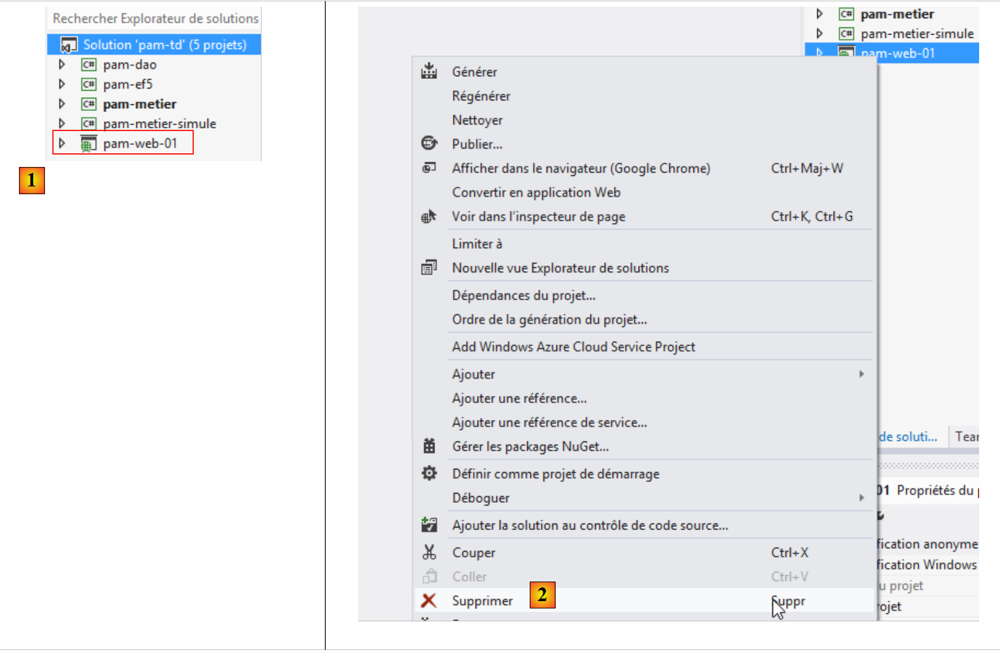 |
- في [1]، الحل [pam-td] في Visual Studio Express for Web. سيصبح مشروع الويب [pam-web-01] مرئيًا مرة أخرى. كنا قد فقدناه في Visual Studio Express for Desktop.
- سيتعين تعديل تكوين مشروع الويب [pam-web-01]. بدلاً من تعديل مشروع قيد التشغيل، سنقوم بإجراء التغييرات على نسخة من هذا المشروع. أولاً، في [2]، نزيل المشروع من الحل (لا يؤدي ذلك إلى حذف أي شيء من نظام الملفات).
 |
- في [3]، باستخدام مستكشف Windows، نقوم بنسخ المجلد [pam-web-01] إلى [pam-web-02]؛
- في [4]، أضف مشروع [pam-web-02] إلى الحل [pam-td]. سيظهر باسم [pam-web-01]؛
- في [5]، قم بتغيير هذا الاسم إلى [pam-web-02] وقم بتعيين هذا المشروع كمشروع بدء التشغيل؛
 |
- في [6]، قم بتحميل المشروع القديم [pam-web-01]. لديك الآن جميع مشاريعك. تأكد من العمل مع [pam-web-02].
9.25.2. إضافة المراجع الضرورية إلى المشروع
دعونا نلقي نظرة على المشروع ككل:
 |
يتطلب مشروع [pam-web-02] عددًا من مكتبات DLL:
- جميع تلك المشار إليها في المشاريع [pam-metier] و [pam-dao] و [pam-ef5]؛
- تلك الموجودة في مشاريع [pam-metier] و[pam-dao] و[pam-ef5] نفسها.
المهمة: أضف هذه المراجع المختلفة إلى مشروع [pam-web-02]. يجب إزالة المرجع إلى مشروع [pam-metier-simule]. نحن ننتقل إلى طبقة [business]. بعض مكتبات DLL موجودة بالفعل في المراجع. قم بإزالتها ثم أضف ما تريد.

9.25.3. تنفيذ طبقة [web]
قم ببناء مشروع [pam-web-02]. ستظهر أخطاء، مثل ما يلي:

تستخدم فئة [ApplicationModel] النوع [Employee]. مع محاكاة طبقة [business]، تم تعريف هذا النوع في مساحة الاسم [Pam.Business.Entities]. وهو موجود الآن في مساحة الاسم [Pam.EF5.Entities]. قم بتصحيح هذه الأخطاء كما هو موضح أعلاه.
9.25.4. تكوين طبقة [web]
كما تم في القسم 9.24.5، نحتاج إلى تكوين EF5 في ملف [web.config] الخاص بالمشروع:
 |
المهمة 1: استبدل المحتوى الحالي لملف [web.config] بالكامل بمحتوى ملف [app.config] من مشروع [pam-metier].
يستخدم ملف [Global.asax] لتطبيق الويب الخاص بنا [Spring.net] لاسترداد مرجع إلى طبقة [business]:
try
{
// instantiation layer [business]
application.PamMetier = ContextRegistry.GetContext().GetObject("pammetier") as IPamMetier;
}
catch (Exception ex)
{
application.InitException = ex;
}
السطر 4: نطلب مرجعًا إلى كائن Spring المسمى [pammetier]. هذا هو بالفعل الاسم الممنوح لطبقة [business] (تحقق من ذلك في ملف [web.config] الخاص بك).
9.25.5. اختبار طبقة [web]
نحن جاهزون لاختبار طبقة [web] الخاصة بنا. أولاً، سنقوم بتغيير منفذ العمل الخاص بها. بشكل افتراضي، [pam-web-02] له نفس تكوين [pam-web-01] وبالتالي يعمل على نفس المنفذ. وتُظهر التجربة أن هذا يسبب مشاكل: يستمر IIS في استخدام الكود من مشروع [pam-web-01]. تابع كما يلي:
 |
 |
في [4]، قم بتغيير رقم المنفذ، على سبيل المثال عن طريق تغيير رقم الوحدة.
قم بتشغيل مشروع [pam-web-02] بالضغط على [Ctrl-F5]. سترى بعد ذلك الصفحة الرئيسية التالية:
 |
في [1]، نسترد الموظفين من قاعدة البيانات [dbpam_ef5]. لاحظ أن الموظف [X X]، الذي كان موجودًا في طبقة [business] المحاكاة، لم يعد موجودًا. دعونا نجري محاكاة:
 |
في [2]، نرى الراتب الفعلي بدلاً من الراتب الوهمي. والآن دعونا نوقف نظام إدارة قواعد البيانات MySQL5 ونجري محاكاة أخرى:
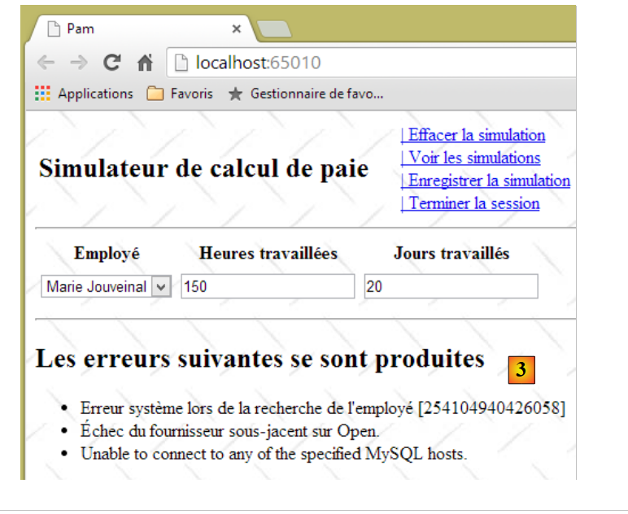 |
في [3]، حصلنا على صفحة خطأ قابلة للقراءة، على الرغم من أن بعض الرسائل باللغة الإنجليزية. والآن دعونا نوقف MySQL مرة أخرى ونعيد تشغيل التطبيق في VS باستخدام [Ctrl-F5]:

نحصل على عرض [initFailed.cshtml] الذي تم إنشاؤه في القسم 9.20.4. يعرض هذا العرض رسائل الخطأ من مكدس الاستثناءات. ندعو القارئ إلى إجراء المزيد من الاختبارات.
9.26. الخطوة 19: جعل تطبيق ASP.NET متاحًا على الإنترنت
عند تطوير تطبيق ASP.NET باستخدام Visual Studio، يضمن التكوين الافتراضي أن التطبيق لا يمكن الوصول إليه إلا على عنوان [localhost]. يتم رفض أي عنوان آخر بواسطة الخادم المدمج في Visual Studio، والذي يعرض بعد ذلك خطأ [400 Bad Request].
يمكن ملاحظة ذلك على النحو التالي:
- في نافذة DOS، لاحظ عنوان IP لجهاز التطوير الخاص بك:
Microsoft Windows [version 6.3.9600]
(c) 2013 Microsoft Corporation. Tous droits réservés.
dos>ipconfig
Configuration IP de Windows
Carte Ethernet Connexion au réseau local :
Suffixe DNS propre à la connexion. . . : ad.univ-angers.fr
Adresse IPv6 de liaison locale. . . . .: fe80::698b:455a:925:6b13%4
Adresse IPv4. . . . . . . . . . . . . .: 172.19.81.34
Masque de sous-réseau. . . . . . . . . : 255.255.0.0
Passerelle par défaut. . . . . . . . . : 172.19.0.254
Carte réseau sans fil Wi-Fi :
Statut du média. . . . . . . . . . . . : Média déconnecté
Suffixe DNS propre à la connexion. . . :
يظهر عنوان IP هنا في السطر 14. إذا كان لديك اتصال Wi-Fi، فسيظهر عنوان Wi-Fi الخاص بالجهاز في السطر 20 وما يليه.
- تحقق من خصائص المشروع [انقر بزر الماوس الأيمن على المشروع / خصائص / علامة التبويب الويب]:

سيتم تشغيل التطبيق على المنفذ [65010] للجهاز [localhost].
- قم بتشغيل مشروعك بالضغط على [Ctrl-F5]

- استبدل [localhost] بعنوان IP الخاص بالكمبيوتر:

أرسل الخادم استجابة [400 Bad Request]. ولا يقبل خادم IIS Express الذي يستخدمه Visual Studio سوى الاسم [localhost].
لجعل التطبيق المطور متاحًا على عنوان URL مثل [http://adresseIP/contexte/...], يجب استخدام خادم بخلاف IIS Express، مثل خادم IIS (وليس Express). للتحقق من توفره (عادةً في إصدارات Pro من Windows)، انتقل إلى لوحة التحكم [لوحة التحكم\النظام والأمان\أدوات إدارية]:

لا يتوفر هذا الخيار دائمًا. في هذه الحالة، انتقل إلى [لوحة التحكم \ البرامج] وقم بتثبيت أدوات إدارة الويب.
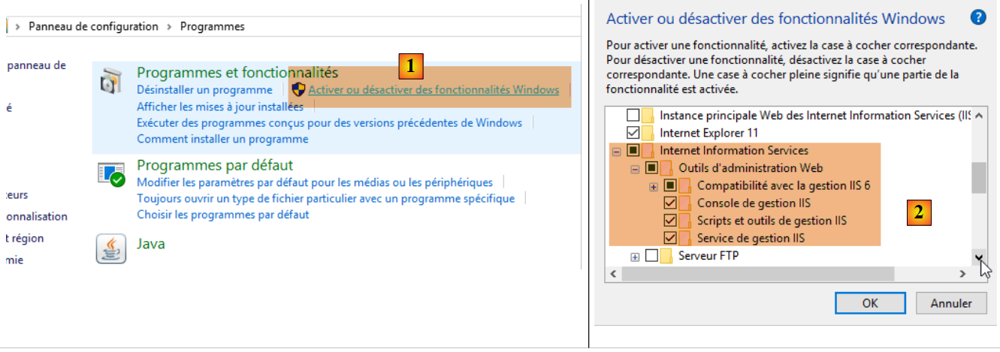 |
بمجرد توفر خيار [مدير خدمات معلومات الإنترنت (IIS)]، قم بتمكينه:
 |
ابدأ تشغيل موقع الويب الافتراضي. للقيام بذلك، يجب أن تكون [خدمة نشر الويب العالمية] قيد التشغيل أولاً:
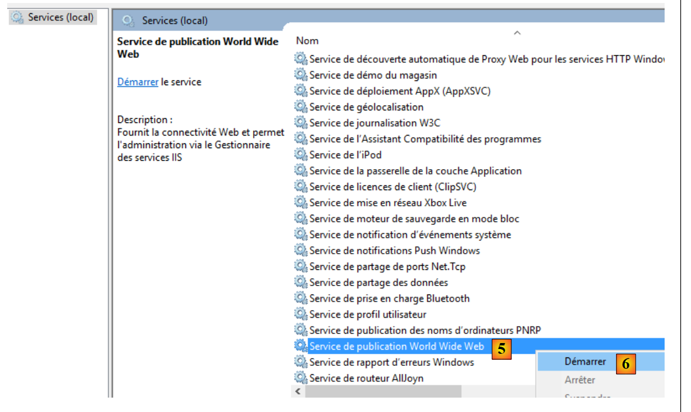 |
بمجرد الانتهاء من ذلك، أدخل عنوان URL [http://localhost] في المتصفح. أولاً، تحقق من أن خادم ويب آخر لا يستخدم المنفذ 80 بالفعل. إذا كان الأمر كذلك، فقم بإيقافه.
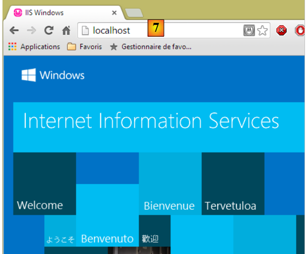 |
استجاب خادم IIS. استبدل الآن [localhost] بعنوان IP الخاص بجهاز الكمبيوتر الخاص بك:
 |
إنه يعمل. والآن لنعد إلى Visual Studio:
- أولاً، عليك تشغيل Visual Studio في وضع [المسؤول]
 |
بمجرد الانتهاء من ذلك، عليك تغيير تكوين مشروع الويب الذي تريد نشره [انقر بزر الماوس الأيمن على المشروع / خصائص / علامة التبويب "الويب"]:
 |
يجب عليك تحديد خادم IIS المحلي كخادم للنشر. يقوم Visual Studio بتعيين عنوان URL للتطبيق. يمكنك تغييره. قم بتشغيل المشروع بالضغط على [Ctrl-F5]:
 |
الآن استبدل [localhost] بعنوان IP الخاص بجهاز الكمبيوتر الخاص بك:
 |
إذا لم يكن لديك خادم IIS، يمكنك استخدام خادم ASP.NET مجاني مثل [Ultidev Web Server Pro]، المتوفر على الرابط [http://ultidev.com/Download/]. بعد التثبيت، هناك طريقتان لتشغيل تطبيق ويب باستخدام هذا الخادم:
الطريقة السريعة
افتح Windows Explorer وحدد المجلد الذي يحتوي على تطبيق ASP.NET الذي تريد نشره:
 |
سيتم بعد ذلك تشغيل خادم الويب، وسيتم عرض تطبيق الويب في المتصفح:
 |
- في [3]، يمكنك إيقاف خادم الويب أو تشغيله؛
- في [4]، يمكنك تغيير منفذ خدمة تطبيق الويب؛
قبل بدء تشغيل الخادم، يجب أن تكون خدمة [UWS HiPriv Services] أدناه قيد التشغيل:
 |
بمجرد تشغيل الخادم، ستبدو الواجهة كما يلي:
 |
يؤدي النقر على الرابط [6] إلى عرض الصفحة الأولى للتطبيق:
 |
يمكنك بعد ذلك إدخال عنوان IP للجهاز بدلاً من [localhost]:
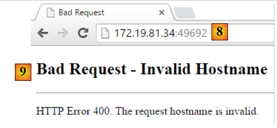 |
لذا هنا أيضًا، لا يُقبل سوى الاسم [localhost].
الطريقة الطويلة
قم بتشغيل تطبيق Ultidev Web Explorer
 |
واتبع الخطوات التالية:
 |
 |
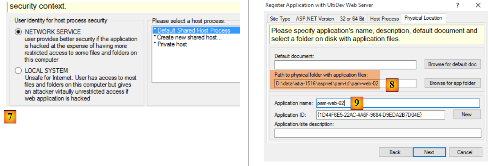 |
- في [8]، حدد مجلد تطبيق الويب المراد نشره؛
 |
- في [10-11]، يجب الوصول إلى التطبيق عبر الويب من خلال عنوان URL [http://localhost:81/]؛
 |
 |
- ابدأ تشغيل خادم الويب باستخدام [14]؛
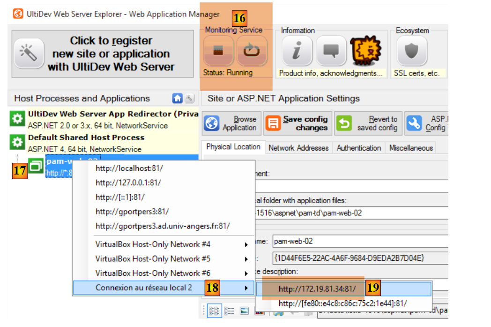 |
- ادخل إلى عنوان URL [19]؛
 |
- في [20]، تمكنا من الوصول إلى الصفحة المطلوبة باستخدام عنوان IP المحلي للجهاز بدلاً من الاسم [localhost]. كان ذلك بالضبط ما كنا نبحث عنه؛
يتم تثبيت خادم Ultidev كخدمة Windows تبدأ تلقائيًا. يمكنك تعطيل التشغيل التلقائي لخادم Ultidev كما يلي:
- انتقل إلى [لوحة التحكم\النظام والأمان\أدوات إدارية]؛
 |
- [1، 2]: حدد خصائص خدمة [Ultidev Web Server Pro]؛
- [3]: اضبطها على التشغيل اليدوي.
لتشغيل الخادم يدويًا، استخدم تطبيق [Ultidev Web Explorer]، على سبيل المثال:
 |
9.27. الخطوة 20: إنشاء تطبيق Android أصلي
عندما يكون لديك تطبيق أحادي الصفحة (SPA)، يمكنك إنشاء ملف قابل للتنفيذ على الأجهزة المحمولة (Android، iOS، Windows 8، إلخ) باستخدام أداة [PhoneGap] [http://phonegap.com/]. هناك طرق أخرى للقيام بذلك، لا سيما باستخدام المنتج مفتوح المصدر Apache Cordova [https://cordova.apache.org/]. تقوم الأداة المتاحة عبر الإنترنت على موقع Phonegap [http://build.phonegap.com/apps] بـ"تحميل" ملف ZIP الخاص بالموقع المراد تحويله. يجب أن يكون اسم الصفحة الرئيسية [index.html] ويجب أن تكون صفحة ثابتة، أي غير مُنشأة بواسطة إطار عمل ويب (ASP.NET، JEE، PHP، إلخ). سنبدأ بإنشاء هذه الصفحة.
9.27.1. بنية التطبيق
من المهم أن نتذكر هنا أننا نريد إنشاء تطبيق Android. غالبًا ما يكون لهذا النوع من التطبيقات البنية التالية:
 |
- في [1]، يستخدم المستخدم جهازًا لوحيًا يعمل بنظام Android يتواصل مع خدمة ويب واحدة أو أكثر [2]؛
لنعد إلى نموذج APU:
 |
- يتم تحميل الصفحة الأولية في المتصفح (لا يحدد الرسم البياني أعلاه مصدرها)؛
- يتم استرداد العروض اللاحقة عبر استدعاءات Ajax [1-4]. لن يتم تحميل أي صفحات جديدة بواسطة المتصفح؛
قد يتم تقديم العرض الأولي أو لا يتم تقديمه بواسطة نفس الخادم الذي يقدم العروض الأخرى التي يتم استردادها عبر استدعاءات Ajax. إذا لم يتم تقديمه بواسطة نفس الخادم، يجب أن يعرف JavaScript الموجود في الصفحة الأولية عنوان URL لخادم الويب الذي سيقدم العروض الأخرى. سيكون هذا هو الحال في تطبيق Android الذي سنقوم ببنائه:
 |
- ستتم تغليف الصفحة الثابتة [index.html] داخل تطبيق Android أصلي [1] يتمتع بقدرات متصفح، وبالتالي فهو قادر على تنفيذ JavaScript المضمن في صفحة [index.html]؛
- ستقوم هذه الصفحة باسترداد العروض الأخرى عبر استدعاءات Ajax إلى الخادم [2]. للقيام بذلك، يجب أن تعرف عنوان URL لخادم الويب؛
سنقوم بإعادة هيكلة تطبيق [pam-web-02] بحيث يعمل في هذا الوضع. وبالتالي، ستكون الصفحة الأولى كما يلي:
 |
- في [1]، عنوان URL للصفحة الأولية للتطبيق. سيتم توفير هذا العنوان بواسطة خادم Ultidev الذي تمت مناقشته في القسم 9.26؛
- في [2]، يجب على المستخدم إدخال عنوان URL لمحاكي كشوف المرتبات. يمكننا ترميزه بشكل ثابت في JavaScript للصفحة الأولية، ولكن ذلك سيؤدي إلى تعقيد الاختبار: بمجرد تغيير عنوان IP (أو المنفذ) للمحاكي، سيتعين علينا تغييره في كود JavaScript؛
- في [3]، رابط [تسجيل الدخول] الذي سيؤدي إلى عرض الشاشة التالية:
 |
- لاحظ أنه في [4]، لم يتغير عنوان URL للمتصفح. فهو لا يزال عنوان الصفحة الأولية وسيظل كذلك طوال فترة عمل التطبيق.
بمجرد تحميل هذا العرض، يعمل كل شيء كما كان من قبل: يتم تحميل العروض المختلفة عبر استدعاءات Ajax. سنرى أن هناك القليل جدًا من التعليمات البرمجية التي تحتاج إلى تعديل.
9.27.2. إعادة هيكلة مشروع [pam-web-02]
داخل المجلد [Content] لمشروع [pam-web-02]، نقوم بإنشاء المجلد [bootstrap] التالي (لا يهم الاسم):
 |
لقد قمنا بتضمين الصفحة الثابتة [index.html] وجميع الموارد التي تحتاجها (ملفات CSS و JS). تستخدم صفحة [index.html] الكود من الصفحة الرئيسية [_Layout.cshtml] لمشروع Visual Studio، مع إزالة كل ما هو غير ثابت. وينتج عن ذلك الكود التالي:
<!DOCTYPE html>
<html xmlns="http://www.w3.org/1999/xhtml">
<head>
<title>Simulateur de paie</title>
<meta charset="utf-8" />
<meta name="viewport" content="width=device-width" />
<link rel="stylesheet" href="Site.css" />
<script type="text/javascript" src="jquery-1.8.2.min.js"></script>
<script type="text/javascript" src="jquery.validate.min.js"></script>
<script type="text/javascript" src="jquery.validate.unobtrusive.min.js"></script>
<script type="text/javascript" src="globalize.js"></script>
<script type="text/javascript" src="globalize.culture.fr-FR.js"></script>
<script type="text/javascript" src="jquery.unobtrusive-ajax.min.js"></script>
<script type="text/javascript" src="myScripts.js"></script>
</head>
<body>
<table>
<tbody>
<tr>
<td>
<h2>Simulateur de calcul de paie</h2>
</td>
<td style="width: 20px">
<img id="loading" style="display: none" src="indicator.gif" />
</td>
<td>
<a id="lnkConnexion" href="javascript:connexion()">
| Connexion<br />
</a>
<a id="lnkFaireSimulation" href="javascript:faireSimulation()">
| Faire la simulation<br />
</a>
<a id="lnkEffacerSimulation" href="javascript:effacerSimulation()">
| Effacer la simulation<br />
</a>
<a id="lnkVoirSimulations" href="javascript:voirSimulations()">
| Voir les simulations<br />
</a>
<a id="lnkRetourFormulaire" href="javascript:retourFormulaire()">
| Retour au formulaire de simulation<br />
</a>
<a id="lnkEnregistrerSimulation" href="javascript:enregistrerSimulation()">
| Enregistrer la simulation<br />
</a>
<a id="lnkTerminerSession" href="javascript:terminerSession()">
| Terminer la session<br />
</a>
</td>
</tbody>
</table>
<hr />
<div id="content">
<table>
<tr>
<td>URL du simulateur</td>
<td><input type="text" id="urlServiceWeb" name="urlServiceWeb" size="80"></td>
</tr>
</table>
<div id="erreur">
<h3>Réponse du serveur :</h3>
<div id="erreur1"></div>
<div id="erreur2"></div>
</div>
</div>
</body>
</html>
لقد أضفنا ما يلي:
- الأسطر 27-29: أضفنا خيار القائمة [Login] للسماح بالاتصال بخدمة المحاكاة؛
- الأسطر 55-56: حقل إدخال عنوان URL للمحاكي؛
- الأسطر 59-63: رسالة خطأ في حالة فشل الاتصال؛
يتم إعادة هيكلة الكود فقط في كود [myScripts.js] في السطر 14 أعلاه. لا توجد تغييرات أخرى. يتطور الكود على النحو التالي:
// au chargement du document
$(document).ready(function () {
// on récupère les références des différents composants de la page
loading = $("#loading");
content = $("#content");
erreur = $("#erreur");
erreur1 = $("#erreur1");
erreur2 = $("#erreur2");
// les liens du menu
lnkConnexion = $("#lnkConnexion");
lnkFaireSimulation = $("#lnkFaireSimulation");
lnkEffacerSimulation = $("#lnkEffacerSimulation");
lnkEnregistrerSimulation = $("#lnkEnregistrerSimulation");
lnkVoirSimulations = $("#lnkVoirSimulations");
lnkTerminerSession = $("#lnkTerminerSession");
lnkRetourFormulaire = $("#lnkRetourFormulaire");
// on les met dans un tableau
options = [lnkConnexion, lnkFaireSimulation, lnkEffacerSimulation, lnkEnregistrerSimulation, lnkVoirSimulations, lnkTerminerSession, lnkRetourFormulaire];
// on cache certains éléments de la page
loading.hide();
erreur.hide();
// on fixe le menu
setMenu([lnkConnexion]);
});
- الأسطر 6-8: معرّفات المنطقة التي تعرض أخطاء الاتصال في صفحة [index.html]؛
- السطر 10: الرابط الجديد للاتصال بالمحاكي؛
- السطر 21: منطقة الخطأ مخفية في البداية؛
- السطر 23: يتم عرض رابط الاتصال فقط؛
في صفحة [index.html]، يتم تعريف رابط الاتصال على النحو التالي:
<a id="lnkConnexion" href="javascript:connexion()">
| Connexion<br />
</a>
وظيفة JS [connexion] (السطر 1) هي كما يلي:
var urlServiceWeb;
var erreur, erreur1, erreur2;
function connexion() {
// retrieve the urlServiceWeb from the web service
urlServiceWeb = $("#urlServiceWeb").val();
// retrieve the input form
$.ajax({
url: urlServiceWeb + '/Pam/Formulaire',
type: 'POST',
dataType: 'html',
beforeSend: function () {
// wait signal on
loading.show();
},
success: function (data) {
// displaying results
content.html(data);
// menu
setMenu([lnkFaireSimulation]);
},
error: function (jqXHR) {
erreur2.html(jqXHR.responseText);
erreur1.html(jqXHR.getAllResponseHeaders().replace(/\r\n/g, "<br/>").replace(/\r/g, "<br/>").replace(/\n/g, "<br/>"));
erreur.show();
},
complete: function () {
// wait signal off
loading.hide();
}
});
}
- السطر 7: نسترد عنوان URL الذي أدخله المستخدم. يتم تخزينه في المتغير العام من السطر 1. بهذه الطريقة، سيكون متاحًا في الوظائف الأخرى للملف؛
- السطر 10: نقوم بإجراء استدعاء Ajax إلى عنوان URL الخاص بالمحاكي [/Pam/Form]. يعرض عنوان URL هذا العرض الجزئي لإدخال بيانات المحاكاة (الموظفون، ساعات العمل، أيام العمل). في الإصدار الأولي من [pam-web-02]، كان هذا الرابط كافياً. كان يتم إرفاقه تلقائياً بالرابط الذي أظهر الصفحة الأولية. الآن، نفترض أن الصفحة الأولية قد يتم تقديمها بواسطة خادم آخر غير الخادم الذي يستضيف المحاكي. لذلك يجب أن يسبق عنوان URL [/Pam/Formulaire] المتغير [urlServiceWeb] من السطر 1، وهو عنوان URL للمحاكي (على سبيل المثال، http://172.19.81.34/pam-web-02). يجب القيام بذلك لجميع استدعاءات Ajax في الملف؛
- الأسطر 17-22: إذا نجح الاتصال، يتم عرض العرض الجزئي [Formulaire.cshtml]، وتظهر قائمة تحتوي فقط على الرابط [Run Simulation] (السطر 21)؛
- الأسطر 23-27: إذا فشل الاتصال:
- في السطر 24، يتم عرض استجابة HTML المرسلة من خادم الويب (إن وجدت)؛
- في السطر 25، يتم عرض رؤوس HTTP المرسلة من خادم الويب (إذا كان قد استجاب)؛
هذا كل شيء. في حالة النجاح، يتم عرض الصفحة التالية:
 |
نحن الآن في الوضع السابق، حيث يتم الحصول على العروض الآن عبر استدعاءات Ajax. وبالتالي، كما هو موضح أعلاه، سيتم تنفيذ النقر على رابط [تشغيل المحاكاة] بواسطة الكود التالي في ملف [myScripts.js]:
function faireSimulation() {
// on récupère des références
var simulation = $("#simulation");
var formulaire = $("#formulaire");
// formulaire valide ?
var formValid = formulaire.validate().form();
if (!formValid) return;
// on fait un appel Ajax à la main
$.ajax({
url: urlServiceWeb + '/Pam/FaireSimulation',
type: 'POST',
data: formulaire.serialize(),
dataType: 'html',
...
});
// menu
setMenu([lnkEffacerSimulation, lnkEnregistrerSimulation, lnkTerminerSession, lnkVoirSimulations]);
}
- تم إجراء تغيير واحد، في السطر 10، حيث أصبح عنوان URL السابق مسبوقًا بعنوان URL الخاص بالمحاكي؛
9.27.3. اختبار المشروع المعاد هيكلته
في القسم 9.26، أوضحنا كيفية تثبيت تطبيق [pam-web-02] على خادم Ultidev. سنبدأ من هناك:
 |
- في [6]، نطلب عرض الصفحة [bootstrap/index.html]. نحصل على العرض التالي:
 |
دعونا ندخل عنوان URL غير صحيح:
 |
- في [10]، رؤوس HTTP لاستجابة الخادم؛
- في [11]، مستند HTML من استجابة الخادم؛
إذا أدخلت عنوان URL الصحيح:
 |
نحصل على الاستجابة التالية:
 |
9.27.4. إنشاء ملف Android الثنائي
سنقوم بإنشاء ملف Android الثنائي من الموقع الثابت الذي أنشأناه واختبرناه للتو[1]:


نضيف في [2] ملف [config.xml] الذي سيُستخدم لتكوين المكون الإضافي [Phonegap]، والذي سيقوم بإنشاء ملف Android الثنائي. وفيما يلي كود الملف:
<?xml version='1.0' encoding='utf-8'?>
<widget id="android.exemples.pam" version="0.0.1" xmlns="http://www.w3.org/ns/widgets" xmlns:cdv="http://cordova.apache.org/ns/1.0">
<name>Pam</name>
<description>
IstiA - Université d'Angers
</description>
<author email="serge.tahe@univ-angers.fr">
Serge Tahé
</author>
<content src="index.html" />
<access origin="*" />
<allow-navigation href="*" />
<allow-intent href="*" />
<plugin name="cordova-plugin-whitelist" />
</widget>
- الأسطر 7-9: أدخل معلومات الاتصال الخاصة بك هنا؛
- الأسطر 11-13: تسمح هذه الأسطر لـ JavaScript المضمنة في تطبيق الويب، والتي ستعمل على جهاز Android، بطلب عناوين URL خارج الجهاز؛
نقوم بضغط محتويات مجلد [Content/bootstrap]:

بعد ذلك، انتقل إلى موقع PhoneGap [http://build.phonegap.com/apps]:
 |
- قبل [1]، قد تحتاج إلى إنشاء حساب؛
- في [1]، نبدأ؛
- في [2]، اختر خطة مجانية تسمح بتطبيق Phonegap واحد فقط؛
- في [3]، قم بتنزيل التطبيق المضغوط [4]؛
 |
 |
- في [5]، أدخل اسم التطبيق؛
- انقر على الرابط [6] لإنشاء الملفات الثنائية لأنظمة iOS وAndroid وWindows. قد يستغرق ذلك بضع ثوانٍ؛
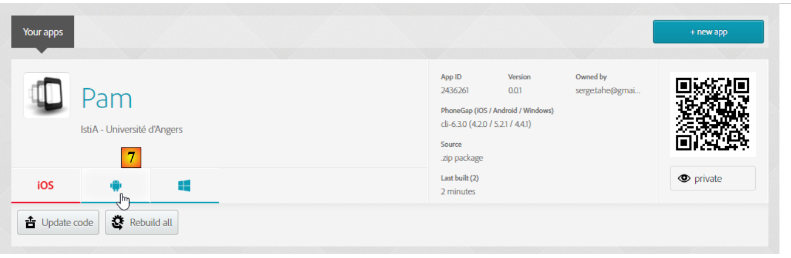 |
- في [7-9]، قم بتنزيل الملف الثنائي لنظام Android؛
 |
قم بتشغيل محاكي [GenyMotion] لجهاز لوحي يعمل بنظام Android (انظر القسم 11.1):

أعلاه، نقوم بتشغيل محاكي جهاز لوحي مع Android API 21. بمجرد تشغيل المحاكي،
- قم بإلغاء قفله عن طريق سحب القفل (إن وجد) إلى الجانب ثم تركه؛
- باستخدام الماوس، اسحب ملف [Pam-debug.apk] الذي قمت بتنزيله وأسقطه على المحاكي. سيتم بعد ذلك تثبيته وتشغيله؛
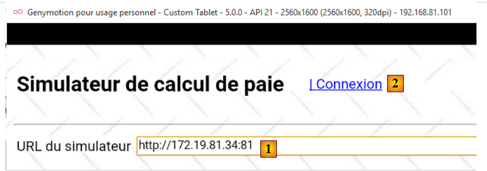 |
أدخل [1] عنوان URL للمحاكي كما هو موضح في القسم 9.27.3. بمجرد الانتهاء، اتصل بالمحاكي باستخدام الرابط [2]:

اختبر التطبيق على المحاكي. من المفترض أن يعمل.